| ロールプレイングワールド (スマッシュ文庫) | |
| 熊谷雅人 | |
| PHP研究所 (2011) | |
ロールプレイングワールド
著▼ 熊谷雅人
イラスト▼ 黒銀
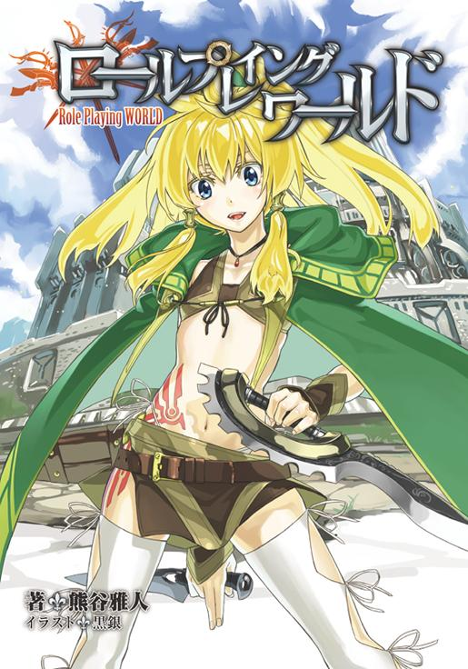
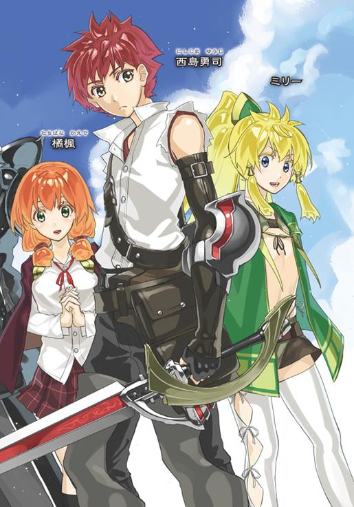
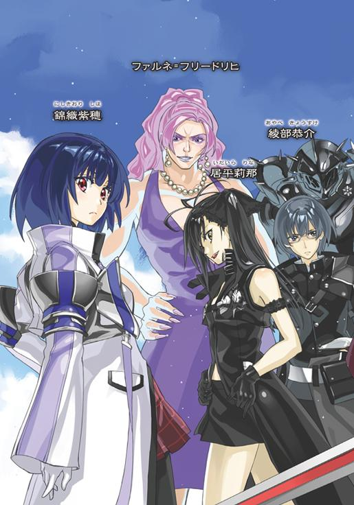
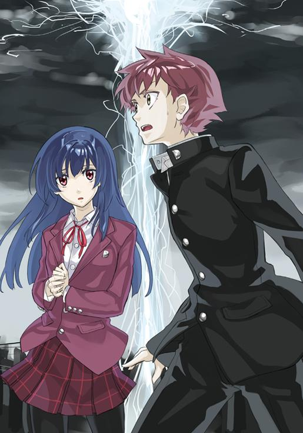
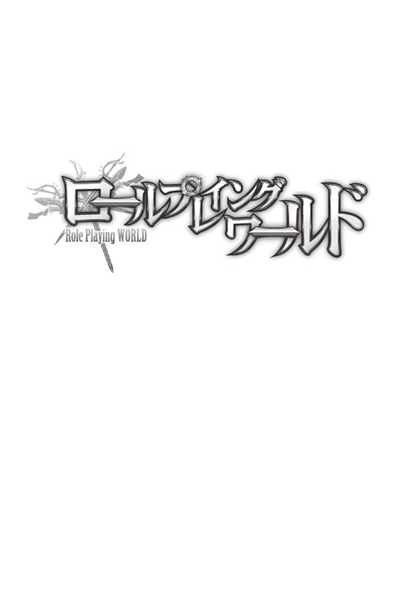
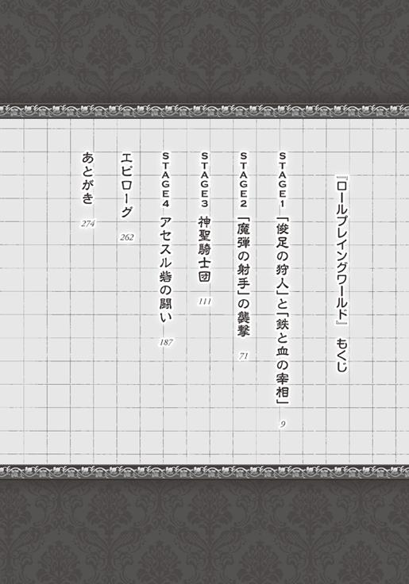
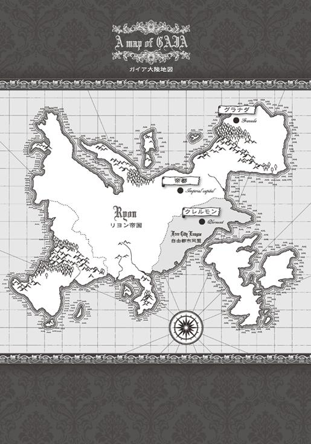
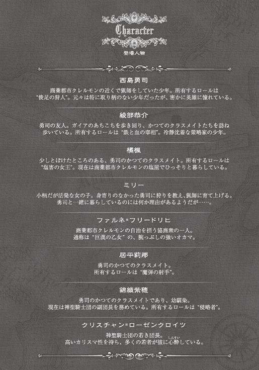
灌木の間から、獣のうめき声が漏れてくる。重低音の管楽器のようなその音を聞き、身をかがめて短い槍を握る西島勇司は筋肉をきゅっと固くした。
獣までの距離はおよそ五メートル。風下にいる勇司のにおいは届いていない。獣はいつも通りの獣道を進んでくるはずだった。
獣の足音がすぐ近くにまで迫る。緊張して何度も狩りを失敗してきた勇司だったが、今では足音から獣までの距離を正確に把握することができる。
かつてはごく普通の高校生だった勇司も、すっかり狩りを生業にする生活に慣れてしまった。彼が過ごしてきた東京在住の高校生としての日常は瓦解し、全く新しい異質な日常が始まってから一年。その時間は勇司を狩人としてしっかりと鍛え上げていた。
ずしり。
重い足音が鼓膜を揺らす。このタイミングで、この距離。勇司の経験が、狩りのゴーサインを出した。
「――俊足の狩人」
勇司は自分の〝ロール〟を小さな声で口にする。
その言葉に反応して、勇司の目の前に一冊の本とタクトが現れた。臙脂色の表紙に金の縁取りがされたその本は宙に浮いており、その隣のタクトも同じように重力に縛られずふわふわとその場に留まっている。勇司は左手で本を掴み、槍を持ったままの右手にタクトも一緒に握りこむ。
一度、深く息を吸う。
ロールを発動させてしまう前に、少しでも体に空気を溜めておきたかった。
臙脂の本が自然と開く。勇司はそのページをタクトでなぞった。それがロールを発動させる合図だった。
ロールとは本を持つ者に与えられた特殊な能力。人に与えられた本来の力を凌駕する、過ぎたる力。
ロール発動と同時に本が輝き、少し遅れて勇司の体も淡い光に包まれる。本が光の粒子を散らして、タクトと一緒に消え去った。
一気に息苦しくなり、空気の重さを感じるようになる。この感覚は、ロールが正常に始動した証拠だ。
勇司のロール「俊足の狩人」の制限時間は〇・五秒。ただし、この〇・五秒間を勇司は五秒間に体感することができる。つまり、〇・五秒間だけ通常の十倍の速度で行動ができる。それが彼のロールの効果だった。
心の中で五秒を数えながら、勇司は身を潜めていた茂みから飛び出した。細い枝を押しのけながら、獲物を目で確認する。普段なら感じないような重い空気抵抗と息苦しさがあるが、そういった超高速移動がもたらすデメリットにも勇司は十分に慣れていた。
四本足の獣の目の前に勇司は躍り出た。獣の形状はイノシシに近いが、頭にはサイのような角が生えているうえに、大きさは勇司の倍はある。勇司が元々住んでいた世界にはいなかった生物だ。
獣は勇司に気付き、鋭い角を勇司の方に向けるがその動きは緩慢。本来ならば、野生の獣らしく俊敏に迎撃態勢に入っているのだろうが、世界を十分の一の速さで知覚している勇司には、スローモーション映像のように見えた。
獣の角をかわし、勇司は真正面から首筋に、両手で握った槍を突き立てる。
ここまでで四秒。
さらに力を込め、槍を深く突き刺す。
五秒が経過。
勇司の世界が本来の時間経過に戻った。
世界の動きが急激に加速したような錯覚。実際は元の速さに戻っただけなのだが。
「ブォォォ！」
首に槍を突き刺された獣が、唸り声を上げながら前足を上げて立ち上がった。
――刺し方がまだ甘かったか！
勇司は素早く槍を引き抜き、獣から距離をとった。こんなでかい生き物とまともにやりあったら、人間などあっという間に潰されてしまう。そういう知識も、勇司はこの一年間の生活で体に叩き込まれていた。
「ブォォ......」
獣はさらに咆哮を上げるが、その勢いは先ほどよりも随分と弱くなっていた。後ろ足で立っていた獣はそのまま横に倒れ、獣の周りには血が流れ出し始めた。
「やった......のかな？」
槍を獣の方に向け、身を低く構えていた勇司は恐る恐る獣の方に近づく。
「漫画とかだと、いきなり復活して襲ってくるんだよなぁ......」
そんな独り言を口にしながら槍が届くぎりぎりの距離まで近づくと、勇司は槍の先で獣をつついた。
獣の体が僅かに動く。
「うわっ！」
勇司は一気に獣から五歩も後ずさった。しかし、獣は攻撃をしてくる様子はない。横たわったまま、僅かに四肢を痙攣させるだけだった。再び近づき、槍で突くと、今度は無反応。
「よし。出てきていいよ、ミリー」
獣が完全に息絶えたのを確認した勇司は、少し離れた茂みに向かって声をかけた。すると、その茂みの中から一人の少女がひょっこりと顔を出した。綺麗な金髪をポニーテールにまとめたその少女は意地悪な笑みを浮かべ、勇司に言う。
「勇司、ビビり過ぎ」
「う、うるさい！」
先ほどの狼狽を見られたのを恥ずかしく思い、勇司は腕組みをしてそっぽを向いた。
「へへへ。とりあえずご苦労さまでした」
茂みから出てきた少女――ミリーは勇司にぺこりとお辞儀をした。彼女は深緑のポンチョのような服を着ていて、体はほとんどそれに包まれている。その小柄な体が軽やかに勇司の前に舞い降りた。身のこなしの軽い彼女は、いつでも跳ねるように歩くし、曲芸師のようにアクロバティックな動きで勇司を驚かせたりもした。
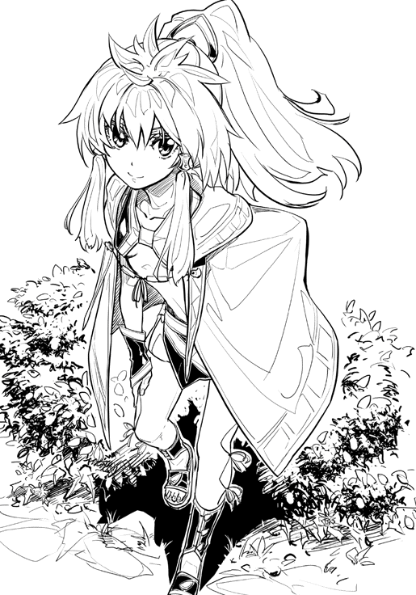
「それじゃ、頼むよ」
勇司が獣の前から離れ、代わりにミリーが獣の傍らに立つ。彼女は大きめのナイフを取り出すと、それをくるくると器用に回した。
「勇司もそろそろ慣れたらいいのに」
「ぼくには無理だよ」
ミリーが獣の体にナイフを突き立てると、慌てて勇司は目を逸らす。
「殺すのは平気なのにね」
「殺すのだってかなり嫌だって言ってるだろ」
血のにおいが鼻にまで届くと、勇司は意識的に呼吸を止めた。その一方でミリーはてきぱきと解体作業をこなしている。
「むやみに殺しているわけじゃないんだし、後で神様に感謝すればコイツだって許してくれるって」
「それは分かってるよ。生きるためには食べなくちゃいけないし、弱肉強食っていう言葉もあるくらいだから。だけど、やっぱり血を見るのは苦手だな......」
「女々しいなぁ、勇司は」
ミリーが野蛮過ぎるんだよ、とは思っても、口に出した後のことを考えると、勇司はそんなことは言えない。
「せっかく便利なロールがあるのにね......っと、終わったよ」
ミリーに声をかけられ、勇司はようやくミリーの顔を見て喋ることができるようになった。彼女の手には獣の眼球があった。何度も見ている〝狩りの証拠品〟だが、目の前に出されると勇司はいつも気分が悪くなる。
「便利なロールって言っても、使い終わった後は体がすごく痛くなるんだよ。無理やり体を動かしてるから」
「はいはい。『キャスト』様はご苦労も多いようで」
ミリーは悪戯っぽく笑う。
「ちょっと前までは、そのロールで英雄になるんだって意気込んでたのに。血が怖いうえに、ロールを使うと疲れちゃうようじゃ、英雄様は遠いんじゃない？」
「そんなことないって！ ちゃんと、使う時がきたら、ロールくらい何度だって使ってみせるよ」
「へー、それなら、その時を期待しておこうかな」
ミリーはにやりと笑い、眼球を麻布で包んだ。
「わたしはこれをジョゼフさんのところに持っていくね」
「うん。お願い」
勇司は眼球を取り出された獣を意識しないように、ミリーを見送った。
いつも通りの狩りが終わった。後は狼たちが獣の肉を持っていかないように、勇司がここで見張っているだけだ。
夕闇が迫る森に一人でいると、心細くなってくる。勇司は槍を持つ手に力を入れ、辺りを見回す。この時間の森は、危険な肉食獣たちが群れで狩りに出始める。そいつらと獲物の取り合いになるのは避けたいところだ。今日の勇司の狩りは、少し時間が遅すぎたため、本来ならいらぬ心配までしなければならない。
猛禽類の鳴き声。
風が葉を揺らす音。
黒く塗りつぶされつつある森林の中では、すべての音が神経をすり減らす。
こんな状況になると、いつも勇司は考えてしまう。
「こんな生活、いつまで続くんだろう......」
それは、勇司の中で何度も繰り返され、摩耗してしまった疑問だった。持ったことのない武器を手にし、身に余る特殊な能力を手に入れた。この生活が始まってからの一年間、それは勇司にとって壮絶な日々だった。食べられるものは何でも食べたし、食べられないものまで食べて腹をくだしたりもした。危険な動物を避けるために岸壁の上で眠り、夏の暑さに喘ぎ、冬の寒さに凍えた。そうやって、少しずつではあるが勇司は世界に順応してきた。
この世界に放りこまれたばかりの頃に比べて、今の勇司の生活は安定していた。ミリーと出会えたことが大きかったし、元々は大人しくて活発ではなかった彼自身が、逞しく成長していることも原因の一つだ。それでも元の生活に比べれば、この世界での生活はひどく厳しい。
こんな生活がいつまで続くんだろう。
再び浮かぶ疑問。
その答えはまだ出ない。
「たっだいま」
浮かない顔の勇司とは対照的に、いつも笑顔のミリーが中年の男たちを引き連れて帰ってきた。男たちは勇司とは目を合わさずに、倒れている獣を三人がかりで担ぐと、そのまま来た道を戻っていく。
「今日のは大物だったから、金貨三枚で売れたよ」
そう言いながらミリーは、勇司に金貨を見せた。
「今日は奮発していいお肉と東国の果物を食べようね。帰りに買い物して帰ろうよ」
「そうだね」
「元気ないなぁ。せっかく高く売れたのに」
喜びを見せない勇司の様子を見て、ミリーは口をへの字にする。
「あ。また、『元の世界に帰りたい』とか言い出すんじゃないでしょうね？」
そう言われ、勇司は顔をしかめた。
「そりゃ、言いたくもなるよ」
「せっかく金貨三枚なのに。前の村では、もっとたくさん金貨もらえたの？」
「金貨なんて使ってないよ。ぼくが住んでいた世界には、もっと便利なものがたくさんあるんだ。カードっていって、これくらいの小さな薄っぺらい板で、何でも買えたりしたんだよ」
勇司はミリーにいつもの話をする。こうやって何度も同じ話をしていなければ、いつか自分が元の世界のことを忘れてしまいそうで恐ろしかった。
「ふぅん。そんな板に価値があるってこと？ 変なの」
「そういう訳じゃないんだけど、えっと銀行って言っても分からないよね」
「わっかりませーん」
ミリーは両手を挙げて、全身で分からないことをアピールする。
「うー。とにかく、凄く便利なものなんだって。多分、ミリーがぼくたちの世界に来たらびっくりするぞ。狩りなんかしなくても、コンビニに行けば弁当が買えるんだからな」
「『こんびに』ねぇ。勇司はよくその話をするけど、わたしはイマイチ信じられないんだよね。あと、車とか電車とかの話もさ」
「車も電車も本当の話だよ。ここにはないけど、日本にはあるんだ。パソコンも携帯もなんでもある」
「日本か。それって、リヨン帝国より遠くにあるんでしょ？ 聞いたことないんだけど、そんな国」
「ある！ あと、ミリーが喋ってる言葉も日本語だからな！ あー！ なんで、日本語を喋ってる奴が、日本を知らないんだ！ 納得いかない！」
勇司は憮然として言い放つが、ミリーの方は軽く肩をすくめただけだった。残念ながら、この世界では勇司ではなく、ミリーの方が常識人だった。
勇司の知る文明など誰も知らない。日本など誰も知らない。この世界では、勇司はただの嘘つきか、病的な妄言癖の持ち主としか思われない。
「すぐにでも日本に帰りたい？」
そう言って、ミリーは勇司の横にぴったりと並んだ。勇司は自分の肩ほどの高さに並ぶミリーの顔が、こちらをじっと見ているのに気付き、ドギマギしてしまう。
金髪碧眼の少女の瞳は可憐で、女子と接する経験の乏しい勇司はミリーに接近されるとほとんど思考停止状態になってしまった。
「な、なんだよ、急に」
「故郷に帰りたいのは分かるけど、いきなり村から出ていったりしないでね？」
上目遣いだが、ミリーは真っ直ぐに勇司を見据えている。勇司は、彼女の息遣いや鼓動まで感じられそうな距離を急に意識し始め、鼓動を速めた。
「そんなこと言って、ど、どうしたんだよ」
「へへへ。赤くなってる」
ミリーは舌を出して笑い、ぱっと勇司から離れる。残された勇司は、バカにされたようで悔しいやら淋しいやら、何とも言えない気持ちが胸にくすぶっていた。
「大事な大事なキャスト様なんだから。簡単に村から出ていってもらっても困るもん。それに、『契約』もあるしね」
そう言ってウィンクすると、ミリーは慣れた足取りで森を軽やかに駆ける。そんな彼女を勇司は無言で追った。
西島勇司は平凡な男子高校生だった。
世の中に、本当の意味で平凡な人間などいない。どこかが人よりも秀でていたり、劣っていたりするものだ。
勇司にだって何か人に誇れるものがあるはずだった。しかし、これまでの彼の十七年間の人生の中で、それを見つけることはできていない。
このまま普通の人として人生を終えるのだろうか。不意にそんなことを考えることもあったが、別にそれが嫌なわけではない。健康で長生きできるだけで、十分に幸せじゃないか。そうやっていつも自分を納得させていたが、本音は違った。
英雄になりたい。
誰からも憧れられ、讃えられ、愛される人物になりたい。高校生にもなって、そんな漫画やアニメみたいなことを言うな、とバカにされるのが怖くてほとんど口にすることはないが、勇司にはそんな夢があった。
どちらかといえば大人しい性格で、学校で活躍することすらほとんどないからこそ、内に秘める想いは日に日に大きくなっていった。
さて、時は一年前にさかのぼる。それは、凡人の勇司と、そのクラスメイトの運命を大きく変える事件の日だった。
ごくありふれた高校の、ごくありふれた修学旅行の様子。東京での日常から離れ、沖縄にやってきた生徒たちにとっての生ぬるい〝非日常〟。
「こんな天気ですが、みなさん沖縄は楽しめましたか？」
バスガイドのお姉さんの言葉に、ノリのいい男子たちが大声で返事をする。
「今日はこのままホテルへと帰ります。明日は晴れる予報なので、最終日はきっと楽しめますよ」
その言葉に、一部の男子が再び大きな声で返事をした。バスの外は台風による横殴りの雨で、数メートル先もぼやけて見えるような状況だが、バスの中は修学旅行の異様なハイテンションで盛り上がっていた。
「今日の夜は神島の部屋に集合だからな」
そんな喧騒の中心地から少し離れた、後ろから二番目の座席に勇司は座っていた。話しかけてきたのは、勇司の隣に座っていたクラスメイトの谷田部だった。谷田部は教師陣からは大人しい生徒だと思われているが、裏では色々と校則違反を繰り返している問題児だった。
「大丈夫かよ、それ」
「何だよ、甲本に見つかるのが怖いのか？」
甲本というのは、生活指導の教師であり、このクラスの担任教師でもある。バスの最前列の席には彼がどっかりと腰をおろしている。
「そうじゃないけどさ」
「じゃあ、なんでだよ？ 錦織さんも来るらしいぞ」
思わず声が漏れそうになるのを、勇司はぎりぎりでこらえる。
錦織紫穂。その少女の名前を聞いただけで、勇司の心は乱されてしまうのだ。谷田部はそんな勇司の様子を見逃さなかった。
「お前ら幼馴染なんだろ？ 絶対に来いよ」
「べ、別にそんなの関係ないだろ」
「関係あるよ。来なかったら、錦織さんにお前の恥ずかしい昔話を全部聞きだすからな」
「やめろよ。てか、本当に紫穂が来るの？」
勇司が尋ねると谷田部はにやりと笑い、頷いた。
「それでは、ホテルに到着です。運転手さんが荷物を下ろす準備をしますので、少し待ってから降りてください」
バスガイドに言われ、勇司はそわそわしながら自分の膝をぎゅっと握った。
紫穂は勇司の二つ前の席に座っていた。
容姿端麗の上に文武両道。神様から二物どころか三物も四物も与えられた才女である。勇司とは遺伝子レベルで違う構造をしている彼女だが、勇司と紫穂は家が近所で、幼稚園の頃からの付き合いだった。古くから紫穂を知る勇司には、紫穂がわざわざ夜に部屋を抜け出すとは思えなかった。
だけど、もしも本当なら......。そう考えると、勇司は自然とにやけてきてしまう。せっかくの修学旅行なのだから、そういう思い出があってもいいじゃないか。
「キャッ！」
白い閃光と同時に、女子の悲鳴が響いた。そして、少し遅れて空が割れたかと思うほどの轟音が響いた。
「近くに落ちたな」
勇司の後ろの席に座る綾部恭介が言った。
「そんなの分かるのか？」
勇司は体を捻り、後ろにいる恭介に尋ねる。
中性的な顔立ちに、知的な銀縁の眼鏡をかけたその少年は、いつも通り落ち着き払っていた。見るものに安心と親しみを感じさせる、独特の穏やかな表情と喋り方で、恭介は説明を始める。
「光と音の間隔で分かるだろ。単純に音も大きかったしな」
「なるほど」
こいつはいつもそんなことを考えているのか、と勇司は不思議に思うことがあった。勇司が質問すると、恭介はほとんどの場合で適切な返答をくれるのだ。
「こんなに雨が降ってるのに、本当に明日は晴れるのか？」
「さぁね。ま、台風が過ぎ去ってしまえば、晴れるんじゃないかな」
台風か。
勇司は目を窓の外に向ける。豪雨の中にそびえるホテルは、霧の中の古城に見えた。
「それじゃ、一番前の席の人から降りてください」
バスガイドの指示があり、全員が一斉に立ち上がり準備を始める。
「恭介は神島の部屋に行くのか？」
バスの通路に出たところで、勇司は恭介に尋ねた。
「来てもいいぞ」
すぐに谷田部が横から会話に入ってきた。
「俺は行かないよ」
恭介はクールに答える。男子にしては髪が長く、遠目に見たら女子生徒に見間違われそうな風貌だが、なよなよとすることはない。彼の意思はいつでも固かった。自分の意思を強く持っており、人の意見に流されることはほとんどない。
「一つの部屋に集まるんだろ？ 狭いところは苦手なんだよ」
「なんだよ、それ」
谷田部はつまらなそうに言うが、恭介はいつもの微笑みを崩さない。
「悪いね。そういう性質なんだよ」
再び閃光。遅れて轟音。
「また雷か」
二度目なので慣れたのか、今度は女子たちもほとんど騒がない。雷のことなど気にせず、バスの前の席の生徒から順番にバスを降りていく。
「あれ......」
通路に立つ勇司は僅かにバランスを崩した。
――何かが変だ。
それは妙な感覚だった。ざわざわと胸の奥が騒がしくなり、体中から血の気が引いていく。
貧血？ いや、違う。
それは勇司には初めての体験だったが、気持ちのいいものではない。体の内側に広がるのは明確な嫌悪感だった。
「どうした？」
後ろに立つ恭介が、勇司の体を支えてくれる。
「......ごめん」
何かが起こっている。
勇司はそれを直感した。
その感覚があったのは勇司だけではないようだった。周りの生徒たちもふらふらとし始め、座席の背もたれなどを掴むことで体勢を保っている。
三度目の閃光。
轟音はない。
「きゃぁぁぁ！」
バスの外に出ていた女子の一人が、悲鳴をあげながらバスの中に帰ってきた。クラスメイトの神島だった。
「外で、人が！」
四度目の閃光。やはり、轟音はなし。
次の瞬間、神島が消えた。彼女だけでなく、バスの中にいた数名の生徒の姿がなくなった。
何かの手品のように、映画のワンシーンのように、気分の悪い悪夢のように。
どこにも痕跡を残さずに消え去った。
勇司はその様子をただ固まって見ていた。
なぜ人が消えたのか。
なぜそのようなことが起こったのか。
そもそも、何が起こっているのか。
何も理解できないまま、頭には漠然とした巨大な恐怖が広がっていた。
「出るぞ！」
すぐに行動に出たのは恭介だった。彼は後ろから勇司を押し、バスの外に飛び出す。バスの外には数名の生徒がいたが、いずれも状況を把握できていないらしく、ただ茫然と雨にうたれていた。
「みんなはどこだ！」
バスを降りたところに立っていた男子生徒が錯乱気味に勇司に掴みかかってきた。クラスメイトの石橋だったが、豪雨で髪のセットは崩れ、泥で汚れたその形相には鬼気迫るものがあり、まるで別人のようだった。
「知らないよ！ 一体、何が起こっているんだ！」
勇司は石橋の手を振りほどき、バスの外に出る。
そして、勇司は一人の少女を見た。
雨の中で傘もささずに、ホテルの広い駐車場の中央に一人佇む、勇司の高校の制服を着た少女。雨の中で見たその少女は、手にした何かを胸の前に構えた。
薄暗いうえに豪雨のために、それが誰なのかは分からなかった。そして、その少女が何をしているのかも分からなかった。だが、不思議と勇司は彼女から目が離せなかった。
「おい！ 逃げるぞ！ 何かが変だ！」
後ろの恭介の声で、呆けていた勇司は彼と一緒にバスから離れるために駆けだした。だが、それとほぼ同時のタイミングで五度目の閃光。
目が眩むほどの光の衝撃波が勇司の体を吹き飛ばした。
痛みはなかった。
ただ眩しく、白い。
吹き飛ばされた時にふわりと体が浮き、その浮遊感はいつまでも消えなかった。
反射的に閉じてしまった瞳をゆっくりと開くと、彼は何もない広い空間にいた。ただただ白い。
バスもホテルも人も何もない。そこで認識できるのは純白の虚無だけだった。
否、白だけではない。目の前には別の物体が二つ。
本とタクトだった。
「あ」
小さく声を出してみる。確かに音は出たが、いつも自分が出している声とは違う気がした。音を反射するものがなく、鼓膜は使わず、頭蓋骨から直接聴覚神経に音が伝わっている証拠だった。
「おーい！」
今度は大きな声を出してみたが、どこかから声が返ってくることはない。そこは何もない白い空間で、勇司だけですべてが完結している世界だった。
頭は「なぜ？」という疑問に覆い尽くされ、その答えはどこからも導き出されなかった。
一通りもがき、非力な人間が四肢を振りまわしても白い空間は何の反応も示さないことが分かったところで、ようやく勇司は目の前の本に手を伸ばした。この状況に変化を与えられる可能性があることを試すのが、勇司に与えられた唯一の選択肢だった。
本の表紙は臙脂色で、金色の枠で装飾されていた。そして、読みづらい飾り文字が背表紙に書かれていた。
「......俊足の......狩人？」
勇司が背表紙の文字を読むと、本が自然にゆっくりと開かれた。突然のことに驚き、勇司は本を放りだしたが、まるで自分の意思を持っているかのように本は勇司の前にまで戻ってくる。そして、今度はタクトが動き始めた。タクトは勇司の手の前に浮き、自分を握るようにアピールする。
怪しい。怪しすぎる。
だが、そのまま無視をしていても状況は何も変わらない。
勇司は恐る恐るタクトに手を伸ばす。タクトは握られると、本のページの上へと勇司の手を導いた。
本には表紙と同じように読みづらい飾り文字で何かが書かれていた。それは、〝能力の説明書〟だった。
中学生の男子がノートの隅に書いた〝俺の考えた必殺技〟の説明。勇司はそんなことを最初に思いついた。それほどまでに本に書かれた能力の説明は、荒唐無稽でいかにも漫画的だった。
タクトはその文字列をゆっくりとなぞっていく。タクトを握る勇司の手も同じように動く。
十センチメートルほどの長さをなぞり終えると、世界はいきなり姿を変えた。
白かった天空が、ガラスが割れるように崩壊していき、懐かしい青い空と日光が姿を現した。
何もなかった空間は森になった。湿度を感じ、ここは暑い、と思える程度の気温もあった。
いきなりの出来事に勇司は声を出すこともできない。白い牢獄から脱出できたという喜びすらほとんど感じられなかった。
理不尽に放りこまれた新しい世界。それから一年間、勇司は最初に与えられた本とタクトとともにこの世界を生きてきた。
勇司はいつもの狩り場へと向かう。ミリーに出会ってからの半年間、いつも同じように繰り返してきたことである。朝から森に入り、暗くなるまでが勇司の仕事時間だった。複雑な森の獣道をミリーは迷わず進み、勇司はその後ろをついていく。今日は街道からかなり離れた森の奥深くにまで潜りこんできていた。ここまで来るのは勇司も初めてだ。
「この辺りにはシシノイサがたくさんいるはずだから」
ミリーの言うシシノイサとは、昨日勇司が狩ったあの動物である。シシノイサは肉が多く毛皮や骨も使える〝金になる獣〟だが、獰猛で危険な動物だった。陣形が組みづらい森の奥では、複数の人間が連携して狩りをすることが難しいため、付近の村人たちにはなかなか手の出ない獣でもある。だからこそ、ロールが使える勇司にとってはかっこうの獲物だったのだ。
「それじゃ、よろしく」
そう言うと、ミリーは器用に木によじ登り、勇司から距離をとる。彼女の役割は見張りである。
勇司の狩りはひたすらに待つことが基本だった。ミリーが安全な場所から勇司の周辺を見回し、獲物が接近したら彼に知らせる。知らせを受けた勇司が近づいてきた獲物を仕留めるという手順だった。上手くいけば二日連続で狩りは成功するし、運がない時でも五日連続して失敗することはなかった。このペースで狩りを続けていれば、村の中ではかなり裕福な暮らしができたし、近くの大きな街に行けば、欲しいものはほとんど購入することができた。今では勇司も一端の狩人になっていたのだ。
勇司は茂みに身を隠し、じっとしている。長ければ何時間もそのまま動かないでいるので、ダメだとは分かっていても気がゆるんでしまう。それはミリーも同じらしく、勇司は木の上から欠伸の声がするのを聞いた。
待ち伏せを始めてから、半日ほどが過ぎた頃。夕刻が迫り、今日は収穫なしか、と諦めかけていた勇司に、ミリーが小枝をぶつけた。それは、獲物が近づいた時の合図だった。勇司は無言のままミリーの方に目を向ける。いつもならば、指と手の振りで獲物のいる方角と距離、大きさや数を知らせるのだが、彼女の様子はいつもと違う。何か信じられないものを見るような目で、少し離れた場所を見ている。
不意に、勇司の背後で物音がした。
「――俊足の狩人！」
反射的に本を召喚して、勇司はそれを慌てて掴む。
ミリーの方に注意を向けていたため、背後の気配に全く気付かなかった。それでも、音が聞こえてから二秒と経たないうちに、そのまま数センチ擦ればロールが発動する態勢で本を構えている。危険だと思えば、とりあえず本を開く。それはこの世界のそんな鉄則を、勇司が体で覚えている証拠だった。
「待て！」
人の声。
人？
どうしてこんなところに？ 村の人たちはここまで入ってこないはずだ。
獣ではないことが分かったものの、まだ安心できない。本を閉じることなく、タクトも本から離れていない。
「誰だ？」
「落ち着いてくれ」
鬱蒼とした茂みの中から声が聞こえてくる。
その声には聞き覚えがあった。
「おい、お前......まさか......」
勇司の体は震えだす。
先ほどまでの恐怖が原因ではない。勇司の筋肉を振動させているのは、彼自身も上手く説明できない、嬉しさと懐かしさと猜疑心が交りあった複雑な感情だった。
「攻撃はするな。本からタクトを離してくれ」
茂みの中から声の主がゆっくりと現れる。
「恭介！」
そう言ってから、勇司は自分の声が掠れていることに気が付いた。
「久しぶりだな、勇司」
茂みから出てきたのは少年だった。女性のような繊細な肌と綺麗な髪は、人の手がほとんど入っていない森の中には似つかわしくないのに、勇司は昔と変わらない彼の姿に安堵感を覚えた。銀縁の眼鏡をかけ知的に微笑む恭介は、両手を挙げて自分に攻撃の意思がないことを示している。
「どうしてここに？ いつからここにいる？ 恭介もここに飛ばされたのか？」
聞きたいことは山ほどあった。それが次々と口から溢れだす。何の説明もされないまま、理不尽にこの世界に連れてこられた勇司には、解消できない疑問が山ほどあったのだ。
「知っていることはすべて話す。とりあえず、本を消してくれ」
微笑を崩さない恭介の言葉に勇司は頷き、本を閉じた。本は光の粒子となって消え去り、それを確認した恭介はようやく両手を下ろした。
「ありがとう。久しぶりだな」
そう言って、恭介が勇司に握手を求める。勇司がそれに応えようとした時、頭上からミリーが降ってきた。
「離れて！」
二人の間に入ったミリーは、身を低く構えて恭介を睨みつける。一方の恭介は取り乱すことなくバックステップでミリーから距離をとった。
先ほどの和んだ空気が一気に張りつめる。
「待ってよ、ミリー！ こいつはぼくの友達なんだ！」
低く身構えるミリーのその恰好は、ポンチョの中にナイフを握っている臨戦態勢だった。それを知っている勇司は慌てる。
「でも、さっき何かしようとしたよ！」
「握手だよ。手と手を握り合って振るだけだ。ぼくたちの世界じゃ、友達同士がやることなんだよ」
「握手？」
ミリーは恭介に近づくことなく、その周りをゆっくりと回り、彼のことをよく観察する。恭介は微笑を崩さずに、何の抵抗もしないでその視線を受け入れた。
「勇司の友達っていう割には随分と賢そうだけど......」
真剣な表情でミリーが言う。
「ぼくはバカっぽくて悪かったね。こいつと話したいことがたくさんあるんだけど、うちに連れて帰ってもいいかな？」
しばらく黙りこんだ後、ミリーは恭介の目の前に立ち、彼の目を真っ直ぐ見る。身長の高い恭介に対して、ミリーは小柄だ。大人と子どものような体格差だったが、ミリーの威圧感は十分だった。
「あなたの名前は？」
ぶっきらぼうな言い方で、ミリーは恭介に質問をぶつける。
「綾部恭介といいます。あなたはミリーさんでいいですか？」
「ふぅん」
値踏みするように恭介を頭から爪先まで見た後で、ミリーは相手からの質問には答えず、さらに疑問をかぶせた。
「出身は？」
「リヨン帝国です」
恭介が平然と答えた言葉に、勇司は驚いた。恭介は日本の東京都出身のはずだ。
「リヨン帝国からの流れ人でここらにいるってことは、商人崩れ？」
「ええ。毛皮商をやっていたのですが、西の草原が帝国領ではなくなってしまって商売が行き詰まってしまったんです」
「ふむふむ」
勇司は恭介の言うことがほとんど理解できなかった。
毛皮商？
リヨン帝国？
こいつは何を言ってるんだ？
「勇司の友人なら、うちに招待してもいいけど」
ミリーはポンチョの中から何も握られていない右手を出した。恭介はその手を握り返す。
「これが握手？ 友好の証みたいなもの？」
「その通りです。信じてくれてありがとう」
いつもの爽やかな笑顔で恭介が返す。こうして、勇司と恭介は一年ぶりに腰を据えて話すことになった。
「まずはお互いに知っていることを教え合おう。勇司はこの世界のことをどこまで知っている？」
日は西に傾き、辺りは暗闇に包まれていた。
森で出会った勇司と恭介は、森の近くにあるミリーの小屋へと来ていた。ランプが置かれたテーブルを勇司と恭介、そして家主のミリーが囲んでいる。
「知っているも何も......ぼくはほとんど何も知らないよ。ぼくが知ってるのは、ここがクレルモンっていう街のはずれにあるっていうこととか、この辺りでは麦が栽培されているとか、森にいる獣の肉はクレルモンの市場で高く売れるっていうことくらいだ」
この一年間、勇司は自分が生きるために狩人として暮らしてきた。クレルモンの市街地に買い出しに出かけたりすることもあったが、それ以外の街に行ったことはない。この世界が何なのか。どうやったらここから外に出られるのか。そういったことを考えなかったわけではないが、その疑問を解決するよりも、まずはどうやって生きていくかを考えることの方が重要だったのだ。
「ほとんどのことはミリーに教えてもらったんだ」
勇司が言うと、ミリーはこくりと頷き、胸を張って話し始めた。
「クレルモンは交易都市だから、よその国からもたくさんの人たちがやってくるんだよね。だから、勇司みたいな流れ人も多いわけ。わたしは別にそういう人でも差別しないからさ。ちゃんと仕事をしてくれたら、住む部屋も貸してあげてるんだ」
「ここじゃぼくは流れ人、難民みたいな扱いなんだ」
自嘲気味に勇司は笑う。
「恭介はここがどこなのか分かっているの？ 誰も日本のことを知らないし、文明も現代のものとはとても思えないんだ。電化製品も車も電車も誰も知らないんだよ」
「だけど、みんな日本語を喋っている」
恭介がゆっくりと切り出した。
「そう！ それなんだよ！ みんな日本語を喋っているし、文字だってひらがなやカタカナや漢字なんだよ。だから、絶対に日本を知ってるはずなのに......」
「だから、この言葉は日本語じゃなくて、ガイア語って言ってるのに」
ミリーはほっぺを膨らませて反論する。しかし、二人の日本人はその反論と戦うつもりはなかった。
「勇司と同じことを、他のクラスメイトたちも言っていたよ」
「他のクラスメイト？ それじゃ、まさか！」
勇司は嬉しくなって立ち上がった。この世界には恭介以外にも仲間がいる。その事実は勇司の気分を盛り上げた。
「ああ。俺はこの一年、正確にはここに飛ばされてから今日までの三百七十二日間にこの世界の各地を見て回ってきた。そして、全部で七人のクラスメイトたちと出会った。勇司、お前が八人目だ」
「それじゃ、恭介も合わせたら全部で九人がこの世界にいるってことか！ 他のクラスの奴らは？ 先生はどうなの？ 人類はみんなこの世界に送り込まれているのかな？ ここまでに出会った七人って誰なんだ？」
「落ち着け。今から俺の知っていることはすべて話す。だけどその前に聞いておきたいことがある。勇司、お前のロールは何だ？」
恭介は落ち着かせるためなのか、いつもの微笑みを浮かべて言葉をかけた。
「ロール？ 本の力のこと？」
ロールという言葉自体はミリーから聞いていた。
この世界には本を召喚し、その本のページをタクトで擦ることによってロールという不思議な力を発揮することができる人間がいる。
「そうだ。勇司は『キャスト』なんだろ？」
「うん。ぼくはキャストだよ」
ロールが使える人間を、この世界ではキャストと呼んでいた。キャストという言葉もまた、勇司はミリーから学んだ。
「どんな力なんだ？」
「『俊足の狩人』っていう能力」
勇司がそう言うと、本が現れた。
「『俊足の狩人』っていう言葉を言うと、こうやって本が出てくるんだよ。それで、一緒に出てきたこのタクトで......」
勇司はタクトを掴む。すると、宙に浮かんだままの本は自然と開いた。
「勝手に開いたページをタクトで擦れば能力が発動する。能力が発動すると、本とタクトは消えるんだ。どんな能力かっていうと、少しの間だけもの凄く速く動けるって感じかな」
勇司は自分のロールをざっくばらんに説明した。
「そうか。それじゃ、お前にいくつか注意をしておいてやる」
そう言うと、恭介がいきなり勇司の前に浮いていた本を取り上げた。一瞬の出来事のため、勇司は反応できず、ミリーは椅子から跳ねあがって警戒態勢をとった。
「本が出てきたら、必ずすぐに手で持つこと。そして、絶対に離すな。本を取り上げられたらロールは発動できなくなる」
そこまで話してから、恭介は本を閉じる。すると、本は光の粒子を残して消え去った。勇司の手にあったタクトも同時に消える。
「こうやって相手が本を閉じてくれれば、もう一度本を手元に召喚できるが、相手が本を開いたまま持ち逃げしたら終わりだ。一生ロールは使えない」
恭介は真面目な顔で続ける。
「勇司の場合、一度ロールが発動すれば、本は消える。だから、能力発動中に本を守る必要はないが、発動前に奪われれば大惨事だ。キャストはロールが奪われたら終わりだからな」
「そうかもしれないけど......」
いつも穏やかな恭介が見せる、鋭い表情に勇司はどう反応していいものか分からない。
「恭介はどうしてそんなにロールについて詳しいんだ？」
「俺もロールが使える......キャストだからだよ」
恭介は小さく口を開いた。
「――鉄と血の宰相」
恭介の言葉に反応して、彼の目の前に勇司と同じような本が現れた。本が現れると、恭介はすぐにそれを手に取り、自分の方に寄せた。
「俺だけじゃない。俺が会ってきた七人のクラスメイトは全員ロールが使えた。つまり、こっちの世界でいうところのキャストだっていうことだ。確かめたわけじゃないが、恐らく、元の世界からこっちの世界にやってきた人間は全員キャストになっているんだと思う」
恭介が本をタクトで擦る。
「俺は相手からの信頼を得るために、あえて自分のロールがどんな能力なのかを話すようにしている。だけど、基本的に自分のロールの内容を語るのは避けた方がいい。相手に自分の手の内を知られることほど危険なことはない」
「何を言ってるんだよ？ 相手って誰？ 別にぼくは誰かと戦っているわけじゃないよ」
勇司は冗談めかして笑いながら言おうと思ったが、その笑顔はひきつっていた。それほどまでに恭介の目は真剣だった。
「一般論だ。別に勇司が誰かと殺し合いをすることになると言っているわけじゃないさ」
「あ、当たり前だよ！ そんなことしないし」
獣を殺すのだって躊躇する勇司である。ロールの話をしてその内容を理解できる相手、つまりは人間を相手に殺し合いなどできるわけがなかった。
「それじゃ、俺のロールの能力を説明する。これは勇司だから話しているのであって、他の人間には話さないでほしい」
そう言いながら、恭介は横目でミリーを見る。
「わたしは？」
「ミリーさんは特別です。だけど、この話は誰にもしないでください」
「分かった。絶対に誰にも喋らない」
ミリーは自分の口を自分で押さえてみせた。ミリーの反応を見た恭介はタクトを動かし、本を擦る。
その時、ミリーの家のドアがノックされた。
「こんな時間にお客さん？」
ミリーが眉根を寄せて、乱暴に叩かれるドアを見つめた。勇司が知る限りでも、こんな遅い時間に客人が来たことは一度もなかった。
「出てもらえますか？」
なぜか恭介が促す。その言葉を訝しがりながら、ミリーは玄関の鍵を開けた。
「ひゃっ！」
ドアを開けたミリーは猫のように後ろに飛び下がり、身を低く構えた。
「心配いりません。俺のロールです」
ガシャン、と金属が擦れ、ぶつかり合う音とともに巨大な甲冑が部屋の中に入ってきた。
それは黒い鉄製の騎士の甲冑なのだが、異常に大きい。身長は二メートル以上あった。
「これがロールってどういうことだ？」
勇司は唖然としてその甲冑を見上げ、これだけの重装備を着こむ中の人物はどれだけ屈強な男なのだろう、と想像した。
「甲冑の中を見てみろ」
恭介に言われ、勇司は困ってしまう。
「見てみろって言われても......」
「兜が取れるから、中を見ればいい」
恭介が甲冑に跪くように指示を出すと、甲冑は返事もせずに黙ってその指示に従った。
「えっと......失礼します」
勇司は目の前にまで降りてきた兜を、恐る恐る外す。ずしりと重い兜の下には、本来あるべきものがなかった。
「うわ！」
勇司と、彼と一緒に甲冑の中を覗き込んだミリーが同時に、悲鳴に近い叫び声をあげた。
それは予想外の事実。甲冑の中は完全な空洞だった。
「それが俺のロール『鉄と血の宰相』だ。詳しい能力を説明するぞ。俺は自分の血を使って署名した鉄の甲冑を自由に動かすことができる。甲冑は純粋な鉄じゃなくても、総重量のうち鉄が六〇パーセント以上含まれていれば操ることができる。最大連続稼働時間は二時間。甲冑の最大重量は二百キログラム。本を閉じるか、総重量の五〇パーセント以上が切り離されると甲冑の活動は停止する」
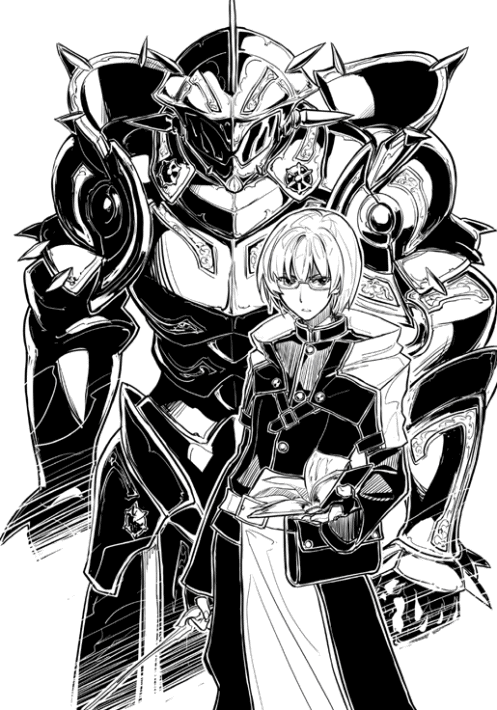
恭介はすらすらと読み上げるように言う。
「なかなか便利なロールだ。こいつは力持ちでな、一人旅の危険から色々と守ってくれる」
勇司は甲冑の兜を戻すと、恭介の近くに寄る。中に何も入っていないのに動く甲冑はやはり不気味だった。
「そんな細かい説明が本に書いてあったの？」
「そうだ。ロールの内容はすべて本に書かれている。勇司だってそうだっただろ？」
「そうだけど、ぼくのロールは恭介ほど条件が細かくないからなぁ」
勇司のロールの発動条件は、本をタクトで擦るだけ。それ以外に条件はないし、効果も通常の〇・五秒間を、五秒間に知覚できるという単純明快なものだった。
「単純なロールほど強力だよ。細かな条件があるロールだと汎用性がないからな」
そう言うと恭介は本を閉じた。すると、甲冑はその場で倒れ、動かなくなってしまった。ミリーが足先で甲冑をつつくが、やはりぴくりともしない。
「さて、話を本題に戻そう」
勇司とミリーが自分の椅子に座ると、恭介が話し始めた。
「正直に言えば、俺はこの世界がどこのもので、なぜ存在しているのか、ほとんど理解できていない。なぜ、俺たちがこの世界に飛ばされてきたのか。どのように、ここに来たのか。それらに対する明確な答えは一つも持っていない」
「ちょっと待ってよ！」
そんな二人の会話の中にミリーが飛び込んできた。
「話がわたしの分からないところに飛んでるんですけど！」
ミリーは恭介をびしっと指さす。
「あなた！ あなたはリヨン帝国出身の商人崩れなんじゃないの？ どうして、勇司みたいにわけの分からないこと言ってるのよ！」
「失礼。リヨン帝国の出身というのは嘘です。とりあえず信じてもらう必要があると思って嘘を言いました」
ほとんど悪びれる様子もなく、恭介はさらりと言ってのけた。そのうえで、真面目な顔ではっきりと告げる。
「俺は勇司と同じで、違う世界から来た人間なんです」
「むぅ......」
ミリーは低く唸り、恭介を刺すように見つめる。
「違う世界っていうのは、ここからずっと遠くの国っていう意味じゃなくて？」
「いえ、そもそも同じ時空に存在しない世界です。この世界をくまなく探しても、俺たちが住んでいた場所はない。そもそも、全く違う世界からここにやってきたんです」
淀みなく喋る恭介の言葉は、逆に怪しくなってしまうほどに流暢だった。勇司も、自分が今まで言いたかったことを、すべて恭介が代弁してくれるので、応援するような気持ちで彼の言葉の続きを待った。
「こんな話をすれば、証拠はあるのか、と訊きたくなると思います。その気持ちは当然です。だけど、俺たちは自分たちが他の世界から来たことを証明することはできません。こんな話をしても、非常識なことを言っているのは自分の方だというのは分かっています。ですので、信じるか信じないかはミリーさんに任せます。頭のおかしい奴らの妄言だと一蹴するのなら、それでも構いません」
「むぅ......」
もう一度唸り、ミリーは勇司と恭介の顔を交互に見回す。そして、ようやく重い口を開いた。
「正直に言うよ。わたしはあなたたちが他の世界から来たなんて、とても信じられない」
「だけど！」
勇司がミリーの発言に噛みつこうとしたところを、恭介が手で制した。
「ごめんね、勇司。だけどね、あなたたちが嘘をついてるとも思えないんだよね。だから、今の気持ちは『すごく興味がある』っていう感じ」
「興味がある、というのは何に対してですか？」
勇司の前にかざした手を下ろし、恭介は低く落ち着いた声で訊く。
「あなたたち二人そのものに、かな。勇司はドジで臆病者だけど、嘘をつくような奴じゃない。それはわたしだって分かってる。だけど、勇司やあなたが言っていることはとてもじゃないけど信じられない。だから、あなたたちが本当は何者で、どこから来たのかっていうのにすごく興味があるんだよ」
「ミリーさんが聡明な方で助かりました」
恭介は笑顔で言った。単純なミリーならば、その言葉で喜ぶと思った勇司だが、実際にはミリーは嬉しそうにしていない。むしろ、警戒するような様子すらある。
「でも、わたし嘘つきは嫌い」
「それは、俺も同じ意見です。先ほどは失礼しました。ここからはすべて本当の話です」
恭介とミリーの間にただならぬ雰囲気が漂う。
「二人とも落ち着けって！ 恭介はここに喧嘩をしに来たわけじゃないだろ？」
「勿論だ」
「わたしだって、別に怒ってるわけじゃないよーだ」
恭介もミリーも口角をあげて笑顔をつくってみせる。だが、二人の笑顔が勇司には逆に怖かった。
「ま、とりあえず勇司たちが別の世界から来たっていうことで話を進めていいよ。できるだけ信じるようにしてみるから」
ミリーが腕組みをして椅子の背に寄りかかった。
「さっきの話の続きだけど、恭介は何かこの世界のことで分かったことは本当に何もないの？」
「ない。あえて言うなら、ここが俺たちの住んでいた世界じゃないことくらいだ」
「そっか......。そうだよね。ぼくだって、なんでこんな事になったのか少しも分からないわけだし」
学校の中で一番優秀だった恭介にも分からないのなら、自分に分かるわけもない。勇司は微かに灯った希望が潰えるのを感じた。
「だけど、恭介に会えただけでも嬉しいよ。今まで、元の世界の人とは誰にも会えなかったんだ」
「そうだな。仲間は必要だ。この『ゲーム』を攻略するのは一人じゃ不可能だからな」
「ゲーム？」
予想していなかった不可解な言葉に、勇司は首を傾げた。
「そう、ゲームだ。俺はこの世界のことを何も理解できていないが、一つの仮説を立てることはできた」
「どういうこと？」
「この世界は、誰かが創りだした『ゲーム』なんだよ」
ミリーが、むぅ、とため息のようにも聞こえる唸り声をあげたが、恭介は話を続ける。
「この世界は俺たちのために都合よく創られている。地球じゃないのに、地球と同じような気候だし、気圧だし、気体配合だし、重力だ」
「地球じゃない、か。だけど、もしかしたらここは地球の一部なんじゃないかな？ どこかの国の実験施設に閉じ込められているとか。そうだよ！ 別の世界に来たって考えるよりも、そっちの方がずっと現実的だ！」
勇司は思わず座ったまま前のめりになってしまう。
「それはあり得ない。この世界にも月は出ているが、この星の月の満ち欠けの周期はぴったり三〇日だ。寸分の狂いもなくな。実際の地球の月の満ち欠けは約二九・五日。一年間観測し続ければ、実際の地球とこの世界との間のずれに気付く。ここは地球じゃない。少なくとも、俺たちが生きていた時代の地球じゃない、と言った方が正確か」
「そんな......。それじゃ、ぼくたちは違う星に来たってこと？」
「そうなる。だけど、地球と同じような環境で、地球人と同じような人間がたくさん住んでいる星なんかたくさんあるもんじゃない。ましてや、ここでは日本語が使われている。だから、俺はここが『俺たちのために創られた世界』なんじゃないか、と考えている」
再びミリーが、むぅ、と唸った。好き勝手に議論が進められていることに、かなり不満を溜めているらしい。
「『ぼくたちのために創られた世界』か......。でも、誰がどうやって？ 何のために？」
「それは分からない。だけど、ここまでお膳立てされた世界が偶然に出来上がったと考えるのは不自然だ。誰かが俺たちのために創ったと考えた方がしっくりくる。それってロールプレイングゲームみたいだろ？」
誰かのために新しい世界を創る。確かにそれは、人々を楽しませるためにゲームの世界をプログラムする行為に似ているのかもしれない。
「俺はこの世界を創った奴を『ゲームマスター』と呼んでいる。ゲームマスターが組織なのか、個人なのか、それとも人知を超えた存在なのかは分からない。だけど、その正体を掴むために旅を続けているんだ」
「そうだったのか......。ん？ でも、それならどうしてぼくのところに来たの？ まさか、ぼくがゲームマスターだと思った？」
勇司は冗談めかして言うが、恭介の目は笑っていなかった。
「そういうことだ」
「え？」
顔の筋肉が強張り、勇司の表情が凍りついた。
「だけど、今は違うことが分かった。勇司はこの世界を創り、俺たちをここに閉じ込めたゲームマスターじゃない」
「そっか。とりあえず、疑いが晴れたのならよかったよ。それじゃ、恭介はこの後もゲームマスターを探す旅を続けるのか？」
「勿論だ」
「でも......もしかしたら、そのゲームマスターはこの世界にいないかもしれないんじゃないの？ 例えば、元の世界の安全な場所でこっちを監視してるとか」
恭介は眼鏡のつるを持ち、レンズの位置を直した。
「その可能性は考えられる。だけど、今の俺にできることはこの世界にいることを信じて探し回ることだけだ」
それはもっともな意見だった。この世界から出られない以上は、この世界の中でできる限りのことをするしかない。
「あと、参考までに聞きたいんだけど......どうして、ぼくをゲームマスターだと思ったんだ？」
「それは、勇司がキャストだからだ」
キャストだから？ そう言われても、勇司にはそれがどんな意味を持つのか分からなかった。
「うー！ 本当に好き勝手言っちゃってくれて、もう！」
混乱する勇司の横で、ミリーがついに立ち上がった。
「この世界がゲーム？ ゲームってなによ、それ。よく分かんないけど、あなたたちが言っているのって、教会の説法みたいなことだよね？ この世界は二人の神様がお創りになられたって話でしょ」
「まぁ、そうですね」
恭介が冷静に答える。
「それで、恭介君はその神様を探してるってこと？」
「この世界の基準で考えれば、そういうことになります」
「それなら、勇司のところなんかじゃなくて、教会に行けば？ クレルモンにも教会はあるし」
「俺が探しているのは、神と同等の力を持つ存在ですよ。勇司は神と同じように、人が扱うには大きすぎる力を保有している。ロールという能力です」
「それって、つまり......」
ミリーは目を細める。
「そう。俺はこの世界を創ったのは、ロールの力だと考えています。だから、ロールを使えるキャストたちを訪ねて歩いているんです」
ロールの力でこの世界が創られた。
それはにわかには信じられない話だった。相変わらず勇司の頭の中のごちゃごちゃは整理されていない。
「正直に言えば、ぼくには信じられないよ」
「そうだろうな。俺だってそうだ。だけど、この世界が存在して、ここに俺たちが飛ばされてきたことだって十分に『信じられないこと』だ。俺が知る限り、そんな『信じられないこと』を実現できるのはロールしかない」
言っていることは滅茶苦茶のようだが、ちゃんと筋は通っている。その話は受け入れがたいだけで、ちゃんと考えれば勇司にも理解できた。
「実はクレルモンに他にもキャストがいるという話を聞いているんだ。俺は明日にでもそのキャストに会いに行く」
恭介の言葉に、勇司は驚く。
「クレルモンにキャストが？ ぼくはそんな話を聞いたことないよ。クレルモンには何度も行ったことがあるのに」
「そのキャストは隠れてロールを使っているらしくて、街では噂にならないように気をつけているようなんだ。この辺りだと、キャストは異端児扱いされているんだろ？」
それは勇司自身が身にしみて分かっていることだった。
肉屋のジョゼフは勇司と距離を置いている。それは、勇司がキャストだからだった。ロールという特殊な力のせいで、人々から恐れられ、忌避されているのだ。
「特にクレルモンにいるそのキャストはかなりの秘密主義らしくて、ほとんど屋外に出ることもしないそうだ。勇司がここにいるっていう情報の十倍近い情報料を払って、ようやく居所を突き止めた」
「情報料って、金を払ってキャストを探してたのか......」
「キャストがいるだけで、周辺では噂になるものだからな。行商をしている商人たちに金を払ってあちこちの都市の情報を買っているんだよ」
そうやって恭介は一年の間に多くのキャストと会ってきた。そして、そのキャストたちはみんなクラスメイトだった。その行動力に、勇司は感心するばかりだった。
「クレルモンにキャストがいる......。キャストっていうことは、ぼくたちのクラスメイトの可能性が高いんだよね」
自分が何度も行ったことのある都市にクラスメイトがいるかもしれない。勇司は不思議な気分だった。
「おい！」
猛々しい声とともに、ドアが乱暴にノックされる。突然大きな音がしたことで、勇司は飛び上がり、恭介は目を細めた。
「はーい」
ミリーが玄関のドアの方へと向かう。それと同時に恭介が立ち上がった。
「どうしたんだ？」
明らかに様子のおかしい恭介に、勇司が尋ねる。
「すまない。もしかしたら、お前たちに迷惑をかけたかもしれない」
「は？ どういうこと？」
二人の会話が終わる前に、玄関のドアが開け放たれた。それと同時に、ミリーを突き飛ばして屈強な三人の男たちが部屋になだれ込んできた。三人とも手には剣を持ち、体には鎖帷子を巻いている。
「いたぞ！」
そう叫ぶ先頭の男の視線の先には恭介がいた。
「――鉄と血の宰相」
「――俊足の狩人！」
恭介が本を呼び出し、それからほんの僅かに遅れて勇司も本を呼び出した。
「相手はキャストだ！ 気をつけろ！」
右側の男が言う。それに残りの二人が、おう、と短く答え、剣を前に突き出したまま一気に距離を詰めてきた。
まずは事情を訊かなくちゃ！
そう考えた勇司は、視界の端で恭介が躊躇いなくロールを発動させるのを見た。
「ちょっと！ この人たちを......」
どうするつもりなんだ？
そう勇司が訊くよりも早く、寝そべっていた甲冑が立ち上がった。甲冑の巨躯は、勇司たちと闖入者との間に立ちふさがり、丸太のような腕で一人の男を叩きつぶした。
「ひっ」
声にならないような音が、勇司の喉から漏れる。
血の赤が目に痛い。
勇司は一人の男が頭をつぶされて、その場に倒れたのを見た。
その隣の恭介は、目を背けるどころか瞬きもせずに男たちの方を見ている。彼の本は勇司とは違い、ロールを発動した後でも消えていない。どうやら、本が出ている間はずっと甲冑を操作できるようだった。
「ひるむな！」
男たちは甲冑の脇を抜けようと走りだす。しかし、左を抜けようとした男は人間には不可能なほど俊敏に動く甲冑に捕まり、そのまま床へと叩きつけられた。
「動かないで」
そしてもう一人の男の喉元には、背後から飛びついたミリーの短剣が突きつけられていた。
本当に僅かな時間の間に、事件は終わった。
恭介はロールの能力で暴漢二人を無力化し、ミリーは一人を捕まえた。
本を出しただけで、恭介のアドバイス通りにその本を掴むことすら忘れていた勇司は、ただただ一連の流れを傍観していただけだった。
「あんた、どこの誰？」
ミリーがいつもは出さないような低い声で、捕まえた男に問う。
「オレはリヨン帝国の命令を受けている者だ。オレたちを殺すのは、皇帝陛下に対する反逆だぞ」
しわがれた声で男は答えた。既に額には脂汗が浮かんでいる。
「リヨン帝国がどうしてうちを襲撃するのよ。正直に答えないと......」
ミリーの短剣が男の喉の皮を裂き、一筋の血が流れた。
「本当だ！ 皇帝陛下から直接命令を受けているわけじゃないが、陛下の勅書を持った女から言われたんだ。クレルモンとその周辺のキャストを捕まえろと！」
「キャストを捕まえる？」
思わず勇司が口を開いた。
「どうして？」
「それは陛下がお考えになることだ。もう一度言うが、オレを殺すことはリヨン帝国への反逆となる！」
男は興奮して言うが、背後に立つミリーは冷静だった。
「あのね。ここはリヨン帝国領じゃなくて、自治都市クレルモンの領域内なの。あんたがここでどれだけえばっても、大好きな皇帝陛下は守ってくれないんだから」
「ちょ、ちょっと待て！」
殺されると思ったのか、男は暴れようとしたが、ミリーは無駄のない動きで男の首に腕を回し、締め上げる。
「ぐうぅ」
口から泡をふきだし、あっという間に男は気絶してしまった。
「慣れてるね」
恭介が言う。彼は口元こそ微笑んでいるが、目は少しも笑っていなかった。
「か弱い女の子がずっと一人で生きるためには、色々と覚えておかなくちゃいけないことがあるんだから」
恭介と同じように、ミリーはにっこりと作り物の笑いを浮かべた。
「か弱い......」
「何よ、勇司！ 何か文句あるの？」
「ないよ！ ないない！ それよりも、この人たちを早く医者に連れて行かないと」
勇司は床に倒れる血だらけの男たちと、意識を失っている男を見比べて頭を抱える。
「その必要はないよ」
ミリーがきっぱりと言い切った。
「武器を持ってうちに来たってことは、いざとなればわたしたちを殺すつもりだったんだよ。そういう奴は、逆に自分が殺されるかもしれないっていう覚悟はしてるってことだもん」
「そんな！ この人たちは人間なんだよ！ ぼくたちが狩りで殺している動物とは違うんだ！」
男たちの血が床に広がり、勇司の靴を湿らせる。それに気付き、勇司はその赤黒い液体から慌てて距離をとった。しかし、やはり恭介は少しも動じていない。
「こいつらの身柄は村の自警騎士団に渡すべきだ。治療するかどうかは、騎士団が判断する。その前に手遅れになったとしたら、それはこいつらの運命だよ」
「恭介まで！」
恭介のせいで、この人たちは大怪我をしたんだぞ！ そう言いかけて、勇司はなんとかその言葉を飲み込んだ。
もしも、恭介があそこでロールを発動させていなければ、勇司が男たちの剣の錆になっていたかもしれないのだ。
だけど、このまま放っておけば死んでしまうだろう。見ず知らずのうえに、自分たちにいきなり刃を向けた人間だ。助ける筋合いはないのかもしれないが、見捨てることには強い戸惑いがあった。
血の気が引き、体温の下がった皮膚に、ふわりとした優しい温もりが伝わる。勇司の右手には、ミリーの左手が重ねられていた。
「勇司が優しいのは分かるけど、わたしたちはこいつらに殺されてたかもしれないんだよ？」
知らず知らずのうちに、勇司の体は細かく震えていた。
この一年の生活で多くの血を見てきた勇司だったが、人間のこんな姿を見るのは初めてだった。その動揺が、最も分かりやすい形で勇司の体に現れていたのだ。
「こいつらは俺を追ってここまで来たんだろう」
恭介は倒れた男たちの持ち物を調べている。眼鏡の奥の眼光は鋭く、ベテラン刑事のように、様々な物を取り出して観察した。
「こいつらは何者なの？」
勇司は渇いた喉を震わせ尋ねる。
「恐らく、リヨン帝国からクレルモンにやってきた流れ人だ。浮浪者でもやっていたところを、この辺りの土地勘があるっていうことで雇われたんだろうな」
「雇われた？ 誰に？」
「こいつらの言うことを信じるならリヨン帝国の軍人だ」
「何のために？ 恭介は誰かに追われているの？」
次から次へと湧いてくる疑問を口にする勇司だが、恭介はそれには答えない。
「迷惑をかけて悪かった。俺はここを出る。こいつらがキャストを捕まえる目的で雇われていたのなら、クレルモンの街にいるキャストが心配だ」
恭介は手早く荷物をまとめ、その荷物を巨人の甲冑が背負った。
「ちょっと待ってよ！」
家から出ていこうとする恭介を勇司は呼びとめる。足を止めた恭介は、僅かな間を置いてから振り返った。
「なんだ？」
「ぼくも一緒に行く」
その言葉に、恭介は首を横に振る。
「いや、危険だ」
「危険なのは分かっているよ。だけど、クラスメイトがこいつらみたいなのに捕まるかもしれないんだろ？」
手に武器を持った男たちにいきなり拉致される。
クレルモンにいるキャストがどんな人物かは分からないが、それを喜ぶような人物はいないだろう。
「こいつらの親玉は、俺を追ってリヨン帝国からこっちに来ている。これは俺の責任だ」
「今は誰の責任とか関係ないだろ！ クラスメイトが捕まるかもしれないなら、ぼくも助けに行くよ！ それに恭介が追われているんだったら、恭介だって危ないじゃないか！」
「俺自身の危険は俺が何とかできる」
「ダメだ！ 恭介を助けたいんだ！ 恭介だけじゃない。他のクラスメイトも、みんな一緒に無事に元の世界に戻りたいんだよ！」
同じ教室で学んだ、様々なクラスメイトの顔がフラッシュバックする。彼らを守るための力が自分にはあるのではないか？
初めて手にした自分には過ぎたる力。
憧れていたヒーロー。
身を挺して仲間を助ける正義の味方。
雑多な思考が頭を駆け巡り、勇司の口からは強い意志が発せられた。
「ぼくたちは親友だろ！」
恭介は何かを言い返そうとして開いた唇を震わせ、ゆっくりと閉じた。
「そうか......。ありがとう」
恭介は呟くように言った。
「反対しても、ぼくはついていくよ」
「好きにすればいい」
恭介は頷き、右手を差し出した。勇司がその手を握り返し、二人は久しぶりの握手を交わした。
「あの、わたしには何が起こっているのかよく分からないんだけど」
そんな二人の脇に立つのはミリー。彼女は不満そうに、二人の少年の顔を交互に見ている。
「あなたたち、これからクレルモンに行くつもり？ クレルモンにいるキャストが知り合いだから助けに行くってこと？」
「そうだ。ミリー、ちょっと出かけてくるよ」
勇司は深々と頭を下げる。
「今まで本当にありがとう。必ず生きて帰ってくるから」
「てい」
ミリーが勇司の頭にチョップする。
「いて！ 何するんだよ！」
「それならわたしも行く」
「は？」
頭を押さえる勇司と、恭介が同時に声を出した。
「勇司をうちに住まわせてあげるって決めた時の『契約』、覚えてる？」
ミリーは腰に手を当てて、小さな体を反らせて最大限にえばってみせていた。
「えっと、金貨千枚を稼ぐこと。炊事洗濯をやること。ミリーの寝室には入らないこと、だっけ？」
勇司は指を折りながら条件を思い出す。
「そう。勇司はまだ金貨を半分も稼いでないじゃん。それなのに、勝手にここを出て行かれちゃ困るんだけど」
「いや、ちゃんとここには戻ってくるから......」
「信じてないわけじゃないよ。だけど、勇司がこのまま逃げだす可能性はゼロじゃない。だから、わたしがついていくの」
そう言いながら、ミリーも荷造りをし始めた。
「本気なの？ 危険な目に遭うかもしれないんだよ！」
「大丈夫だって。わたしは勇司よりもずっと危険な目に遭ってきてるから。それに、夜の街道を敵が見張っているかもしれない。わたしだったら、裏道を案内できるんだけどな」
にやりと笑うミリーに、勇司は何も言い返せなかった。
「本当の理由は......と、訊くのはやめておこうか」
恭介がミリーを横目で見ながらミリーにしか聞こえないような小さな声で言う。
「確かに、あなたの方が勇司よりも活躍してもらえそうだ」
「わたし、恭介君のことあんまり信用してないから」
二人の会話を聞いていない勇司は、急いで自分の荷物をまとめだした。
三人の侵入者の身柄を村の自警騎士団に引き渡した後、深夜に出発した勇司たち一行は、街道沿いの裏道を進み、夜明け前には目的地に到着した。
高さ十五メートルほどの白い城壁にぐるりと街全体が囲まれ、重厚な鉄の正門は外敵の侵入を堅牢に拒む。自治都市クレルモンはまさに城塞都市であった。
レンガで舗装された街道はそのままクレルモンの正門に直通しており、裏道から街道に合流した勇司たちは自動的に正門の前にたどり着いた。
「ここがクレルモンか。これは立派な街だね」
平原と農場に囲まれた都市の城壁を見ながら、恭介が感心したように言う。
「クレルモンは豪商たちの合議制で政治が行われている自治都市なの。ここは街道の十字路だから、ガイアのあちこちから商人たちが集まってきて仲買や卸しをしてる。クレルモンの市場はいつでも大賑わいなんだから」
ミリーはまるで自分のことを自慢するように言う。
「隣接する他の自治都市はリヨン帝国に組み込まれているところもあるけど、ここは自治を守れてるの。これって結構すごいことなんだよ」
「潤沢な資金を使って傭兵を雇っているし、教会にもたくさんの寄付をしているから、リヨン帝国も手が出せないということですね」
ミリーの言葉のあとを恭介が続ける。その説明に勇司は目を丸くした。
「詳しいんだな、この世界のこと」
「一年間旅を続ければ、色々なことが分かってくるんだよ」
「そうなのか......」
一年間、森で狩りばかりをしていた勇司は、自分の時間の使い方を思い返し、恥ずかしさを覚えた。
「さっそく、中に入りたいところだけど、そいつはちょっと厳しいかもね」
そういうミリーの視線の先には、恭介の荷物を背負う甲冑がいた。
「ここは商人が支配する商業の街。甲冑の大男が闊歩するのは目立ち過ぎると思うけど」
「そうだろうね。リヨン帝国の軍人に見つかるのはまずい。不本意だけど、こいつは森の方に隠れさせておくよ」
恭介のその言葉に大人しく従い、甲冑は荷物を下ろすと一人で街道のはずれの森の方へと歩いていった。
「大丈夫か？ 恭介が本を閉じたら、普通の甲冑に戻るんだろ？ 盗まれたりしないか？」
去りゆく甲冑の淋しげな背中を見ながら勇司は心配になった。
「あんな大きな甲冑を拾って帰ろうとする奴はいないだろ。まぁ、もしも盗まれてしまったら運がなかったと諦めるさ。それよりも、今はクレルモンに入ることの方が重要だ」
「相変わらず、はっきりした奴だな」
昔から恭介はそういう少年だった。二つの物事を比べて、どちらが重要かを判断し、重要でないと思ったものは未練なく切り捨てる。残酷なまでに合理的な判断が素早くできる恭介に、勇司は昔から憧れていた。
甲冑の姿が見えなくなったのを確認し、ミリーが城門の横にある小さな戸をノックする。すると、小窓が開き、ゴマ塩頭の初老の男が顔を出した。
「何だ？ 今はまだ開門前だ」
「商談をしに来たんだけど」
ミリーが言うと、門番の男はうすら笑いを浮かべる。
「誰と？」
「大通りのフルクスさん」
「分かった。入れ」
小さな戸が開けられ、勇司たちは難なく招き入れられた。
「ありがと」
そう言って、ミリーは門番に銅貨を三枚渡した。
「フルクスさんって誰？」
勇司は、聞き慣れない名前をミリーに尋ねると、ミリーは首を傾げた。
「さぁ。知らない」
「え？ 嘘をついたのか？」
「嘘っていうか、合言葉みたいなもんだからね、あれ。ああ言ってお金を渡すと、開城前でも入れてくれるんだよね」
「賄賂かよ......」
そういった不正行為に免疫のない勇司からすれば、ミリーが平然と行っていたことは信じがたいものだったが、恭介は別段気にする素振りはない。それどころか、賄賂の銅貨は俺が払うよ、とミリーに銅貨を無理やり押し付けた。
日の出前の街の建物たちはまだ夜に染まっており、薄いグレーの衣をまとっていた。何人かの小間使いたちが井戸で水を汲んだりしている以外に外に出ている人間はおらず、朝日が街に色を与えるのを待っているようだった。
正門から石畳の大通りを進み、街の中心部を目指す。クレルモンまでの街道はミリーが先頭を歩いていたが、街の中ではキャストの居場所を知る恭介が残り二人を引き連れて歩いていた。
小声で話すことすら憚られるほど静かな街を進み、一行は問屋街を抜けた場所にある塩屋の前に到着した。
「いつ見ても変な感じだよなぁ」
塩屋、と漢字で書かれた看板を見て、勇司は呟く。
「街並みは中世ヨーロッパって感じなのに、看板は漢字だからなぁ」
「そうだな。それは俺も思うよ」
恭介が軽く笑っている。
「それがこの世界の違和感の一つだ」
自分たちのために創られた世界だからこその違和感。未だにその話をよく信じられない勇司はどうリアクションをしていいものか分からない。
「この塩屋にキャストがいる」
恭介の言葉に勇司の背筋は自然と真っ直ぐになった。
「今からお邪魔するつもり？」
ミリーは心配そうにしているが、恭介は強い言葉で返す。
「この街でリヨン帝国の軍人がキャストを探している。迷惑だとは思うけど、少しでも早くそれを知らせたい」
その言葉に勇司とミリーは頷いた。恭介はドアを少し強めにノックする。家主が寝ていれば、気付いてもらうまで時間がかかるかもしれない、と心配した勇司だったが、すぐに中からバタバタと物音がした。
「わきゃっ！」
そして、悲鳴もした。
数秒経ってから、ドアの鍵を開ける音がして、白い簡素なワンピースを着た少女が中から出てきた。
「あのぉ、まだお店は開いてないんですけど......」
少女は右手で眠そうな目を擦り、左手で左足の脛をさすりながら言う。どうやら、先ほどの悲鳴は左足をどこかにぶつけた時のものらしかった。
肩ほどの長さの髪はセットしていないためか、好き勝手に飛び跳ねてひねくれており、寝起きなのがすぐ分かる少女の表情は呆けている。美人と言うよりは、可愛らしいといった方がしっくりくる、小動物のような顔立ちの女の子だ。
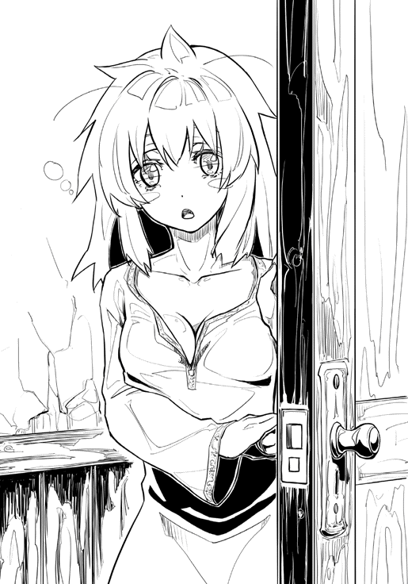
「橘さん！」
出てきた少女の顔を見て、勇司は夜明け前だということを忘れて大声を出してしまった。そんな彼の声で完全に目が覚めたのか、塩屋の少女――橘楓は目を限界まで見開いて、勇司と恭介の顔を見比べた。
「え......えぇ！」
かなり長い思考時間の末、楓はようやく目の前の少年たちが自分のクラスメイトだということに気付いた。
「西島君と綾部君！ どうして？ 西島君たちも、こっちの世界に来ちゃったんですか？」
そう言いながら、楓の瞳にどんどん涙が溜まっていき、ついに泣きだした。
「よがっだぁ......わだし、もうずっとひとりだと思っでぇ......」
溢れだした涙を見て、勇司は思わずもらい泣きしそうになるのをこらえる。見ず知らずの世界で生きてきた辛さは、勇司だってよく分かっている。
「ここで話していると目立つから、もしよければ家の中に入れてもらいたいんだけど」
感動の再会に感極まっている勇司と楓とは違い、やはり恭介は冷静だった。
「あ、はい！ どうぞ、入ってください」
三人は家の中に案内され、丸い木のテーブルを囲むように椅子に座った。楓は泣きながら全員分のハーブティーを用意し、泣きながら茶菓子の用意まで始めた。ぼさぼさだった髪は二つ結びでまとめられ、身なりも街娘の普段着になっていた。
「あの子、情緒不安定なの？」
あまりにも泣きっぱなしの楓を見て、ミリーが小声で勇司に尋ねる。
「いや、元々あんまり目立つタイプの子じゃなかったしな......。正直、どういう子なのかよく分からないんだよなぁ」
勇司は高校の教室の中を思い出したが、楓と一緒に何かをした記憶は出てこない。いつも教室の隅で本を読んでいたり、同じように大人しいタイプの友人と話している、というぼんやりとしたイメージがふわふわと浮かんだ。
「まぁ、久しぶりに仲間と会えて嬉しいんじゃないか？」
「そっか......仲間ね......」
ミリーは苦々しい顔をするが、すぐにいつもの悪戯っぽい表情に戻った。
「勇司に会えて泣いちゃうくらい喜んだってことは、勇司のことが好きなんじゃないの？」
「な、何を言ってんだよ！ そういうことじゃないだろ！」
「どうかしましたか？」
クッキーのようなお菓子を持って、楓が勇司たちのところに帰ってきた。目はまだ真っ赤だが、涙は止まっているようだった。
「ありがとう。こんな朝早くから、お茶をいただけるとは思っていなかったよ」
恭介が爽やかに笑う。
「あ！ もしかして、こんな朝からお茶を出すって変でしたか？ あぁ......わたし、なんて事を......」
楓は慌ててハーブティーを片付けようとしたが、すぐに恭介がフォローする。
「そういう意味じゃない。純粋にお礼が言いたいんだ。ありがとう」
さらりとそんな台詞が出てくる恭介の横で、勇司は先ほどのミリーの台詞の動揺をまだ抑え切れておらず、顔を真っ赤にしていた。
「いえいえ。こんなものしかお出しできなくて。店長が起きてれば、他のものをお出ししていいか訊けるんですけど、まだ寝ていて......」
そう言いながら、楓も席に着いた。
「店長？ この塩屋の？」
「はい。店長は女手一つでこのお店を切り盛りしている、すっごい人です。わたしみたいな、身寄りのない高校生も雇ってくれる優しい人なんですよ」
楓はそう言いながら、ようやく笑顔を見せた。
「さて、まずはお互いに知っていることをすべて話すことから始めたい」
ハーブティーには口をつけず、恭介が切り出した。
「知ってること......」
楓は困った顔でひとりごちる。
「わたしは......ごめんなさい。ほとんど、この世界のことは分かりません」
申し訳なさそうに楓が俯いた。
「大丈夫だよ。ぼくも恭介に会うまで、この世界のことは何も知らなかったんだから」
勇司が言うと、楓は俯いたまま膝に置いた拳をきゅっと固く握った。
「あ、ありがとうございます......」
「別に何でもいいんだ。今の俺たちに必要なのは、少しでも多くの情報を共有することだから」
「そうですか。えっと、じゃあ、例えばこっちの世界に来た時のこととかでもいいですか？」
「なんでも話して」
恭介に言われ、楓は目を瞑ってゆっくりと話し始めた。
「えっと......確か、わたしは苺ちゃんと一緒にバスを降りて、バスの運転手さんが荷物を下ろしてくれるのを待っていて......雷が光ったと思ったら、こっちの世界にいたんだと思います」
「やっぱりそうなんだ。ぼくも同じだよ」
勇司に降りかかった最大級の不幸は、他のクラスメイトたちにも平等に襲いかかっていたらしかった。
「そうなんですね。それじゃあ、わたしたち以外にもこっちの世界に来ちゃった人がいるかもしれないってことですよね」
「そうなんだよ。もしかしたら、クラスメイトが全員来てるかもしれない」
勇司が言うと、楓がぱっと目を見開き、小さく口を開けた。
「あ」
何度か瞬きをしてから、楓は言う。
「そういえば、錦織さんにそっくりの人は見たことがあります」
「え！」
勇司はテーブルに手をつき、楓にぐっと寄る。
「いつ？ どこで？」
錦織紫穂。その幼馴染の名前は勇司にとって、大きな意味を持っていた。
「半年くらい前に、クレルモンにレーゲンスブルグ自由都市同盟の神聖騎士団が騎士団員募集に来たんです。その時、店長が風邪で寝込んでいたから、わたしがお買いものに出ていて、広場に集まっている騎士団の人たちに偶然出くわしたんですけど、その騎士さんたちの中に錦織さんそっくりの人がいたんです」
「話しかけた？」
恭介は穏やかな口調で、しかし根底には即座に返答を求めるような強い意志を持った低い声で訊く。
「いえ、周りには他の騎士さんたちがいっぱいいたし、錦織さんが騎士団にいるなんておかしいし、そもそもこっちの世界にいるわけないと思ったから、きっとわたしの見間違いだろうと思って......」
「そうか」
恭介は自分の顎を撫でながら、残念そうに呟く。
「他には、会った人はいる？」
「いえ、いません。クレルモンの近くの村に、腕のいい狩人がいるっていう話は聞いたことがありますけど、まさかそれが西島君とは思いませんでしたし」
楓はちらちらと勇司を横目で見る。
「それじゃ、次の質問だ。橘さんもロールは使えるね？ もしよければ、どんな能力なのか教えてくれないか？」
恭介の視線が厳しくなる。
「え！ どうして、わたしがロールが使えるのを知ってるんですか？」
楓が体をびくっと震わせて驚く。一方の恭介は彼女のリアクションに眉ひとつ動かさない。
「こっちの世界に来た人間は、みんなロールが使えるキャストになっているようなんだ。だから、俺はキャストの情報を集めることでクラスメイトの皆を探している」
「そうだったんですか......。この街だと、ロールを使えるだけで変な目で見られるから秘密にしていたのに」
「そのお陰で橘さんの情報を手に入れるのは苦労したよ」
恭介は苦笑いだ。
「わたしのロールは――塩害の女王」
楓のコールに合わせて、本とタクトが彼女の前に現れる。楓はおっとりした動きでその本をとると、自動的に開いたページの文字を読み始める。
「えっと......以下の条件の場所に、最大二トンまでの塩化ナトリウムを発生させることができる。条件 キャストが目視できる場所。条件
キャストが目視できる場所。条件 発生させる塩化ナトリウムと同等の体積の気体がある場所。条件
発生させる塩化ナトリウムと同等の体積の気体がある場所。条件 キャストの重心から半径五百メートル内......だそうです」
キャストの重心から半径五百メートル内......だそうです」
「塩化ナトリウムってことは、塩を出すことができるロールか」
自分の席を立ち、勇司が楓の本を覗き込む。
「そんな能力もあるんだね」
「あ、は、はい」
勇司の接近に、楓はあわあわと体を揺らしたが、勇司自身は彼女のそんな反応に気付いていない。
「かなり強力な能力だな」
恭介は椅子に寄りかかり、腕を組んだ。
「そうか？ これなら、恭介の甲冑巨人の方が強いだろ。ん？ でも、塩で相手を押しつぶすことができるか」
「お、押しつぶす！ そんな危ないことしません！」
勇司の発言に驚いたのか、楓は慌てて本を閉じた。本は光の粉を散らして、タクトとともに消滅する。
「半径五百メートル内の相手を、最大二トンの塩で押しつぶすことができるのは強力だけど、橘さんのロールの本当の使い方はそういうことじゃないな」
「そうです。わたしのロールの正しい使い方は、お塩屋さんですから」
「お塩屋さんか。確かに一番似合う仕事だよね」
ミリーがくすっと笑う。
「はい。わたし、このお塩屋さんでお塩をつくる仕事をさせてもらっています。あんまりたくさんつくり過ぎるとお塩の値段が下がっちゃうから、店長が決めた量をつくるようにしているんです」
「なるほど。賢い店長だ」
そう言った後で恭介は低く唸る。
「でも、俺が探しているロールではないな」
「綾部君はロールを探しているんですか？」
「そうなんだ」
そこから、恭介は勇司にしたのと同じ話をし始めた。
この世界がゲームのように、ゲームマスターによって創られた世界だということ。恭介はこの世界を創りだしたのはロールの力だと考えているということ。そして、ゲームマスターを探すためにキャストを探してまわっていること。
「ちょ、ちょっと待ってください」
一気にたくさんの情報を与えられた楓は、胸に手を置いて深呼吸をした。
「つまり、わたしたちのクラスメイトの中に、この世界を創ったロールを持つキャストがいるってことですか？」
「いや、俺たちのクラスメイトとは限らない」
「でも、綾部君が今まで会ってきたキャストはみんなクラスメイトだったんですよね？ それなら、やっぱりこの世界を創ったロールだって、クラスの誰かのものなんじゃ......」
「その可能性は捨てきれない。そうなると、修学旅行の時に誰かがロールを発動させたことになる」
そんな会話に、勇司の心臓が跳ねる。
クラスメイトの誰かが、元の世界でロールを使った？ そんなことがあり得るのか？
「それじゃあ、元の世界にもロールっていう、不思議な力が存在していたってことですか？ そんなの常識的に考えてあり得ない話だと思います」
「それじゃあ、この世界は『常識的に考えてあり得る』のか？」
恭介が肩をすくめる。
「こっちの世界でロールは存在しているが、元の世界では絶対にロールなんて存在しないと言いきることはできない。一年前、俺たちの常識は死んだ。常識的に考える、という言葉の意味は、昔と今では大きく違うんだ」
一年前。それがすべての始まりだった。
勇司は目を瞑り、修学旅行の時のことを思い出す。自分たちの常識が、日常が、普通がすべて失われたあの日のあの瞬間。
勇司は自分が見た映像を、脳内でできるだけクリアに再生する。
「......いた」
脳の奥底から、当時の映像がサルベージされる。
「いた？ 何がだ？」
それは、自分の常識が抑えつけていたあり得ない光景。
だが、確かに記憶の中にある。
「キャストだ」
勇司はあの時、確かに見ていた。
「バスの外にいたんだ。制服を着ていた......うちの高校の制服......それに女子だった」
とぎれとぎれの記憶の断片をつなぎ合わせ、勇司は言う。すると、恭介の目つきが変わった。
「ロールを使っている人間を見たのか！ 顔は分かったか？」
「いや、誰かまでは分からなかったよ。だけど、確かにうちの制服を着た女子だった。それが、本みたいなのを持っていたと思う」
「そうか......。あの時、ホテルに最初に到着したのはうちのクラスだった。そうなると、その女子はうちのクラスの可能性が高い」
すると、楓が短い悲鳴をあげた。その声に勇司まで驚いてしまう。
「どうしたんだよ、いきなり」
「だって......。つまり、わたしたちのクラスメイトの中に『犯人』がいるっていうことじゃないですか......」
犯人。
勇司はその言葉の方が衝撃的だった。だが、すぐにその表現がふさわしいということに気付く。
これはゲームじゃない。現実だ。ゲームマスターなんていう呼び方では生ぬるい。これは誘拐や監禁という犯罪なのだ。これを行った人間がクラスにいるのならば、そいつはまさに〝犯罪者〟であり、この事件の〝犯人〟なのだ。
すべての話を聞き終えて、ミリーが大きくため息をついた。
「相変わらず、わたしの生まれ育った世界のことを根本から否定してくれちゃってますけど。わたしはずっとこの世界で生きているんですからね！」
この世界の住人であるミリーからすれば、今の話はすべて不快なものだろう。
「あのぉ」
楓が恐る恐る挙手する。
「綾部君が今まで会ってきたクラスメイトの人たちって、誰なんですか？ あと、今はどこにいるんですか？」
「あ、それはぼくも聞きたい。小屋では聞きそびれてたし」
勇司も楓に同調する。
「それは話しておこう。ただし、それは二人が俺の仲間になってからだ」
仲間になってから？
その言葉の意味を理解するのに、勇司は数秒を要した。そして、言葉の意味を理解した後で、恭介の真意を理解しようとしたが、そちらの方はどれだけ時間をかけても分からなかった。
「どういうことだよ。ぼくたちはもう仲間だろ」
勇司は無理に笑おうとしたが、ひきつって奇妙な表情になった。
「元の世界では友人だった。だけど、こっちの世界では仲間じゃない」
何の躊躇いもなく、恭介ははっきりと言う。
「俺がこっちに来て出会った七人のキャストたちは、全員俺の仲間になってくれた。だから、お互いのロールの情報も共有しているし、どこに誰がいるかも知っている。勇司たちも俺の仲間になってくれるなら、彼らの情報を教えるよ」
「何を言ってるんだよ、仲間になるに決まってるだろ。な？」
勇司が楓に同意を求めると、楓もすぐに頷いた。ミリーは何か言おうとしたが、口は開かずにそのまま黙っているだけだった。
「そうか。ありがとう。それじゃ、話すよ......」
恭介の口から発せられた音声は、天を劈くような銃声にかき消された。
事件は一瞬だった。
窓ガラスが砕かれ、四人が囲んでいたテーブルが木っ端みじんに吹き飛んだ。
勇司は椅子に座ったまま、動くことができずにその場に倒れ込み、楓も同じように床にひれ伏した。
「伏せろ！ ――鉄と血の宰相！」
恭介が叫ぶ。そんな彼を見て、ようやく勇司は自分もロールを発動させなければいけない、ということに気付く。
ミリーも恭介と同じように椅子から離れ、既に部屋の隅で身を低く構えている。ポンチョの中に短剣を忍ばせ、近づいた敵の喉を不意打ちで切り裂くことができる体勢だった。
「――俊足の狩人」
勇司も本を出し、タクトを握る。そして、恭介からのアドバイスを思い出し、左腕でがっちりと本を抱えた。
「な、何が起こったの？」
現状の把握ができていない楓は、床に伏せたまま怖くて顔すらあげられないような状況だった。
破壊された窓から朝日が差し込んでくる。その光をバックに、黒い禍々しいシルエットが浮かび上がった。
「あらあら。キャストが二人も。これは幸運ね」
異様だった。
黒いミニスカートに、胸に双頭の狼が刺繍された黒いノースリーブの服装は、こちらの世界のものではなく、勇司たちが元々いた世界のデザインだ。長い黒髪をまとめているリボンは黒いレース付きで、やはりこちらの世界では珍しいものだった。しかし、彼女の異様さは服装や服飾品が放っているのではない。
右手にはタクトを握り、その手元には開いたままの本が宙を浮いている。
僅かに見える本のタイトルは〝魔弾の射手〟。そのタイトルと装丁から、その本がロールを発動させるための道具であることはすぐに分かった。
彼女の左腕の肘の辺りからは合計で六丁のマスケット銃が生えていた。すべての銃口から、先ほどの攻撃を行ったのが自分であることを主張するように煙が出ている。
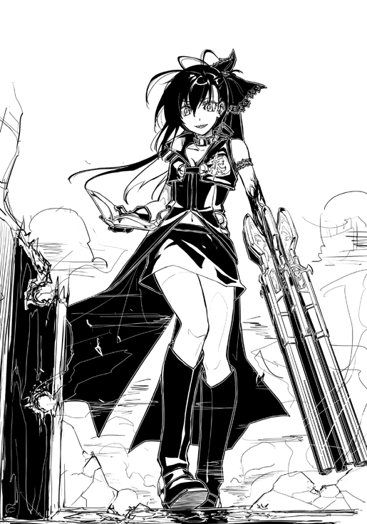
「抵抗しないで」
窓枠に足をかけ、少女が室内に入ってくる。その途中で、左腕から生えていた銃たちがボロボロと床に落ち、バウンドと同時に消え去った。
「久しぶりに出会って、最初の挨拶がこれかよ」
そう話す恭介は、本から手を離さない。それは勇司も同じだった。恭介は彫刻のように微動だにせず、勇司の様子は怯える小動物そのものだった。
先ほどの銃撃。窓を破壊して入ってきた、銃を持った少女。これで警戒しないわけにはいかない。その一方で、ようやく顔をあげた楓は、侵入してきた少女を見て、涙に濡れた瞳をかがやかせた。
「居平さん！」
居平莉那。
それはかつてのクラスメイトの名前。
「よかった！ 居平さんも来てくれたんだね！」
楓は立ち上がり、屈託なく居平に駆け寄ろうとする。それに対して、居平は素早く右手のタクトで宙に浮く本を擦り、ロールを発動させた。
細い少女の腕から、先ほどと同じように銀の装飾が施されたマスケット銃が六丁生え、その銃口は楓に向けられた。
「ひっ！」
恐らく、人生で初めて銃を突きつけられたであろう楓は、両足で急ブレーキをかけ、その場で尻もちをついた。
「お久しぶり。えっと......橘さんでしたっけ？ あなたもキャストなの？」
感情の感じられないおっとりとした話し方。勇司は居平がこんな喋り方をしていたかどうか思い出そうとするが、そんな記憶はなかった。
「落ち着いて話そう。まずはお互いの本を消さないか？」
恭介がいつも通り、冷静な口調で提案する。
「残念。そんな提案は受けられないわ。わたしはあなたと話す気なんか少しもないの。今のこの状況分かってる？ あなたたちが本をタクトで擦ろうとすれば、その瞬間にわたしはあなたたちを射殺できるのよ？ あなたたちの提案を受けるメリットはないわ。本を閉じるのはあなたたちだけ」
居平は無表情で、淡々と語る。
「キャスト同士の戦いは先手必勝が基本。相手がロールを発動させる前に倒しちゃうのがセオリーよ」
「悔しいがその通りだ。せめて、どうして久しぶりに会ったクラスメイトを攻撃したのか教えてくれないか？ もしかしたら、俺たちは争わなくてもいいのかもしれない」
ここで一度言葉を切り、恭介はミリーの方を全く見ずに続ける。
「あと、ミリーさんは動かない方がいい。この人の手についているのは、銃という武器だ。この世界じゃオーバーテクノロジーだけど、ロールの力でなら出せるらしい。強力な飛び道具だから、飛びかかろうとすれば逆にやられます」
ミリーは何も返事をしないが、動かないことから了承はしていることは分かった。
「あなたは......綾部君よね。級長の綾部恭介君」
銃口がゆっくりと恭介の方に向けられる。
「綾部君はいつだって冷静だったわよね。ほら、学校でボヤ騒ぎがあった時も綾部君だけは落ち着いていた。あの頃が懐かしいわ」
「そんなこともあったな。俺たちはクラスメイトだ。殺し合う仲じゃない」
「本来ならね。でも、あなたがキャストだっていうなら、わたしはあなたたちを狩らなくちゃいけないの。たとえそれが元クラスメイトだったとしてもよ」
居平の声が一トーン低くなる。
「本を閉じなさい。これは最後の警告よ」
「その前になぜこんな事をしているのか教えてくれ」
恭介の足元の床が爆ぜる。
「黙って本を閉じなさい。次は本当に狙うわよ。何を考えているのか知らないけど、綾部君が時間稼ぎをしてることくらい分かってるんだから」
居平の注意が完全に恭介に向けられている。
どうする。
やるなら今だ。
勇司はタクトを握る手に力を込めた。
タクトさえ擦ってしまえば、超スピードでの移動が可能になる。居平が勇司の動きに反応する前に、本を取り上げてしまえばいい。
「何をしてるの！」
甲高い声が響いた。灰色の寝巻を纏った中年女性が勇司たちのいる部屋にのそのそと入ってくる。部屋の中がぐちゃぐちゃになっていることに顔を真っ赤にして怒っているようだった。
「店長、危ないです！ 下がっていてください！」
楓が叫ぶ。だが、中年の女性は憤怒の表情で居平に歩み寄る。
「あんたたち、何をやってるの！」
「寄らないで」
発砲。
硝煙。
血しぶき。
息をのむ音と、声にならない密度の薄い楓の悲鳴が同時に響く。
「勇司！」
恭介が叫ぶ。
ロールを発動しろということだ。
だが、勇司の指は動かない。
クラスメイトの女子が、銃で人を撃った。何の躊躇いもなく、無慈悲に発砲した。
目の前で人を傷つけた武器が自分に向けられる。その恐怖で、勇司の体は固まってしまっていた。
「勇司！ あいつを止めるんだ！」
もう一度恭介が叫ぶ。
「ダメよ」
居平もすでに恭介の言葉の意味には気付いている。僅かなチャンスは棒に振られ、六つの銃口が勇司を捉えた。
撃たれる！
そう直感し、勇司は本とタクトを手放し、体を丸めた。目も閉じてしまい、完全に体は守りの態勢に入る。それで銃撃が避けられるわけではなかったが、本能的にできる動きはそれだけだった。
居平に躊躇は皆無。
凶弾が発射され、目標を破壊する。
顔にぶつかった木屑と鼓膜を破るような破裂音で、自分のすぐ横に弾丸が命中したことを勇司は悟った。
膝が笑い、体重を維持することができずにその場に尻をつける。そこで、ようやく瞼が開いた。
「クッ！」
勇司の目の前では、居平が後ろから羽交い締めにしようとする巨大な甲冑と格闘していた。
どのタイミングかは分からないが、恭介はすでにロールを発動させ、甲冑をこちらに向かわせていたのだ。
恭介に助けられた。
自分では何もできなかった。
勇司の心に浮かぶのは安堵と惨めさだった。
「離れなさい」
居平は体を器用に捻り、甲冑の隙間に銃口を差し込んだ。
銃声が二発。それとほぼ同時に、弾丸が空洞の鉄の中で跳弾する乾いた音が響いた。これにはさすがの居平も驚いたのか、腕のマスケット銃を強引に引きちぎり、慌てて甲冑から距離をとった。
「やってくれるわね。これは誰のロール？」
居平が抑揚のない声で言う。そんな彼女の問いに答えることなく、無口な鉄製の巨人は両腕を広げて居平の方へと迫った。
居平の右手のタクトが本を擦る。すると、真っ直ぐ甲冑に向けられた彼女の左手に異変が起こった。先ほどのような古風なマスケット銃ではない。もっと近代的で巨大な金属の凶器が居平の左肩から発生し、そのまま彼女の左腕全体をみるみる飲みこんでいく。
メカニカルな鋼鉄の悪魔が生まれた。その巨大な銃口は甲冑の腹に押し付けられ、それと同時にそれまでとは比べ物にならないほどの轟音が鳴り響いた。
鉄の体が真っ二つに引き裂かれ、甲冑の体は上下に分かれて崩れ落ちた。歪なシンバルのように、鉄屑たちが床に衝突して重厚な音を打ち鳴らす。
痛恨の一撃を叩きこんだ居平自身も吹き飛ばされ、二メートルほど後方に下がった場所で膝をついている。
「対物ライフル......」
恭介は本を閉じる。砕け散った彼の甲冑は、動作不能になってしまったようだった。
「逃げるぞ！」
その言葉と同時に、恭介は恐怖で体が硬直している楓の手を無理やり取った。
「店長が！」
自分の腕をひく恭介の手を振り払おうとする楓だったが、無理やり部屋の外に連れ出された。
「わたしたちも！」
ミリーが勇司の手をとると、少女とは思えないほどの力強さで、引きずるように彼を外へ連れ出した。
「待ち......なさい」
そう言って追おうとする居平だったが、膝が折れ、一瞬体がぐらつく。左手の巨大な砲は床に落ちて消え去ったが、居平は体のバランスが取れないらしく、ふらつきながらも勇司たちを追ってくる。
轟音に驚いたのか、通りには何人かの人間が出ていた。巡回中らしいクレルモンの自衛騎士団の騎士たちの姿もある。早朝の街は、普段よりも少し早く起こされてしまったようだった。
「助けてください！」
楓が自衛騎士団の一人にすがりつく。
「何が起こったんだ？」
「店長が、わたしの友達に......」
そう言ったところで、恭介が楓と自衛騎士の間に入り、彼女の説明を無理やり終わらせた。そして、代わりに騎士との会話を進めてしまう。
「そこの塩屋に賊が入った」
「賊？ 今、この子は自分の友達だと......」
「いきなりのことで混乱しているみたいなんだ。すぐに賊を捕まえてほしい」
「分かった」
屈強な騎士が、脇に控えた二人の若い騎士に目配せをして、腰の鞘から剣を抜く。
「相手はキャストです。気をつけてください」
勇司の言葉に、三人の騎士は顔色を変えた。脇に控える二人は青ざめ、一番年長で巨体の騎士の顔は赤くなる。
「キャストが賊だと！ 絶対に許さん！」
柄を震えるほど強く握りしめ、怒った騎士は大股で塩屋に近づく。その後ろを、若い二人の騎士が続いた。
「危ないですよ！」
勇司と楓が同時に叫ぶ。しかし、騎士は聞く耳を持たない。塩屋からゆらりと現れた居平と三人の騎士がはち合わせた。
「その本は！」
居平の本を見た騎士が、いきなり剣を振り上げる。居平の方は、青白くなった顔で騎士を睨みつけている。
「貴様がキャストの賊か！」
しかし、その剣が振り下ろされるよりもずっと早く居平が本を擦った。
彼女の左手からマスケット銃が突き出され、その銃身が騎士の剣を受け流す。若い騎士たちも剣を抜き、少女に刃を向けた。
「キャストは絶対に許さんぞ！」
憤怒の表情で騎士が力任せに剣を振い、居平を追い詰める。しかし、居平の表情に苦しさはなく、上下左右から襲いかかる剣戟をすべて冷静に左手のマスケット銃で受けていた。
「貴様らは！ 俺たちを！」
騎士が唾を飛ばしながら、狂ったように剣を振り上げるが、居平の体を傷つけるには至らない。
居平の右手が動き、本を擦る。
彼女の膝から新たな銃口が現れる。
折り曲げられ、騎士に向けられた膝から生まれた新たな凶器は散弾銃。
登場と同時に発砲。
全弾命中。
細かな無数の弾丸は騎士の薄い鎧を楽々と穿ち、その肉に食い込む。血しぶきが飛び、騎士の攻撃は停止した。
「ひぃ！」
剣を抜きながらも、年長の騎士の攻撃を横で見ていることしかしていなかった二人の騎士が悲鳴を上げる。そんな彼らの目の前で年長の騎士は、自身に何が起こったのかも理解できないまま、体の中身をまきちらしながら後ろに倒れた。
「次」
居平の左手のマスケット銃の銃口が、事態を把握できずに固まっている若い騎士の額にぴったりと当てられる。そして、一撃。
脳漿と血が混じり合った液体が噴水のように宙を舞う。その液体を浴びながら居平は、最後の一人となった騎士の震えた太刀筋をかわす。
本を擦ると、発砲が終わったマスケット銃が、役目の終わった歯が抜け落ちるようにごろりと腕から落ち、代わりに新たなマスケット銃が現れた。
残った最後の騎士の瞳はどっぷりと絶望の色に染まり、恐怖が体を支配していることが見てとれる。
「助けないと！」
勇司は恭介に向かって言うが、恭介は厳しい目で勇司に視線を返す。
「居平さんを殺せるか？」
「は？ 何を言ってるんだよ！」
「勇司は居平さんを殺せるか、と訊いているんだ。居平さんは俺たちを殺そうとしている。あいつを止めたければ、殺すつもりでやらないと無理だ」
恭介は強い口調で言う。
それは冗談ではなく、本気の言葉だ。勇司はそれを、彼の口調や態度ではなく、先ほど自分に襲いかかった経験から理解した。
「居平さんを殺すなんて......」
恭介にはできるのか？ そう尋ねたかったが、勇司は怖くてできなかった。
新たな銃声。
硝煙がくゆる中、居平が立っている。足元にはかつて騎士だった三つの肉塊。居平は間違いなく自分の手を血に染めている。そんな相手をどうにかしようと思ったら、殺すつもりでやらなければならない。
そして、それは同時に、自分にも死を突き付けられることを、自分自身で認めることでもある。
「できないなら逃げるぞ！」
恭介が走りだす。勇司は彼の背中を追いかける。背後を銃撃されるのではないかと思い、居平の方を何度も振り返るが、彼女は何度かふらつき、壁に寄りかかってこちらを睨みつけるばかりだった。理由は分からないが追ってはこない。
騎士を三人も殺害した現場を見た市民たちが悲鳴をあげ、街が一気に騒がしくなる。見物人たちは道から姿を消し、代わりに事情を知らない他の市民たちが顔を出した。
勇司たち一行の先導は、初めは恭介が担っていたが、途中から土地勘のあるミリーになった。
居平の追跡を免れるために、わざと小道に入って何度も道を曲がり、完全にまいてしまったことを確認してからようやく足を止めた。
「これからどうするの？」
全員の呼吸が落ち着いたところで、ミリーは他の三人に尋ねる。
「自衛騎士団のところに。クレルモンの街で、あれだけ大暴れすれば街の治安に影響する。自衛騎士団が動いてくれるはずだ」
恭介が冷静な口調で言う。
「それより、早く店長とやられた騎士さんたちを助けないと」
そう言ったのは、顔面蒼白の楓だった。
「彼らを安全に助け出すためには、やはり騎士団の協力が必要だ。俺たちだけで現場に戻っても、返り討ちにあっておしまいだ。それに、居平さんの服に双頭の狼の刺繍がしてあった。あれが気になる」
「双頭の狼？」
また知らない言葉だ。だが、ここで恥ずかしがったり見栄を張っても仕方ない。大人しく訊くしかない。
「リヨン帝国軍のシンボルだよ」
教えてくれたのはミリーだった。
「っていうことは、居平さんはリヨン帝国の軍人になっているっていうこと？」
予想外の答えに、勇司の声はひっくり返ってしまった。そして、それと同時に昨夜の襲撃者の言葉が甦る。
「もしかして、居平さんも」
「そういうことだろうな。居平さんの口ぶりからすると、キャストを探していたようだった。昨日の奴らと同じ命令で動いているんだろう」
恭介は眼鏡を持ち上げ、その位置を正す。
「とりあえず、自衛騎士団の詰め所に向かおう」
レンガ造り二階建ての騎士団の詰め所は、基本的にいつでも門戸が開かれている。勇司たちが駆けこむと、老齢の男性が慌てて入ってきた四人を止めた。白いひげを蓄え、小柄なミリーよりもさらに小柄な人物だったが、身なりや雰囲気から決して低い身分の出身ではないことが分かった。
「どうしたんだい、そんなに慌てて」
老齢の男性は落ち着いた声で、四人の顔を見回す。そして、一番落ち着いて話ができると見極めたのか、恭介に瞳を向けた。
「何かあったのかね？」
「リヨン帝国の賊の襲撃現場に居合わせたんです」
肩で息をするほど全力でここまで走ってきた勇司たちだったが、恭介は息の乱れをほとんど感じさせないほど、はっきりと台詞を口にした。
「賊？ そんな奴らがクレルモンの城壁を越えられるとは思えないが」
老人は自分の顎ひげをさする。
「その賊とやらはどこに現れたんだね？」
「三番街の塩屋です」
恭介が答えると、老人は目を細めて笑った。
「ああ、それは賊じゃないさ。派手に暴れていたから驚いたかもしれんが、リヨン帝国の軍人さんだ」
やはりそういうことだったのか。そう思ったものの、勇司はできるだけ驚きを顔に出さないように、ポーカーフェイスに努めた。
「塩屋にいたキャストの女の子が捕まったようなのですが、これは事件じゃないということですか？」
楓がびくり、と震えたが、恭介は彼女を一瞥すらせずに嘘を口にする。
「そうか。捕まったか。いやね、昨日からリヨン帝国の軍人さんたちが、この辺りでキャスト狩りをしたいと言ってきたんだよ」
「そうだったんですか。何事かと思って驚きました」
そう言って恭介は微笑んだ。その横で、勇司は彼の笑顔を信じられないものを見るような目で見る。
平然と虚言を口にし、この状況で微笑むことができるなんて、どれだけ強い心臓を持っているんだ。勇司は恭介が少し怖くなった。その一方で、ミリーはこれまでにないほど険しい顔をしている。彼女の方は、そこまで自分を偽れるほど器用ではないようだった。
「これはあまり言いふらさないでくれよ。実は騎士団の中にも知らない者がいるくらいなんだ。今日の昼には、軍人さんたちもみんなリヨン帝国に引き揚げるらしいから、それ以降はいつもの暮らしに戻るだろうよ」
「どうして、リヨン帝国はキャストを狩っているんですか？」
人の良さそうな口調で恭介は尋ねるが、老人は髪の薄くなった頭をかき、知らんなぁ、とだけ返した。
自衛騎士団の詰め所を出ると、ミリーが最初に口を開いた。
「とりあえず、安全な場所に隠れた方がよさそうだね」
「どこかに安全な場所があるの？」
勇司の問いにミリーが頷く。
「この街で一番安全な場所に案内するよ」
「リヨン帝国所属のキャストがクレルモンに入ったという情報が入りました」
斥候の報告を受け、錦織紫穂は軽く頷いた。この一年の間ほとんどトリートメントもできていないはずの髪だったが、その一本一本の繊細さは失われておらず、クレルモンの城塞都市を見下ろすことができる丘の風は、美しい彼女の黒髪をなびかせる。
「キャストということは、君の友達だということだね」
紫穂の隣で背の高い男がゆっくりと言う。銀の甲冑こそ身にまとっているが、その男の様子は屈強な歴戦の猛者というわけではない。青年と少年の中間ほどの歳であり、どちらかといえば爽やかな優男なのだが、周りにいる騎士たちがその男に一目置いているということは、あらゆる態度で明らかだった。
「辛いのなら、君ははずれてもいいよ」
「大丈夫です、団長」
団長と呼ばれた男の優しげな声とは対照的に、紫穂の声は硬質で事務的だった。
「今のわたしは帝桜高校二年の錦織紫穂ではなく、レーゲンスブルグ自由都市同盟神聖騎士団副団長の錦織紫穂ですから」
凛とした声で紫穂ははっきりと言う。
「そうか。それは失礼なことを言ったね。相手が強力なキャストなら、君の『侵略者』が必要になるかもしれない。躊躇いはないと理解していいかい？」
「はい。大丈夫です」
「分かった。それでは、クレルモンに入ろうか」
神聖騎士団団長の後に続き、副団長も丘を降りる。そして、その後に続き三千の神聖騎士団の軍勢がクレルモンを目指す。
「やっだぁー、久しぶりじゃないのぉ！」
成金の悪趣味と評されてもおかしくない調度品に囲まれた応接室で、勇司は閉口した。同じソファーに座っている恭介と楓も同じように目の前に現れた人物をまじまじと見つめ、何のコメントもできないでいた。
ミリーに抱きつき、そのまま絞殺しそうなほどきつく締めつけているのは、逞しい男性だった。
男性......だった。
その人物はどう見ても男性なのだが、彼が身につけているものは部屋の調度品と同じように、下品なほどに豪奢な女性用のドレスと装身具類だ。
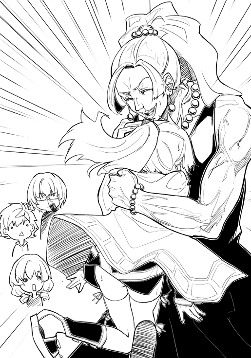
「全然、顔出さないから森で野たれ死んだのかと思っちゃったじゃないのよ！」
げらげら大口で笑いながら、女装男は太い腕でミリーを叩く。
「痛いって！ もう！ ファルネはいい加減に自分の腕っ節の強さに自覚を持ってよ！」
さすがにミリーが怒り、ファルネと呼ばれた男（？）の肩をグーで叩き返した。
「腕っ節の強さだなんて！ 可憐な乙女に失礼なこと言わないでよ！ ねぇ？」
ばっちり化粧をした無骨な男性にいきなり話を振られ、勇司は目をぱちくりさせることしかできなかった。
「それで、いきなりこんな可愛い坊やたちをこのファルネフリードリヒ様の所に連れてきて、どういうつもり？」
ファルネフリードリヒは一番大きな椅子にどすりと腰掛け、火を着けたパイプを銜える。威風堂々とはこのことだろうか。その威厳あるふるまいは勇猛な将軍のようだった。服装と化粧以外は。
「率直に言うと、少しの間ここで匿ってほしいの。お願い」
ソファーの横に立つミリーが頭を下げる。
「あらら。あんたが追い詰められてるってことは、相手はよっぽどやばい奴ってことでしょ？ 誰なの？」
ファルネは紫煙を吐き出す。それは、勇司の知っている煙草の煙とは異なる、独特の甘い香りを放っていた。
「リヨン帝国の軍人」
「ほぅ」
ファルネは紫色のアイシャドーが塗られた瞼で瞳の半分ほどを隠した。
「またえらい相手を敵に回したね。普段なら訊かないんだけど、それだけの相手となると事情を話してもらいたいね」
「それは『前金』って意味でいい？」
ミリーは子猫のように可愛らしく抜け目ない上目遣いでファルネを見る。
「バカ言わないの。前金っていうのは、契約が成立してから払うものだよ。わたしとあんたの間には、まだ何の契約も成立してない」
「情報はタダじゃない。事情を話すことが前金として認められるなら、話してもいいよ」
「その情報がわたしに役に立つかどうか分からないじゃない」
「リヨン帝国相手にも仕事をしてるんでしょ？ それなら、必要ないリヨン帝国の情報なんてないんじゃないの？」
ミリーとファルネはしばらくにらみ合い、数秒後にファルネがため息をついて首をすくめた。
「はぁ。やだやだ。本当にがめつい子に育っちゃったよ」
「ファルネの教育のお陰だね」
ミリーがにこっと笑った。
「この屋敷にいることは許すわ。ただし、わたしはリヨン帝国の軍隊とも取引があるの。だから、わたしができる協力はそれだけ。この屋敷を出たら、わたしたちは他人っていうことでヨロシク」
妖しくウィンクするファルネを見て、勇司は背中に冷たいものを感じた。
「それじゃ、聞かせてちょうだい」
「あの、ちょっといいですか」
勇司が恐る恐る手を挙げた。
「この方はどちら様でしょうか......」
かなりフレンドリーに接してきているが、勇司とファルネは初対面のはずだった。少なくとも、勇司の記憶にファルネの印象はないし、出会っていたら忘れない自信もあった。
「あらら。わたしのこと知らないの？ この街にいたら、嫌でも耳にする名前よう」
ファルネは頬をわざと膨らませて怒ったふりをする。
「すみません。ぼくはクレルモンのはずれに住んでいるもので......」
「ふふふ。いいのよ、別に。ボクちゃんは可愛いから、アタシが色々教えてあげる」
色々って何を教えてくれるんだろう......。勿論、そんなことは怖くて訊けない勇司である。
「アタシはこの街の行商人を取り仕切ってるファルネフリードリヒ」
「別名は『巨漢の乙女』。えげつない商売のやり方によって一代で大成した豪商。見た通りの成金趣味のオカマちゃん。だけど、これでもクレルモンの自治を行う協商衆の一人だから、結構偉い人だよ。わたしとは昔からの知り合いなの」
ミリーの補足に、ファルネは憮然として反論する。
「ちょっとぉ。そういう風に印象悪くするようなこと言わないでくれる？ わたしはお花畑とパンケーキと葡萄酒が大好きな、可憐な乙女なんだから」
ここまで発言者と発言内容が食い違う事例を、勇司は見たことがなかった。
「それで、可愛い坊やのお名前は？」
ファルネは勇司が気に入ったらしく、まずは勇司に質問の矛先を向ける。
「えっと、西島勇司といいます」
「ユージね。なかなかいい名前じゃない。それじゃ、お隣のクールボーイは？」
「綾部恭介です。ファルネさんのお名前と辣腕ぶりは、お噂だけですが聞いています」
「あらやだ。お恥ずかしい」
ファルネは大きな手で大きな口を隠して、照れくさそうに笑う。
「それじゃ、その隣の子は......。ま、いいわ」
「えー......」
楓だけ明らかに興味の範疇ではないようだ。興味を持たれるのも決して喜ばしいことではないが、あからさまに相手にされないのも悲しいものらしく、彼女はがっくりと肩を落とした。
「それじゃ、改めて」
ミリーが咳払いをしてから話し始める。
「まず言っておかなくちゃいけないのが、この三人はキャストなの」
ミリーが言うと、ファルネがそれまでにない表情を見せた。おどけた様子が消え去り、凛々しい男性的な顔になる。
「この街じゃ、あまり人気者になれない感じね、残念だけど」
「うん。分かってる。でも、別にこの子たちが何か悪いことをしてるわけじゃない。それはファルネだって分かるでしょ？」
「まぁ、いいわよ。と言っても、それを聞いただけで、話は半分以上理解できたけどね」
「ファルネもリヨン帝国の軍人がキャストを捕まえようとしていることを知ってるの？」
「勿論。昨日、皇帝の手紙を持った使者が来たのよ。この街でキャスト狩りをしたいから、軍人を入れてくれってね。この街はキャストに対する敵愾心が強いから、キャストを捕まえてくれるなら、どうぞご自由に街にお入りくださいって言ってやったの。自衛騎士団にもちゃんと通達して事情を説明してあるわよ。それにまさか、あんたがキャストを三人も囲ってるとは知らなかったしね」
「知ってても入れたでしょ？」
ミリーが言うと、ファルネは煙草の煙をゆっくりと鼻から吐き出した。
「ま、それが政治ってもんでしょ」
「別にそれに対して文句を言うつもりはないよ。それじゃ、逆に訊きたいんだけど、どうしてリヨン帝国はキャストを捕まえようとしているの？」
「さぁね。そんなの知らないし、向こうも言おうとしなかったわ」
ファルネは素っ気なく言ってから、パイプの火を消した。
「アタシは約束を守るオカマなの。だから、あんたたちがこの屋敷の中にいることは認める。この屋敷なら、リヨン帝国の軍人も調べることはしないだろうから安全だと思うわ。だけど、いつまでもいてもらっていいわけじゃないことは分かるわね？」
「分かってる。迷惑にならないうちに出ていく」
「悪いわね。それじゃ、屋敷内は自由に使っていいわよ。食事も用意させるわ。それじゃね、坊やたち」
そう言って、ファルネは部屋から出ていった。
昨夜の襲撃から張りっぱなしだった緊張感がようやく緩む。ファルネの姿が見えなくなると同時に、勇司は体中の疲れを吐き出すように深いため息をついた。
「一体、何がどうなってるんだよ......」
つい先日まで、勇司はクレルモンの近くの村で狩人をしていた。それは確かに『日本の高校生』としては異質な日常だったが、それでも安定した日々だった。その日常がさらに崩された。
恭介が眼鏡を外し、ハンカチで拭いてからかけ直す。そして、一息置いてから切りだした。
「状況を整理しよう」
「ああ、ぼくもそうしたい」
ほとんど藁にもすがるような気持ちだった。勇司の頭の中では、既に状況が整理しきれていない。それは楓も同じだったようで、彼女もきゅっと口を結んで論議に加わる姿勢を見せた。
「まず確認だけど、あれは居平さんだったな？」
本当に根本の確認からだが、やはり最初はそこから確かめなければいけない。そこで答えたのは、楓だった。
「多分......そうだと思います。居平莉那さんです」
勇司は居平の事を思い出す。居平は活発な方の子で、紫穂たちとともに、クラスの中心グループの一人だった。勇司の思い出の中にある居平と、先ほど襲撃してきた居平とでは随分印象が違う。
「そうだとすると、どうして居平さんは俺たちを殺そうとしたのか」
殺す。その言葉に総毛立つ勇司だが、それは本当なのだから仕方ない。
勇司たちはクラスメイトに殺されかけたのだ。
「殺そうとしていた、というよりは捕まえようとしていたって感じだったよね」
ミリーが横から口をはさむ。
「そうだよ！」
勇司が思わず口を開いた。
「確かに銃は向けられたけど、最初に警告はされた。殺すつもりだったら、最初の段階で撃っているはずだ」
元クラスメイトたちは、勇司たちの本来の世界を知る数少ない仲間。勇司たちは広大な海に浮かんだ流木と同じだ。お互いに出会えること自体が奇跡のようなもの。それならば、せっかく出会った〝仲間〟が自分を殺そうとしているなどとは考えたくない。
「勇司」
恭介の言葉が勇司の淡い希望を鋭く抉る。
「俺は殺意があったかなかったかの話をしているんだ。最初は殺すつもりがなかったにせよ、少なくとも『殺してもいい』とは思っていたはずだ。そうでなかったら、人に銃口なんか向けない。それに、居平さんはキャストとの戦いについて『先手必勝がセオリー』と言っていた。これは、すでに何人かのキャストと戦っていると考えられる発言だ」
「それじゃ......」
楓が自分の膝を強く握る。
「居平さんは、他のクラスメイトを......？」
「憶測で語るのは嫌だけど、その可能性はある。だから、俺たちはそれを踏まえたうえで行動しないといけない。現に、居平さんは自衛騎士団の団員を射殺している。それに塩屋の店主にも凶弾を浴びせた。武器を持っていた自衛騎士団については正当防衛であると考えられなくもないが、塩屋の店主については、明らかに一方的な暴力だ。居平さんには人間相手の攻撃についての抵抗はないと考えられる」
勇司も楓も何も言い返せなかった。元の世界の頃、居平と仲が良かったかと問われれば、それほどでもない二人だったが、こちらの世界ではやはり〝仲間〟であると心のどこかで思っていたのだ。
「問題は居平さんが、俺たちを殺す、あるいは捕まえようとした理由だ」
やはり、あえて〝殺す〟という表現を使いながら恭介が話を続ける。
「居平さんがつけていた双頭の狼の紋章はリヨン帝国軍のものだ。普通に考えれば、居平さんはこちらの世界でリヨン帝国の軍人となり、皇帝の命令に従って行動している、ということになる」
「そうなると、ぼくたちを攻撃したのは皇帝の命令、つまり仕事だったっていうことか」
勇司は自分を納得させるように言う。たとえそれが仕事だったとしても、クラスメイトに銃を向けるのは感心できないわけだが。
「リヨン帝国がキャスト狩りっていうのをしているんですよね」
楓が小さな声で言う。
「どうして、そんなことをしているんでしょうか？」
場に投げ出された楓の疑問は、ドライアイスのようにかちかちに固まり、あらゆる解決も拒んでいるようだった。
誰も答えられないまま、沈黙が四人に重くのしかかる。
「自分たちがなんで追われているかも大事だけど、今後の身の振り方は考えなくちゃだよ？」
沈黙を破ったのはミリーだった。
「ファルネに迷惑をかけられるのも三日が限度。自衛騎士団のおじいさんは、明日の昼にリヨン帝国の軍人はクレルモンを離れるって言っていたけど、勇司たちの姿は見られているんだから、街中が徹底的に調べられる。ファルネはここなら安全だって言っていたけど、いつまでもつか分からないよ。今は自分たちがどうして狙われているかを考えるよりも、どうやったらわたしたちが逃げ切れるかを考えた方がいいんじゃないの？」
わたしたち。
その言葉が勇司に引っかかる。
ミリーの家を襲った男たち。
勇司たちを襲った居平。
いずれもキャストである勇司たちを狙っての襲撃だった。ミリーには無関係のことだ。
「わたしたち、じゃないよ」
勇司は心を決める。
「ミリーはキャストじゃないんだから関係ない。迷惑をかけてごめんね」
「勇司、わたしは......」
「ダメだよ」
今こうやって安全な場所に身を隠せているのもミリーのお陰だ。これだけでも十分すぎるほど世話になった。勇司は、これ以上ミリーに迷惑をかけるのは嫌だった。
「こっちの世界に来て、ミリーには本当に助けられた。今だってそうだ。だけど、もうこれ以上迷惑はかけられないよ。ぼくたちと一緒にいたら、その......」
「死ぬかもしれない？」
言い淀んだ続きをミリーは平然と言い放つ。
「うん。ミリーには本当にお世話になったから、危険な目には遭ってほしくないんだ」
「勇司......」
ミリーは開きかけた口をゆっくりと閉じる。
「今まで本当にありがとう。ミリーのお陰で今まで生きてこられたと思う。こんな風なお別れは淋しいけど......」
「やめて」
ミリーが強く首を振る。
「勇司にそんなこと言われても、全然嬉しくないんだから」
「だけど！」
「クレルモンからどうやって脱出するの？ クレルモンから無事に出られたとして、その後はどうするの？」
「それは......ミリーには関係ないよ」
勇司だってそんなことは言いたくない。しかし、それは事実だったし、彼にはその言葉しか残されていなかった。
「勇司がこの世界でずっと生きていくって言うんだったら、ほとぼりが冷めるまでどこかに隠れていて、またわたしたちの村に帰ってくれば......」
「ミリーさん」
それまで黙っていた恭介が鋭く切り込む。
「こんな事は言いたくないけど、ここは俺たちが住む世界じゃない。俺たちとミリーさんは住む世界が違うんだ。だから、これ以上は俺たちに関わらない方がいいし、関わってもらっても迷惑だ」
「恭介！ そんな言い方はないだろ！」
勇司は思わず叫ぶ。
「勇司がはっきり言わないから、俺が代わりに言ったんだ。長い間一緒にいて情がわいたかもしれないが、ここは異世界だ。ここでつくられた人間関係なんてものは、元の世界に戻ってしまえば意味のないものになる」
「そんなこと言うなよ！ そんなこと......」
どこまでも正しく、何よりも鋭い言葉とは、ここまで人の心を抉るのか。勇司は今まで見たことのない恭介の達観にも似た徹底的な現実主義に愕然とした。
「そうですよ！ そんな言い方あんまりです！」
楓も普段なら出さないような大きな声で反論した。彼女は世話になったであろう塩屋の店主を目の前で撃たれている分、言葉に対して敏感に反応してしまうのかもしれない。
「お世話になった人だっているのに......元の世界に戻ったらもう関係ないなんて、そんなのおかしいです！」
ほんの数時間前の惨劇が甦ったのか、楓はそのまま俯いてすすり泣き始めた。
「俺だってこんな言い方はしたくない。だけど、それが現実だ」
「そうだね。恭介君の言う通りかも」
ミリーがゆっくりと同意する。
「だけどね、たとえ違う世界の人間だったとしても、半年も一緒に暮らした奴を見捨てるほどわたしは薄情じゃないよ」
「ほう」
恭介の眼鏡が窓から入ってきた陽光を反射し、その奥にある眼を隠す。その隣で、さめざめと泣いていた楓が不意に顔を上げた。
「一緒に暮らした！」
そう言ってから、楓は勇司とミリーを交互に見て、再び肩を落として泣き始めた。
「どういうつもりかは知らないけど、協力してくれるというのなら無理に止めはしないよ」
「恭介！ ミリーをこれ以上巻き込むわけにはいかない！」
「いや、どうやらミリーさんにはミリーさんの事情もあるみたいだ」
恭介が言うと、ミリーがわざとらしく肩をすくめてため息をついた。
「勇司の友達って、本当に人を信用しない奴だね」
「でも、ミリー！」
何とかミリーを〝戦線〟から離脱させようとする勇司の口に、ミリーの人差し指が当てられた。
「わたしだって勇司に感謝してるの。一緒に狩りをしていて楽しかったし、お金も稼げた。だから、せめて勇司が安全になるまで助けたい。これは本当の気持ちだよ」
ミリーに唇を触られ、勇司は顔を真っ赤にさせてしまう。恭介は何も言わずにそんな二人の様子を見ていた。相変わらず泣きっぱなしの楓は、両手で顔を覆っているが、指の隙間から勇司とミリーのやり取りを見て、涙の量を密かに増やした。
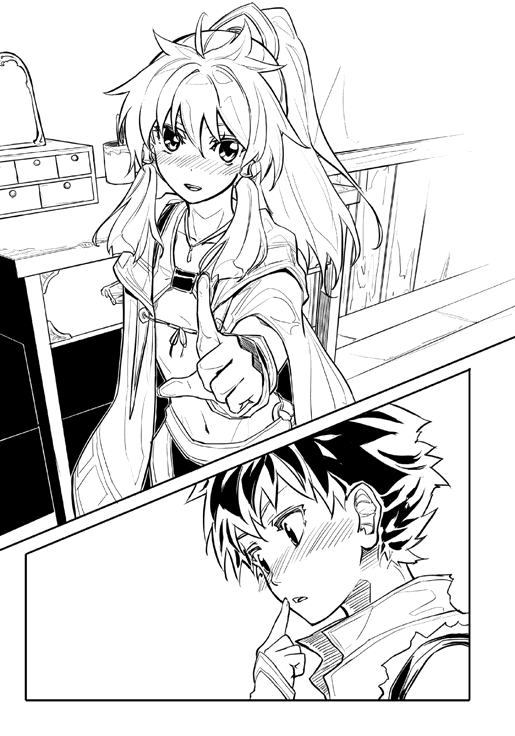
「それじゃ、クレルモン脱出の算段に取り掛かろう」
恭介が仕切り直すが、すかさずミリーがそれを邪魔する。
「その前に、ご飯と水浴び！ 一晩中街道を歩いてきたんだから、ちょっとは休憩しようよ」
次に休めるのがいつになるのか分からないんだから。ミリーはそこまで言わなかったが、それは全員が考えたことだった。ここから、どんな苦難が待ち受けているのか分からない。休息はとれるうちにとっておいた方がいい。
一晩中歩き続けたお陰で疲労は溜まっていたし、今朝の事件で精神的な消耗も激しかった。勇司だけでなく、そんな素振りを見せない恭介やミリーだって同じ思いであろうことは容易に想像できた。
「分かった。ただし、ここだっていつまでも安全な訳じゃない......」
「よぉし！ まずはお風呂だ！ ファルネは屋敷の中に浴室を持っているんだよ！」
恭介を無視したミリーは元気に立ち上がり、楓の手をとった。
「裸の付き合いしようぜ！」
「え？ えぇ！」
楓はミリーに引っ張られるように、部屋から連れ出された。ドアが勢いよく閉められ、数秒後に少しだけドアが開き、ミリーがちょこんと顔を出した。
「覗くなよ！ ぜーったいに覗くなよ！」
「それ、ぼくたちが元いた世界だと、『覗け』って意味になるんだけど......」
「バカ！」
再びドアが元気よく閉められた。
女子二人が去り、男子二人が部屋に残された。
「随分と強引な誤魔化し方だな」
恭介が呆れるように言う。
「誤魔化すって何を？」
「さぁね。だけど、あのミリーっていう女が俺たちに肩入れするのは、単純な同情や優しさだけじゃないだろうな」
「そうか？ あいつはバカ正直でおせっかいでお人よしだよ。ぼくが困っていると思って助けているだけだと思うけど」
「勇司はあの女のことが好きなのか？」
恭介の不意打ちに、勇司はドギマギしてしまう。
「な、何をいきなり言い出すんだよ！ 今はそんな話してないだろ！」
「正直に答えてくれ。どうなんだ？」
恭介に茶化している様子はない。顔を真っ赤にしていた勇司だったが、段々と落ち着いてくる。
「えっと、好きっていうのは、女の子として？」
勇司は恥ずかしそうに質問する。
「どういう意味でもいい。好意は持っているか？」
「え？ まぁ、そういう意味なら好きだけど」
いきなり真面目なトーンで恋愛話が始まるのかと思って緊張した勇司だったが、どうやらそういうわけでもないようだった。
「そうか。はっきり言うが、その手の感情をこの世界のモノに持たない方がいい」
「待てよ、恭介。そんなこと......」
「いや、俺は本気だ。いいか、よく聞いてほしい」
声が一オクターブ下がる。
「前にも言ったように、俺はこの世界は『ロールで創られたもの』だと考えている。つまり、この世界の生き物はすべてゲームマスターによって創りだされた偽物だ。ここにいる人も動物も、すべて元の世界の『人』や『動物』と同じ姿をしているが、全く違うものなんだ」
「そんなことないだろ。確かにこっちの世界と元の世界は別モノかもしれないけど、ミリーは自分の意思で動いているし、街の人たちだって普通に生活をしてるよ」
「そう見えているだけだ。ここが本当に創られた世界だとしたら、彼らはすべて虚像だ。誰かが創りだした影にすぎない」
虚像。
影。
勇司の脳裏にはミリーや肉屋のジョゼフ、オカマのファルネの顔などが浮かんだが、彼らが中身のない空虚な存在だとは思えなかった。
「例えば、勇司が漫画やゲームのキャラに感情移入したとしても、俺は何も言わないさ。それくらいの方が作品を楽しめると考えることもできる。だけど、この世界ではダメだ。下手に情にほだされるようなことがあれば、身の危険を招く」
レンズの奥にある恭介の眼球は黒く染まっていたが、見つめるだけで吸いこまれそうなほどに澄んでいた。
同じ目だ。
勇司は気付く。
昨夜の襲撃で、恭介は侵入してきた男たちを何の躊躇もなく叩きつぶした。塩屋の店主が射殺された時、恭介は眉ひとつ動かさなかった。
どこまでも冷静で、純粋に現実のみを見つめる黒い瞳だ。
「ここは恭介にとって、架空のゲームの中と同じなのか？ 誰が死んでも、誰が苦しんでも、ここは現実世界じゃないから平気なのか？」
思い出すだけで体が震えだす。
血の温かさと死の冷たさ。
勇司はそこに確かに現実を感じた。この世界も、この世界の生き物たちも、空虚な幻だとは到底思えない。
「その通りだ。この世界で俺たちはキャストなんだ。俺たちは与えられたロール通りに動くことを求められている。誰がこんな世界を創って、どうしてそんなことが求められているのかは分からない。だけど、この世界のすべてが虚偽で塗り固められ、その中で俺たちが踊らされているということだけは明らかだ」
「キャストとロール......」
ここが巨大な劇場ならば、勇司たちはこの劇の俳優である。キャストやロールはそういう意味で使われる言葉だ。これがお芝居だとしたら、この演劇は悲劇なのか？ 喜劇なのか？
「もう一度警告する。こっちの世界の人間とは距離をおけ。勿論、利用するのは構わないし、相手を油断させるために心を許したふりをすることもある。だけど、いざという時は『奴らは俺たちの世界とは違う世界のモノだ』ということを絶対に思い出せ」
「ぼくたちの世界とは違う......モノ」
「そうだ。奴らは、この世界を創ったゲームマスターの手先かもしれない。俺たちが信用できるのは、元の世界からやってきたクラスメイトだけだ。まぁ、その中にゲームマスターがいるかもしれないんだがな」
最後に恭介は皮肉っぽく笑った。
たった一年間離れただけで、クラスで一番仲の良かった友人が、随分と遠くに行ってしまった。それに勇司は淋しさと同時に、恐ろしさを感じた。
そう。恐ろしい。
勇司の心に芽生えたのは明確な恐怖だった。
お前、なんか変だぞ。
そう言って笑い飛ばしたかった。
恭介は目の前で人が死に、血を浴び、殺意を向けられて気が動転してしまっているのだ。
そんな陳腐な理由づけをして、昔の勇司と恭介の関係に戻りたかった。
だが、渇いた口からそんな言葉は飛び出さない。
怖いからだ。冷酷なまでに現実的にこの世界からの脱出を目指す恭介の変貌ぶりが恐ろしいのだ。
下手なことを言えば、自分と恭介はもう友達ではいられなくなる。いや、もしかしたら〝敵〟と認識されてしまうかもしれない。この世界の人々をモノと言い切る恭介を見ていると、勇司はその想像が誇大妄想ではなくリアルに感じられた。
「誰を信じるかは勇司の自由だ。だけど、俺は......親友の勇司なら俺の言うことを分かってくれると信じている」
普段なら絶対にそんなことを言わない恭介の言動に、勇司の心がぐらつく。
「ぼくだって、恭介の事は信じてるよ」
それは嘘じゃない。
「だけど、ミリーには本当に世話になったし、今まで生きてこられたのも村の人たちのお陰でもあるんだ」
「それがシナリオ通りの行動だったとしたらどうだ？ 彼らに恩を感じるのは無意味だ」
「恭介は、本当にこの世界が誰かによって創られたものだと思ってるのか？ この世界の人たちはゲームや映画の登場人物と同じで、シナリオ通りに動くモノだっていうのか？」
「そうだ」
明快だった。そこまで割り切れるかどうかで、この世界の歩き方は大きく変わってくる。
「勇司が困惑するのも分かる。見た目は同じ人間だし、優しくされれば好意を持ってしまう。それが自然な反応だ。だから、すぐに変われとは言わない。ただ、ゆっくりでいいから俺の言うことも理解してほしいんだ」
親友だから？
そう尋ねかけて、勇司は口を閉じた。その答えが肯定でも否定でも、勇司の心に傷がつきそうだからだ。
「分かった。恭介の言葉は覚えておくよ」
「ありがとう。他の七人の仲間たちも、俺と同じ意見だ」
七人の仲間。
七人のキャスト。
七人のクラスメイトたち。
すべて同じ意味のようであっても、実は全く違うものなのかもしれない。
「この世界に、ぼくたちのクラスメイトはみんな飛ばされてきたのかな？」
「さぁ、それは分からない。だけど、俺がこの一年間で出会ってきたキャストは全員クラスメイトだった。それに、クラスメイト以外で元の世界から飛ばされてきた人を見たことがない」
「そうすると、やっぱりぼくたちのクラスの人だけがこっちに飛ばされたんだ......。なんでだろう......。どうして、ぼくたちだけ......」
「それは、ゲームマスターを捕まえてみなければ分からないさ」
「こんな事をするなんて、よっぽどの理由だよ」
「そうかな。案外、どうでもいいようなことかもしれないぞ。知らない世界で不思議な力を使ってみたい、なんてのはちょっと憧れるだろ？ 俺だって小学生や中学生の頃は、漫画を読みながら少しは思っていたもんだよ」
恭介が皮肉っぽく笑う。
「だからって、本当にそんな世界を創って、無理やり他人を巻き込むなんて滅茶苦茶だ」
勇司も夢想の世界に想像の羽をはばたかせたことがある。なぜか学校を占拠したテロリストに一人で果敢に挑む自分。お忍びでやってきていた某国のお姫様を偶然護衛することになった自分。突然、異能力を身につけてしまい謎の組織に追われるようになった自分。そうした茶番のような空想は楽しい。妄想の中で自分は無敵だし、どこまでもかっこいい。
だが、現実ではどうだ。
ロールという不思議な力を手に入れたものの、勇司がしているのは動物を相手にした狩猟だ。英雄になどなれないし、なるチャンスもめぐってこない。むしろ、その能力を人から妬まれ、疎まれるくらいだった。
「ああ、そうだな。本当にその通りだと思うよ。妄想は妄想。人を巻き込むべきじゃない」
「そもそも、こんな世界を創りだすなんて、元の世界がどれだけ嫌いな奴なんだよ」
元の世界の生活に満足していれば、こんな世界を創る必要はない。たとえ創ったとしても、すぐに元の生活に戻るはずだ。
元の世界には家族がいるし、クラスメイト以外の友達もいる。好きな漫画やドラマだってあっただろう。
そこで、勇司は一つの可能性を思いつく。
明確な根拠もなく、特定の個人を疑うべきではないのだが、その可能性を思いついた瞬間、勇司の中でそれが唯一の正解であるように思えてきた。
「一つ思いついたんだけど......」
言うべきか言わざるべきか。勇司は迷ったが、ここまで言ってしまえば、相手が話の続きを促す。恭介は何も言わないが、明らかに無言のまま続きを話すようにプレッシャーをかけてきた。
「この世界を創った奴って、きっと元の世界が嫌いなんだよな？ だから、自分でオリジナルの世界を創ろうとしたってことだろ？」
語りづらい話のため、ついつい相手の同意を求めてしまう。勇司は、この話を創っているのは自分だけじゃない、という安心感が欲しかった。
「ああ、その可能性は高いと思うよ」
そんな勇司の心を見透かすように、恭介は優しく同意した。
「そうだとしたら......その、もしかしたら、犯人って......」
「東掛公紀」
勇司が言い淀んでいたワードを、恭介がさらりと言う。
「......うん。東掛君って、いつも不良グループにイジられていたし、女子たちにも気持ち悪いって言われてたから......」
「虐められていたから、元の世界に嫌気がさした。復讐を兼ねて、自分たちのクラスメイト全員を異世界に閉じ込めた、ということか？」
恭介は一切の躊躇いを見せずに言う。
「ここでは遠慮や配慮はすべてなくそう。可能性の一つとして話すべきだ」
「うん、分かった。東掛君なら、ぼくたちをこの世界に送り込む動機があると思うんだ。ぼくや恭介は直接虐めなかったかもしれないけど、見て見ぬふりをしていたことはあると思う。そうだとしたら、ぼくたちだって恨まれていたとしてもおかしくない」
いつもよりゆっくりとしたペースで、勇司は話す。部屋には恭介以外に誰もいないのだが、何だか陰口を誰かに聞かれているような罪悪感があった。
「同じことを俺も考えた」
恭介にそう言われ、勇司はほっとした。そして、クラスメイトを疑い、そこに連帯感を覚えてしまった自分を情けなく思った。
「だが、その可能性は限りなく低い」
「どうして？ 東掛君に会ったのか？」
「ああ」
「やっぱり、東掛君もこっちに来てたのか。今、彼はどこにいるの？ もしかして、七人の仲間の中に東掛君がいる？」
「東掛君のロールは『不可避の呪術師』。能力は、恨みを持つ人間の体細胞の一部を木製の人形に貼り付け、呪いの人形をつくりだすというものだ。呪いの人形に与えたダメージは、体細胞を持っていた人間にも与えられる」
舞台役者の台詞のように、恭介はすらすらと東掛のロールの内容をそらんじる。
「彼はロールの内容を堂々と教えてくれたよ。事細かくね。非常に強力な、暗殺に特化したロールだといえる」
「そんなロールを......人を傷つけることしかできないロールなんて、持っていても意味ないじゃないか」
「ロールの使い方は無限大だから、『不可避の呪術師』の使い方も色々あるだろ。だが、東掛君のロールが人を傷つけるのに有用であることは間違いないな。東掛君に会った時、彼は興奮していた。きっと、この世界でロールを手にしているのは自分だけだと思っていたんだろう。だからこそ、自分の手に入れた力を自慢げに喋ってくれた。俺たちを怖がらせるためだ。当時、俺は二人の仲間と一緒に行動していたんだけど、そのうちの一人が東掛君に殺されかけた」
「え！」
殺されかけた？
クラスメイトが、クラスメイトに？
「勇司の言う通り、東掛君は俺たちに恨みを持っていたようだった。彼は強力な力を手にしていた。復讐のチャンスだと思ったんだろう」
「それはおかしい！ いくら東掛君でも、こんな異世界でクラスメイトに会ったら助け合おうとするはずだ！ 一緒に元の世界に帰るために情報を共有しようとするのが普通だろ！」
恭介が眼鏡の位置を直す。
「その考え方は危険だ」
「危険？」
「仮に東掛君が現実世界で自殺を考えるほどに思い悩んでいたらどうだ？ 元の世界よりも、こちらの世界の方がずっと魅力的に感じたとしてもおかしくない。他の人にはない強力な力を持っている分、こちらの世界の方が快適に暮らせる人だっているだろう。東掛君が俺たちと協力して元の世界に戻りたいと考えている保証なんてどこにもないんだ」
「そんな......。それで、恭介たちはどうしたの？」
「無論、反撃したよ」
反撃。その表現だけでは一番知りたい部分が分からない。
「反撃して......東掛君はどうなったの？」
「直接的には殺していない」
殺す。
覚悟はしていたが、その言葉がまた出てきたことに勇司は戦慄する。
恭介はこちらの世界の人々は〝モノ〟だと表現した。だけど、元の世界で同じ学校に通っていたクラスメイトたちは〝人間〟のはずだ。
「直接的にはってどういうこと？」
「死ぬ直前まで攻撃を加えた。死体を確認していないが、全身打撲の状態で夜の森に逃げ込んだから、恐らく生きてはいないだろう。夜行性の肉食獣が後始末をしている。東掛君の能力は確かに強力だけど、たくさんいる肉食獣と戦うのには向いていないからね」
「そんなひどいこと......」
「仕方ないことだ。やり返さなければ、こちらがやられていた。実際、東掛君の襲撃で仲間の一人は右腕を失った。人形の腕が引きちぎられたんだ。彼女のロールが片手でも問題なく発動できるものだったのがせめてもの救いだったよ」
「東掛君を痛めつけて森に追い詰めるのが仕方ない？ 片手を失ったのがせめてもの救い？ そんなのおかしいよ！ どうして、クラスメイト同士でそんなことをやってるんだよ！」
これまで黙って話を聞いていた勇司だったが、これには納得できなかった。
「恭介はこっちの世界の人は信用しないって言ったけど、元の世界の人間も信用できないのかよ！」
「だから、俺たちは殺されかけたんだ」
「だけど！」
「落ち着け、勇司」
「落ち着けるかよ！」
恭介が困ったように息をつく。
「ぼくたちは助け合ってこの世界を脱出するんだよな？ 恭介はそう言ったじゃないか！」
「ああ、言った」
「でも、東掛君を殺した」
「同じことを何度も言わせるな。東掛君が先にこちらを攻撃してきた。だから、反撃した。これは正当防衛だ」
「恭介がクラスメイトを殺したことは変わらない！」
勇司はソファーから立ち上がり、部屋の中を歩き回る。恭介の横で大人しく座っていることなどできなかった。
「どうしてだよ......。どうして、こんなことになってるんだよ！」
強く握られた勇司の両拳は、その怒りと悔しさとやるせなさの混ざった煮えたぎる感情を、どこにぶつけていいものか決めあぐねて震えていた。
「東掛君も一緒にこの世界から脱出するんじゃないのか！」
「彼がそれを望むなら、こっちだって攻撃なんかしない。仲間として迎えてもいい。だけど、彼はこちらに敵意をみせた。俺はこっちに送られてきたクラスメイト全員を元の世界に戻そうと思ってるわけじゃない。戻りたいと思っている人だけが戻れればいいんだ。それを邪魔する者がいたら、たとえクラスメイトだったとしても容赦しない」
「そんなの！」
おかしくない。
恭介の言うことは理にかなっているし、現実的だ。
勇司もそれは分かっている。恭介が正しいことは十分に理解している。しかし、頭では分かっていても、心ではそれが許せなかった。
「勇司が言いたいことは分かる」
恭介もソファーから立ち上がり、勇司に寄る。
「だけど、俺たちが生きて元の世界に戻るためには、ある程度の冷徹さが必要だ。目的を達成するためには、犠牲が生まれる。その犠牲を最小にするための努力はするが、ゼロになるとは限らない。分かるな？」
「分かるよ。それは、分かるけど......でも、ぼくはやっぱり人を傷つけるのは嫌だ。元の世界の人は勿論嫌だし、こっちの世界の人たちだって同じだよ」
少し間を置いて、恭介がソファーに戻った。
「相変わらず、勇司は優しいな」
本当は、甘い、と言いたかったんだろう、と勇司は思う。そう言わなかったのが、恭介の〝優しさ〟だった。
「もう一度言うが、俺の七人の仲間たちは、みんな俺と同じ考えだ。この世界から脱出するために邪魔する者を容赦しない。それがクラスメイトだったとしても」
足を組み、膝の上で指をからめた恭介が真っ直ぐに勇司を見る。
「もう一度訊くぞ、勇司」
問われる内容は分かっていた。
覚悟を決めろということだ。
「俺たちの仲間になるか？」
それは、この世界からの脱出のために、この世界の人々との関わりをすべてなくす覚悟があるか、ということ。
それは、この世界からの脱出のために、クラスメイトでも切り捨てる覚悟があるか、ということ。
「ぼくは......」
居平は勇司を殺そうとした。
それでは、勇司は彼女を殺すことができたか？
「もう少し考えさせてほしい」
結論は出なかった。
「ああ、急ぐことはない。少なくとも、クレルモンを脱出するまで俺たちは一緒だ。それまでに答えを出してくれればいい」
「ありがとう」
「さて、と」
恭介は立ち上がると、肩を軽く回す。
「俺は少し仮眠を取ろうと思う。風呂にも入りたいし、飯も食いたいが、まずは仮眠だ。寝不足は頭の回転を悪くする」
「そうか。ぼくはどうしようかな」
「風呂でも覗きに行くか？」
「バ、バカなこと言うなよ！」
恭介は笑い、勇司もつられて笑った。
こんな状況で笑えるのは不思議だったが、無理にでも笑わなければ、心を維持することができそうになかった。
「あのぉ」
銭湯のように広い湯船につかりながら、楓は隣に座るミリーを横目でチラチラと見る。
「ん？ なに？」
「ちょっとお伺いしたいことがありまして......」
楓は湯気の向こうにいるミリーが自分の方を向くと、慌てて視線を逸らした。見ず知らずの人と会話するのは緊張してしまう性質なのだ。
「に、西島君とは、どういったご関係なんでしょうか？」
「西島君？ ああ、勇司のことね」
「勇司......。呼び捨てなんだ......」
「え？ 何か言った？」
「わわ！ 何でもないです！」
楓はばちゃばちゃと水を飛び散らせながら、手を振った。
「ふふ。君って面白いね。ねぇ、楓って呼んでいい？」
「あ、はい。クラスの子にもあんまり呼ばれたことないけど......」
そう言いながら、楓は昔の事を思い出す。
橘楓はクラスのオブジェクトのような存在だった。目立つわけでも、動くわけでも、喋るわけでもない。誰かから特に嫌われているわけでもないが、誰かから特に好かれているわけでもない。小さなコミュニティーをつくって、その中でだけ少しワイワイと騒ぐくらいだった。楓のことを〝楓〟と呼ぶのは、本当に気を許した数名だけ。楓はそんな少数精鋭の友人たちと高校生活を過ごしていた。
「それじゃ、わたしはミリーちゃんでいいからね。えっと、何の話だっけ。あ、そうそう。わたしと勇司の関係の話だよね。まぁ、簡単に言うと婚約者かな？」
「えぇー！」
楓が目と口を限界まで開いた。全身全霊の驚愕表現である。
「ははは。ごめん、ごめん。嘘だよ」
そんな楓の様子を見て、ミリーはきゃっきゃっと笑う。
「本当はただの同居人。あと、仕事のパートナーって感じかな。勇司のお陰で狩りの仕事はすっごく助かってるんだ」
「そうなんですか。それじゃ、別にお付き合いをしてるとか、そういう訳じゃないんですよね？」
「心配しなくても、勇司をとったりはしてないから大丈夫だって」
相変わらず笑顔でミリーが言うと、楓の顔がみるみる赤くなっていく。
「そ、そんな心配なんかしてません！ ちょっと気になっただけと言うか、そうなのかなぁって思っただけと言うか......。とにかく、ミリーさんが考えているようなことはありませんから！」
再び水しぶきをあげて、楓は全力で否定をアピールする。
「まぁまぁ、そんなに慌てないの。でもね、楓。勇司をものにするのはちょっと難しいかもだよ」
そう言われ、楓が動きを止めた。
「勇司って紫穂ちゃんっていう女の子のことが好きっぽいんだよね。前の世界には幼馴染がいて、その子が紫穂ちゃんっていうらしいんだけどね」
「錦織さん......」
楓はクラスメイトの才女の事を思い出す。
ルックスも頭脳も運動神経も性格も、すべてにおいて非の打ちどころのない超人。それが、楓からみた錦織紫穂の評価だった。せめて性格くらい悪くあってくれた方が、まだよかったのに、とすら思う。
「今でも時々話すんだよね、その子のこと」
「そうなんですか......。仕方ないですよ。錦織さんは、本当に凄い人ですから。わたしなんか、全然相手にならない人なんです」
勇司が紫穂のことが好きなのは分かっていた。いつも勇司の行動を気にしていた楓なら、特にそれが痛いほどよく分かっていた。
「西島君の周りには、錦織さんとかミリーさんとか、素敵な女の子が一杯ですね。わたしが男の子だったら嬉しいだろうな」
楓は無理に笑う。すると、ミリーが彼女の頬を抓った。
「こら」
「いはいれふ！」
痛いです、と楓は訴えるが相手には伝わっていない。
「そんなこと言ってると、本当に嫌われちゃうぞ」
ミリーは楓の頬から手を離すと、にこっと笑った。
「わたしは応援するよ、楓のこと」
「応援って......別に応援されるようなことは......」
「ん？ 不満？ それなら、わたしと楓でどっちが勇司をとるかの勝負がいい？」
「だから、わたしはそういうことを言ってるんじゃないんです！」
楓は口元まで湯船につかり、ぶくぶくと気泡を吐きだした。これ以上会話しても、バカにされるだけだということに気付いたらしい。
「ごめんね」
ミリーは目を細めて、湯を手ですくって肩から流す。
「本当にごめん......」
その日は一日、勇司たち一行はファルネの屋敷で過ごすことになった。巨大な商業都市の中でも随一の豪商の屋敷だけあって、広大な屋敷は一日では探検しきれないのではないか、と思うほどだった。朝食後、水浴びを終えた勇司はあてがわれた部屋のベッドに横になった。初めは色々なことが頭の中を回り、なかなか寝付けなかったが、昨晩からの疲れは確実に勇司の体を蝕み、意識が落ちてしまえばその後は泥のように眠った。
夢の中で、久しぶりに家族が現れた。自分が住んでいた家や、中学時代の友達、飼っているペット、元いた世界の街並みが現れては消え、そのまま薄暗い闇に包まれて夢が終わった。目じりに溜まった涙を拭いた勇司は、恭介との出会いで熱いマグマのような衝動が生まれていることを自覚した。
元の世界に帰りたい。
それは誤魔化しようのない気持ちだった。
「あのぉ......」
ノックと同時に、少し間延びした声が聞こえる。楓の声だ。
「はい！ どうぞ」
勇司は目じりの涙をもう一度拭き、ベッドから降りる。窓の外から入る光はほとんどなく、既に日が暮れているらしいことが分かった。
「お邪魔します」
遠慮がちに楓がドアを開け、顔だけ入れた。
「そろそろお食事の時間らしいですよ」
「もうそんな時間？ 結構寝てたな」
そう言いながら伸びをすると、体中からバキボキと音がなった。
「実は、西島君にお願いがあるんですけど......」
「ん？ なに？」
「朝ごはんをいただいた場所って......どこでしたっけ？」
どうやら、楓は迷子になってしまったらしい。
楓は顔を赤くして、恥ずかしそうにしている。そんな彼女を見ていたら、勇司は噴き出してしまった。
「笑われてしまった......」
楓はますます恥ずかしそうに俯いてしまう。
「ごめん、ごめん。だけど、ぼくも食堂に行けるか分からないよ」
「それなら、二人で探しませんか。そうすれば早く見つかるかもしれないですし」
「そうだね。一緒に探そう」
「は、はい！」
勇司と楓は一緒に廊下に出る。踝くらいまで埋まりそうなふわふわの絨毯が敷き詰められたその道を、二人は並んで歩いた。廊下に並ぶ華美な燭台では蝋燭が灯っている。
「前から気になっていたんだけど」
勇司が少し後ろを歩く楓に話しかける。
「橘さんって、どうして敬語なの？ これって、元の世界にいた頃からだよね」
「えっと......男子と喋るのにあんまり慣れてないから......かな」
ちょこちょこと小走りになり、楓は勇司に並んだ。
「でも、同じ学年なんだし、敬語じゃなくていいよ」
「ホ、ホントですか！」
楓の声がひっくり返る。
「いや、別に大丈夫だけど」
楓の過剰な反応に、勇司の方が驚いてしまう。
「えっと、それじゃ......よろしく......です」
どうやら、慣れていない。
「えっと、それじゃお返しに、その、わたしのことは楓って呼んでください」
「え？ なんで？」
勇司が言うと、楓の顔が赤から青に変わる。
「わ、わたし、調子に乗ってしまって......」
「冗談だよ。それじゃ、ぼくのことは勇司って呼んでくれていいから」
「ゆ、勇司君」
一度言って、楓は紅潮する。勇司が心配になるほど、楓の表情はころころと変わる。
「大丈夫かな......ちゃんと発音できるかな」
「変なところ心配してるね」
「え？ わたし変？」
楓は自分のつま先の辺りを見つめ、そのまま顔を上げなくなった。黙り込んで、これ以上ボロを出さないようにする作戦らしい。しかし、彼女の軽い足取りから、ウキウキする気持ちが抑えきれないのが分かった。
「何かいいことあった？」
二人は廊下の出口から中庭に出る。勇司は、食堂から寝室に戻る時に中庭の遊歩道を通った記憶があった。
西の空は紫色に染まり、空には無数の星が輝いている。東京にいた頃には絶対に見られなかった夜空だった。
「分かりますか？ ......じゃなくて、分かるの？」
楓は少し顔を上げる。
「何となく。橘さん......じゃなくて、楓が嬉しそうにしてるから」
何だかくすぐったい。照れ隠しに笑うと、楓も同じように微笑んでいた。
「店長が無事だったらしくて」
「店長って、塩屋で撃たれた女の人？」
「うん、そう。どうしても気になって、ミリーさんからファルネさんに調べてもらうようにお願いしてもらったの。あれからお医者さんのところに運ばれて、治療してもらったらしくて、命に別状はないんだって。体に弾丸が残ってることもなかったらしくて、すぐに仕事に戻れるらしいの」
「そうか。だから、テンションが高いのか」
「うん。怪我させちゃったのは残念だけど、あの時はもう本当にもうダメかと思ったし......。それに、こうやって勇司君と一緒に歩けてるし......」
「え？」
後半部分がよく聞き取れず、勇司は訊き返す。
「な、何でもないよ！」
楓は首を大きく振る。その様子がおかしくて、勇司はやっぱり笑みを浮かべてしまう。
中庭を抜け、再び廊下に戻る。その直前で、勇司は足を止めた。横を歩く楓も少し遅れて足を止め、不思議そうに勇司の顔を覗き込む。
「どうかしたの？」
「夕食まではもう少し時間あるんだよね？」
「うん。多分、まだ大丈夫だと思うけど」
「少し話さない？」
花壇に囲まれたベンチを指し、勇司が言う。
「え？ い、いいんですか？」
「いいんですか、っていうか、ぼくの方からお願いしてるわけだし。あと、敬語に戻ってるよ」
「わわ。ご、ごめん」
一度、大きく深呼吸してから楓は頷く。
「いいよ。何の話？」
二人はベンチに腰掛けた。外に照明類は一切なかったが、月明かりのお陰でお互いの表情は分かる。楓は緊張していたし、勇司は少し思いつめた顔をしていた。
妙な沈黙の後に、勇司が切りだした。
「楓はさ、元の世界に戻りたいと思う？」
「勿論、帰りたいよ」
即答だった。
「これは、もしもの話だから、そのつもりで聞いてほしいんだ。もしも、楓が元の世界に帰るのを邪魔しようとする人が出てきたら、楓はどうする？」
「邪魔？ どうして？」
楓は笑っている。そんな質問には意味がない、とでも言いたいのだろう。
「理由は分からないけど、とにかく楓の邪魔をするんだ」
「理由が分からないのに、か......。わたしなら説得するかなぁ。わたしは帰りたいんですって、ちゃんと話せば分かってもらえるよね」
話せば分かってもらえる。
ちゃんと話が通じる相手ならば。
「どうして、いきなりそんなことを訊くの？」
今度は楓の方から当然湧き上がるだろう質問がぶつけられた。
「恭介は元の世界に帰るためのグループをつくっているんだ。そのグループは、元の世界に帰るためなら手段は選ばないっていうスタンスらしい」
「手段は選ばない？ それって、どういうこと？」
「もしも、邪魔をするなって言っても通じないような相手だったら、力づくで邪魔させないようにすることもあるっていうことだよ」
「力づく......」
楓は小さく唇を震わせる。
「楓はどう思う？ それでも恭介の仲間になって、元の世界に帰りたい？」
「......ホントのことを言えば帰りたい。わたしたちが元の世界に帰ろうとするのを邪魔する人なんて、そんなにいないと思うし」
「いや、そうとも限らないんだ。たとえ『帰らせない』という明確な意思がなくても、『恭介たちの行動を邪魔する』というだけで、恭介は実力で妨害を排除すると思う。そうなれば、居平さんだって攻撃の対象になるかもしれないんだ」
居平の名前が出ると、楓は目に見えて元気を失くした。さっきまでころころ変わっていた表情が、暗いものに固定された。
「居平さん......」
「恭介と一緒に帰る方法を探すっていうことは、そういうことなんだ」
重苦しい沈黙が二人の間にのしかかる。ベンチごと二人を押しつぶしてしまいそうな錘が、二人の口から言葉を奪った。
「......わたしは、嫌かも」
先に沈黙を破ったのは楓だった。
「たとえどんな事情があったにしても、わたしは居平さんとは喧嘩したくないよ。だって、この世界にいる数少ない『仲間』だもん」
「ぼくたちを殺そうとしたとしても、居平さんを仲間だと思える？」
「きっと事情があるんだと思う。訳もなく、人を殺そうだなんてしないよ」
偽善や何かを衒って言っているわけではなく、楓は本気でそう思っているようだった。
「......そうだよね。そうだよ！ 絶対にそうだ！」
恭介に理詰めで話されていた時には抑えつけられていた熱い気持ちが、勇司の中で再び甦ってくる。
ぼくたちはこの世界にやってきた難民同士。みんな仲間なんだ。たとえ一時的に分かりあえないことがあったとしても、剣を交えるべきじゃない。
自分の気持ちを再確認し、勇司は拳を強く握り締めた。
「こんな事を言うと笑われるかもしれないけど......」
「絶対に笑わない」
すぐに楓が口を横一文字に結ぶ。
「はは。そこまで気合入れられると、逆に話しづらいな。あのさ、ぼくはロールを手に入れたばかりの時は、この能力で英雄になれるかもしれないって思っていたんだ」
「英雄？」
楓はきょとんとした顔をする。
「うん。この力があれば、たくさんの人を助けられて、みんなから尊敬されるようなヒーローになれるかもしれないって思ったんだ。そりゃ、元の世界に帰りたいっていう気持ちの方が大きかったけど、だけど、この世界で英雄になりたいっていう気持ちもあった。最初のうちはね」
「今は違うの？」
「その気持ちはまだあるよ。だけど、能力があれば英雄になれるってもんでもないってのが分かった。この街では、キャストは嫌われ者だし、ぼくのロールは狩りでしか使えない。恭介くらい頭が良ければ、もっと他の使い道も考えられるのかもしれないけど、ぼくが思いついたのはそれくらいだった。今は生きるのが精いっぱいで、誰か人のためになろうだなんて、とても余裕がなくてできない」
「でも、それで助かってる人もいるんだよ。ミリーちゃんがお風呂で言っていたよ。勇司君のお陰で、狩りが凄く楽になったって。それに、勇司君が捕まえた動物の肉を食べてる人や、皮を着てる人がいるんだよね？ それだったら、勇司君は十分にみんなの役に立ってるよ」
楓は拙い喋り方だが、一生懸命勇司をフォローする。
「ありがとう。だけど、ぼくは今がチャンスかもしれないって思っているんだ。恭介の仲間になったとしても、もっと平和的な方法でみんなを助けられるかもしれない。今まで、普通の高校生として生きてきたぼくだけど、みんなの役に立てるかもしれない。もしかしたら、英雄になれるかもしれない」
それは、元の世界にいた頃には考えもしないようなことだった。
分かりやすい形で力を与えられた勇司は、その力を使うことが使命であるようにすら感じていた。
しかし、そのために背負わなければならない運命はあまりにも重い。
「あの、ちょっと話が変わってもいい？」
楓が切り出す。
「勇司君は、覚えてる？ 昔、教室でわたしを守ってくれたこと」
「楓を守る？ ぼくが？」
勇司は思い出そうとするがそんな記憶はなかった。
「そうだよね。覚えてないよね」
そう言って楓は淋しそうに微笑んだ。
「ん......。このにおい」
楓が鼻をひくひくとさせる。
「焦げくさくない？」
「え？」
そう言われ、勇司も鼻孔を広げる。最初は分からなかったが、確かに風にのって僅かに物の焼けるにおいがした。
「ほら、あっち！」
楓が立ち上がり、空を指す。クレルモンの正門の方角からもくもくと黒煙が立ちのぼっていた。
「火事かな？」
勇司はそう言いながらも、妙な胸騒ぎを感じていた。
「でも、クレルモンの建物はほとんどレンガだから、あんなに煙があがるようなことはないと思うけど......」
楓が不安そうに空を見上げる。
「いた！」
そんな二人の所に、恭介とミリーが駆けこんできた。二人とも怖いくらい真剣な顔をしている。
「隠れるよ！」
事情も説明せずにミリーが言い放つ。
「隠れる？ どういうこと？」
勇司は呑気に尋ねるが、恭介とミリーは質問に答える前に、ついてきて、と言って走りだした。
「ちょっと待ってよ！」
慌てて勇司と楓は二人のあとを追う。何かよくないことが起こっていることは、先頭を走る二人の緊迫した様子から分かった。
中庭から廊下に戻り、複雑に入り組んだ階段を下りて地下室に入る。大量のワインが貯蔵されている地下の小部屋にファルネが待っていた。ファルネは四人の姿を確認すると、床の一枚を引っぺがす。床の下には真っ暗な空間が広がっており、どうやらそれは狭い通路のようだった。
「ごめんね。あんまり、おすすめはできないんだけど、今はこの道が一番安全なのよ」
ファルネは勇司の手を握って謝るが、勇司はどうして自分が謝られているのか分からない。ただ、大きくて無骨な手を早く離してくれ、と願うばかりだった。
「事情は歩きながら話す。今は急ごう」
そう言って、恭介は地下室の壁にかけてあったランタンを手に取り、最初に地下道へと降りた。
「わたしは最後」
そう言うミリーを残し、勇司が入り、楓がその後で地下道に降りた。
地下道の空気は冷たく湿っており、土のにおいが充満していた。壁は一部レンガで舗装されていたが、ほとんどは土がむき出しになっており、天井は板張りだった。その天井や、立てられた木の柱の具合から、この地下道が随分前につくられたものだということが推測できる。
「何があったんだ？」
地下道に降りると、勇司はすぐに恭介に尋ねた。
「リヨン帝国の軍勢がクレルモンの城壁を破った」
「は？」
いきなりそんなことを言われても、勇司には訳が分からない。
「クレルモンの自治は、リヨン帝国との条約によって保障されているんだけどね」
後ろからミリーの声が聞こえる。勇司は振り返ってみたが、ランタンの光ではミリーの姿はほとんど見えなかった。
「その条約の内容に、『クレルモンにリヨン帝国の犯罪者が逃げ込んだ場合は、即座に引き渡すこと』っていう内容の文言があるんだよ。だけど、その文言を破ったって言って、いきなりリヨン帝国がクレルモンの街を攻撃し始めたんだよ」
「その犯罪者って、もしかして......」
勇司の顔がみるみる青くなる。
「俺たちのことだ。リヨン帝国の軍人に対する暴行の容疑だそうだ」
恭介がため息混じりに言う。
「そんな！ それじゃ、わたしたちが原因でクレルモンの街が攻められているんですか？」
楓が震える声で言う。彼女は、恭介に対してはまだ敬語だ。
「いや、理由が本当に俺たちなら、ファルネさんは俺たちを間違いなくリヨン帝国に突き出しているよ。あの人はああ見えて有能な政治家だ。俺たち四人とクレルモンの街を天秤にかけてどちらが大切か、なんて簡単な問題は間違えない」
「え？ それなら、どうして？」
リヨン帝国が、勇司たちを匿っていることを理由に攻撃を始めたのならば、その問題を解決すればリヨン帝国の攻撃は終わるはずだ。勇司の頭にはたくさんのクエスチョンマークが浮かぶ。
「リヨン帝国は前からクレルモンを直轄領にしたがっていたんだよ」
質問の回答者はミリーだった。
「ここは街道の十字路。がっぽり通行税をとれば、帝国の財政も潤うからね。今回はわたしたちを理由にしているけど、そんなのはただの方便。遅かれ早かれ、何か理由をつけてここを攻略するつもりだったんだと思うよ。部隊が近くに駐留していて、すぐに攻め込んできたのがその証拠ってこと。キャスト狩りの途中で、ちょうどいい理由ができたから今がチャンスってところでしょ」
「そういうことだ。今更俺たちが出頭したところで、リヨン帝国は兵を退かない。街の自治機能を奪うまで攻撃を続けるつもりだろう。ファルネさんが俺たちを逃がしたのは、帝国に対するせめてもの抵抗だ。今更俺たちを引き渡して『本当に犯罪者を匿っていない』なんてアピールしたところで、結果は同じだからな」
早足で歩く恭介は、淡々と自分たちが置かれている状況を説明する。
「それじゃ、リヨン帝国はぼくたちを匿っていることを理由にクレルモンの街に攻め込んできたけど、本当は元々侵略したかった。だから、ぼくたちがリヨン帝国に投降しても無駄ってことなのか？」
「そういうことだ」
「ファルネさんがぼくたちを匿っていないことを証明しても、リヨン帝国は攻撃をやめない？」
「その通り。完璧な答えだ」
恭介が珍しく皮肉っぽく言うが、勇司はそれに腹を立てる余裕すらなかった。
「この地下道は、クレルモンの裏門付近に繋がっているらしい。そこからこっそりと逃げる。本当なら、もっと安全な方法でクレルモンを脱出したかったけど、今となってはこれが最良の一手だ」
「クレルモンはどうするんだ？ リヨン帝国の軍隊に攻められているんだろ？」
「クレルモンのことはクレルモンの自衛騎士団に任せるしかない。残念ながら、帝国軍には歯が立たないだろうけどね」
残念ながら、とは口にするものの、恭介が本当にそう思っている気配はない。
やっぱり、恭介はこの世界の人たちがどうなろうとも気にならないんだ。
そう思うと、勇司の心は痛んだ。だからといって、勇司に何かができるわけではない。いくらキャストとはいえ、一国の軍隊とまともにやりあえるだけの力を勇司は持っていない。
それが形式的な理由だったとしても、自分たちが蒔いた種の後始末もできず、地下道を逃げることしか勇司にはできない。
「ヒャッ！」
楓が短い悲鳴を上げる。
「今、ネズミっぽいものが足元を......」
「どっちに向かっていった？」
ミリーが鋭く尋ねる。
「え？ わたしたちとは逆方向に......」
「そっか......。もしかしたら、出口の方はもう火が撒かれているのかも。急ごう！」
しかし、狭い地下道で全力疾走はできない。駆け足くらいの速さで一行は先を急ぐ。無限に続くと思われた暗闇の洞窟だったが、焦げくさいにおいがもうすぐ出口であることを伝えた。
「ここから地上に出られそうだ」
地下道の突き当たりは四角い部屋で、壁には縄梯子がかけられていた。恭介は縄梯子を何回か引っ張り、その強度を確かめる。
「まずは俺が登る。合図をしたら、皆は後からついてきてくれ」
「ちょっと、待って」
さっそく縄梯子に足をかけた恭介を勇司が止める。
「地上は危険かもしれない。ぼくが最初に行く」
拳を握り、勇司は震えを誤魔化した。
「危険なのは勇司が最初でも同じだ」
「でも、ぼくにはロールがある。恭介のロールは居平さんに甲冑を壊されたから、使えないだろ？」
「それでもダメだ」
恭介は首を横に振る。
「もしも、地上にリヨン帝国の兵士がいたら、そいつが仲間を呼ぶ前に処理する必要がある」
処理。その言葉の意味は、勇司にもすぐに分かった。恭介の腰には剣がぶら下がっている。たとえロールが使えなかったとしても、その剣を使えば仕事はできる。
「そうしなければ、俺たち四人はおしまいだ。勇司にそれができるか？」
「それは......」
「ロールが使えなくても、先頭は勇司よりも俺の方がふさわしいんだ」
勇司は何も言い返せない。
最も危険で、最も血なまぐさい忌避すべき仕事を恭介に押し付けている。もしかしたら、地上にいるのは居平かもしれない。その場合でも、恭介は迅速に自分の仕事をこなすだろう。
勇司にはできない。
強がりでも、できるなんて到底言えなかった。
「あ、あの......」
勇司の背後からか細い声。
「それなら、わたしが最初に出ます」
勇司の横を抜けて、楓が前に出た。
「わたしのロールなら、人がいても塩で囲むことができます。怪我とかさせなくても、その人を動けなくさせることができます」
恭介はしばらく黙って楓の目を見つめる。
「躊躇いなく、人間相手にロールを使える？」
「はい。そうしないと、誰かが怪我をするかもしれないんですよね」
「そうだ」
「それなら、わたしがやります」
楓の小さな肩が震えている。相手を無力化できるロールが使えるといっても、最初に地上に出る役目が一番危険であることには変わりない。そんな役目を楓は自ら買って出ている。
自分は、恐怖を抑えて危険に乗りだそうとする女の子の背中を見ていることしかできない。勇司はこれまでの人生で、こんなに惨めな気持ちになったことはなかった。
「分かった。この状況だと、橘さんが一番適任だ」
恭介が縄梯子から離れる。代わりに、楓がそれを掴んだ。そして、恥ずかしそうに三人を振り返る。
「あの......わたし、スカートだからもう少し離れてくれると、嬉しいかも......」
勇司と恭介はお互いに目を合わせた。こんな時にそんなことを言っている場合じゃない。内心ではそう思うものの、なかなか口には出しづらい。
「はいはい！ 男子は下がって！」
そう言って、ミリーが恭介からランタンを取り上げて、楓のすぐ横に並んだ。
「情けない男の子たちは後ろ！ わたしと楓が最初に地上に出る。合図したら、勇司たちも登ってきて」
ミリーは楓の肩を叩き、彼女にウィンクする。
「大丈夫。わたしが守るから」
「ありがとう。ミリーちゃん」
楓は一度深く頷いて、縄梯子を登り始めた。
「――塩害の女王」
縄梯子の一番上で、楓はロールを発動させて、本を脇に抱える。片手で出口の閂を抜くと、彼女はゆっくりと出口を開いた。
外の音が大きく聞こえるようになる。遠くの方で怒声と悲鳴が聞こえるが、周辺は静かなようだった。楓はゆっくりと縄梯子を登り切り、その姿は地下道から見えなくなる。楓が地上に出ると、リスのように素早い動きでミリーも地上へと出た。
勇司と恭介はミリーの合図を待つ。
とても嫌な五秒間が経過し、ミリーの手が地上から地下ににゅっと突き出され、上がってこい、というジェスチャーをする。
勇司が先に出て、恭介がしんがりとして地下から這い出た。
地下道から出た場所は倉庫のような小部屋だった。農具などが壁に掛けられ、棚には保存食らしいものがたくさん置かれていた。
ミリーはランタンの明かりを消し、窓からこっそりと外の様子を窺っている。楓は本を消し、ほっとした表情をしていた。
「見て」
ミリーが小声で勇司たちを呼ぶ。外から見られないように身をかがめながら、勇司は窓に近づき、そっと窓の外を見た。
「うッ」
勇司はすぐに窓の外から目を逸らし、思わず自分の口元を押さえた。
外ではたくさんの人が倒れていた。いずれも軽装備の歩兵で、その鎧にはリヨン帝国のシンボルである双頭の狼が刻まれている。
その兵士たちはみんな死んでいた。
見ただけで分かる。脈や瞳孔の確認などしなくても死んでいることが分かるほどに、その死体は壮絶だった。外から見える穴という穴から異様に黒くなった血が大量に流れ出ており、皮膚には黒い斑点が無数に現れていた。
勇司は胃の方から酸っぱい液体が逆流してくるのを感じた。
「あれ、多分誰かのロールだよ」
ミリーは小さな声で言う。
「キャストじゃなきゃ、あんなことできない」
勇司は外の様子から目を逸らし、平穏な農具を見つめて気分を落ち着ける。同じように外の惨劇を見た楓も声にならない悲鳴を上げて、その場で丸まってしまった。
「やられているのはリヨン帝国の兵士だね。ということは、やったのはクレルモンの自衛騎士団かな。つまり、クレルモンの自衛騎士団にキャストがいるということか」
恭介は外の様子を眉ひとつ動かさずに見て、状況分析をしている。
「そんな話は聞いたことないよ。もしも、クレルモンにそんなキャストがいたら恭介君の耳にも入っているでしょ？」
ミリーの言葉に恭介は頷く。
「さっきのネズミが逃げていったのは火が怖かったんじゃなくて、あの死体に関係するロールが怖かったのかもね。ん？ あれは......」
窓の外を見ていた恭介の目が大きく見開かれる。ミリーも同じような顔をしていた。
「レーゲンスブルグ自由都市同盟の神聖騎士団だ」
恭介からこぼれた言葉が気になり、勇司は勇気を出してもう一度窓の外を覗く。すると、純白のフルプレートを身にまとった騎馬兵が帝国兵の間を進んでいるところが見えた。騎馬兵たちの鎧には丸を棒で串刺しにしたようなマークが描かれている。
「どういうことだ。どうして、神聖騎士団がこんなところにいるんだ」
「あの白い騎士がレー何とかの騎士団？」
その白い一団が何者か、勇司は全く知らなかった。
「そうだ。丸一文字がシンボルマークだな。勇司はレーゲンスブルグ自由都市同盟を知らないか？」
恭介の言葉には相手をバカにするような響きは一切ない。こういう尋ねられ方をされると、変に意地をはらずに質問ができる。
「知らない。有名なのか？」
「一応、クレルモンも同盟の一員だからな。この街に住んでいれば、知っている人がほとんどだろうさ」
そこまで言われて、勇司は少し恥ずかしくなる。
「朝に、橘さんが錦織さんに似た人を見たと言っていただろ」
やはり、勇司の心臓は錦織の名前に反応してしまう。
「あぁ。そういえば団員募集にクレルモンにも来ていたって言っていたね」
「そうだ。レーゲンスブルグ自由都市同盟というのは、この周辺の自治都市が結成した同盟のことだ。そして、同盟を結んでいる各自治都市の有志から結成された騎士団が神聖騎士団だ。各都市にも自衛騎士団はあるが、神聖騎士団はそれとは別にすべての同盟自治都市の防衛と治安維持を目的としている。規模はどの自衛騎士団よりも大きい」
「団長がカリスマだからね」
横からミリーが言う。
「神聖騎士団は、どこの街に行っても若者たちから熱狂的な歓迎を受けてるよ。団長が若いから、あんまりよく思っていない大人がいるのは事実だけど、若い人たちの中には『信者』って呼ばれるくらい熱狂的に神聖騎士団を崇拝している人も多いよ。ま、ファルネは街の自衛騎士団の高齢化を心配しているから、若者には神聖騎士団に入るんじゃなくて、そのまま街の自衛騎士団になって欲しいって言ってるけどね」
「そうなんだ......」
「クレルモンのそばの村にまで神聖騎士団が来ることはないから、知らないのは仕方ないよ」
ミリーに慰められ、勇司は逆に悲しくなる。同じだけの時間をこの世界で過ごしたはずなのに、やはり勇司と恭介には大きな差があった。
「こんなに早く神聖騎士団が援軍に来たのは気になるけど、とりあえずリヨン帝国よりはこちらに友好的なはずだ」
恭介は立ち上がると、小屋のドアに手をかける。
「俺が話をしてくる。上手くいけば、街の外まで騎士団が護衛してくれるかもしれない」
「ぼくも行く！」
勇司が思い切って言う。
「さっき楓が勇気を出したんだ。ぼくだって役に立ちたい――俊足の狩人」
本が現れ、勇司はそれを手に取る。
「人を傷つけることには躊躇いがあるけど、何か危険なことが起こった時に、恭介を守ることならできる。たとえ矢が飛んできても、ぼくの俊足の狩人ならそれを払いのけることができる」
「そうか」
恭介は逡巡し、そして、いつもの穏やかな笑顔を見せた。
「分かった。それじゃあ、一緒に行こう。橘さんとミリーさんはここで待っていて」
勇司は恭介と一緒に小屋を出た。二人ともまずは恭介が手に何も持っていないことをアピールしながら騎士に近づく。勇司は本を抱えたまま、少し離れて後ろをついていた。
「すみません。助けてください」
馬に乗った五人の騎士が恭介に気付き、馬の脚を止める。
「俺たちはクレルモンの街に行商に来ているんですが、リヨン帝国の襲撃に巻き込まれて帰れなくなったんです」
相変わらず恭介は堂々と嘘をつく。これが嘘だとは気付く余地がないほどに、迷いのない口調だった。
「それなら心配ない。リヨン帝国の兵たちなら、もうほとんどいないさ」
「え？ もういないんですか？」
「うちの副団長のロールさえあれば、相手が何万の大軍でも負けないんだよ」
副団長のロール。
それを聞いた勇司は、体中の血液の巡りが一気に速くなったように感じた。
「そうなんですか。さすがは神聖騎士団。団員にキャストがいるんですね」
恭介は少しわざとらしく驚き、にこにこしながら会話を続ける。
「この街では、キャストはあんまり人気がないらしいな。商人っていうのは、僻みっぽくていけない。副団長を見る限り、キャストだからといってえばるわけでもないし、本当にいい人だよ」
「そうですね。俺も元々は違う街の出身ですから、クレルモンのキャスト嫌いはちょっといただけないと思っていたんですよ」
恭介は眼鏡の位置を直す。
「ところで、副団長さんは何というお名前なんですか？」
「錦織紫穂副団長だ。少し変わっているだろ。噂だとキャストっていうのは、みんな変わった名前らしいけどな」
錦織紫穂。
やはりそうだ。
恭介が勇司の方にちらりと目線を送る。
血流はさらに速くなり、勇司の体はますます熱くなった。
紫穂もこちらの世界に来ている！
「錦織副団長はどんなロールを使うんですか？」
「さぁな。それは団員にも秘密なんだ。ただ、そこらへんの死体を見れば分かるだろ？」
そう言って騎士たちはリヨン帝国の兵士たちの亡骸を指す。
「副団長がロールを使うと、敵はみんなそうなる。体中の血が腐って噴き出るんだ。どういう理屈かは分からないけど、最強の能力だよ。団長の力と、副団長のロールがあれば、神聖騎士団は無敵だ」
勇司は思わず反論の言葉が飛び出るのをぎりぎりのところでこらえた。
紫穂がこんなひどいことを？ そんなわけがない。きっと、何かの事情があるはずだ。勇司はそう考え、ぐっと拳を握って耐える。
「へぇ。それはすごいですね。だけど、こんな事をしたら、リヨン帝国と戦争になるんじゃないんですか？」
恭介は相変わらず完璧な演技で会話を続けていた。
「妙な言いがかりをつけて、条約を破って攻めてきたのはリヨン帝国なんだろ？ それに、さっきも言った通り団長と副団長さえいればリヨン帝国なんか恐れる必要はないのさ。向こうがやる気なら、こっちもやってやるってもんさ」
「なるほど。それは心強いですね。実はちょっとお願いがあるんです。もしかしたら、この辺りにまだリヨン帝国の軍人がいるかもしれないので、街の外まで護衛をしてもらえませんか？」
「悪いが今は巡回中だ。それに、さっきも言ったが敵は全滅した。怖がることはない」
「そうですか。分かりました。お時間をとらせて申し訳ありませんでした」
恭介は一礼して、勇司に寄る。
「この街に錦織紫穂がいる」
小声で告げられ、勇司は目を瞑る。
不思議な感覚だった。
こんな世界に紫穂が来てしまったことは悲しい。元の世界に比べれば、こちらの世界は危険だし不便だ。紫穂の身が心配になり、彼女だけでも早く元の世界に戻って欲しい。しかし、その一方でこの理不尽な不幸を共有しているという不思議な一体感もあった。彼女はこの世界で同じように困惑しているだろう。
早く彼女に会いたい。そして、力を合わせてこの世界を脱出したい。
「紫穂に会おう。きっと、ぼくたちの力になってくれるよ」
勇司は思いついたことを口にした。他方、恭介は無感情に返す。
「力になるかどうかは分からないが、一度話をした方がいいだろうな」
二人は騎士たちと別れ、楓たちが待つ小屋に向かう。しかし、そこで異変が起こった。
まだ何の合図もしていないのに、小屋のドアがゆっくりと開いた。中から白い足がゆっくりと現れる。小屋の中から現れたのは、楓と居平だった。居平は右手にはタクトを持ち、本は宙に浮いている。そして、左手は拳骨が拳銃になって、楓のこめかみに当てられていた。
「ごめんなさい......」
楓は涙声になっている。
「動かないで。この子の頭にきっついのがぶち込まれちゃうわよ」
午前中と同じように、居平は無感情な声で物騒なことを口にする。
「橘さんはお預かりするわね」
居平は楓を盾にしたまま、ゆっくりとクレルモンの裏門の方へと向かう。
助けなきゃ！
勇司の頬に汗が伝った。
幸い本は既に召喚されている。後はタクトで本を擦るだけだ。
「焦るな」
恭介に心を読まれたように感じ、勇司は驚く。
「勇司の能力は速く動けるというものだったな。この距離でも、居平さんが引き金を引くより早く、橘さんを助けられるか？」
恭介は小声で、素早くそれだけの言葉を放つ。
「それは......」
「焦って橘さんが死んでしまってもいいのか？ 橘さんに死んでもらっては困る」
「そりゃそうだけど」
死んでもらっては困る。その言い方に、勇司は違和感を覚えた。
「リスクが高すぎる。ロールは使うな」
いつになく恭介の言葉は高圧的だ。
「分かった。だけど、このままだと楓が......」
「今は辛抱だ。彼女を殺すわけにはいかない」
それはそうだ。それはそうなのだが、先ほどまで必要ならばクラスメイトでも殺すことを厭わない、と言っていた人物の言い方とは思えないほど、恭介の言葉は真に迫るものがあった。
「そう。そのまま」
居平は街の角を曲がり、そのまま勇司たちの視界から消えた。
楓が攫われた。自分たちは何もできずに、彼女が連れ去られるのを見届けることしかできなかった。
「どうするんだよ！ 攫われたぞ！」
勇司は恭介に掴みかかる。
「すぐには殺されない。ファルネさんの家で話していただろ。殺意がないわけではないが、初めから殺すつもりというわけでもない」
恭介は口調こそ落ち着いているが、苦虫をかみつぶしたような顔をしていた。
「それはそうかもしれないけど......」
「だからといって橘さんがいつまでも安全だという保証はない」
恭介は勇司の腕を振り払うと、歩き出した。
「どこに行くんだよ」
「鍛冶屋だ。壊された甲冑の修理をしてもらわないといけない。勇司も準備をしておけ」
「準備って、何の準備だよ」
「殺し合いだよ」
殺し合い。
「居平さんから橘さんを取り戻す。その途中で、居平さんは勿論、リヨン帝国の兵士とも戦闘になるだろう。相手は殺しにくる。こちらも殺すつもりでやらなければいけない」
恭介が振り返り、勇司を睨む。今まで見たことがないほど、彼の表情は険しかった。
「今までのように、甘いことを言っていたら自分が死ぬことになる。そんな奴は足手まといだ」
「足手まとい......」
殺す気にならなければ、楓を助けることはできない。
楓を助けるためには、殺される覚悟で乗り込まなければならない。
「どうする？ 勇司がやらなくても、俺はやる」
覚悟を決める時が来た。
勇司は一度深く息を吸い、そしてゆっくりと吐き出した。体の奥から熱いものが湧きあがってくる。
「分かった。準備をするし、覚悟も決める」
「明後日の朝、ファルネさんの邸宅で落ち合おう」
「え？ すぐに追わなくていいのか？ どこに逃げるのか分からないぞ！」
「リヨン帝国の軍隊はほぼ全滅状態なんだろ？ それなら逃げ込む場所は決まってる」
そう言い残し、恭介はそのままもう振り返ることなく立ち去った。
「あ」
ミリーはどうした？
居平は楓とミリーがいた場所から出てきた。居平と一緒に出てきたのは楓だけだった。それではミリーは？
「ミリー！」
勇司は体温が一気に下がるのを感じた。大慌てで小屋に駆けこむと、予想していた通りの惨状が広がっていた。
「大丈夫か！」
勇司は倒れているミリーに駆け寄る。彼女はポンチョの肩と腹の辺りを赤く染め、体を丸めていた。
「ごめん......守れなかった......」
いつもは元気なミリーの声が弱々しい。勇司が彼女の体を起こそうとすると、ミリーは短い悲鳴を上げる。驚いて勇司はミリーの体を戻す。
「医者を呼んでくる！」
「それより、楓は......」
「楓は......攫われたよ」
嘘をついても仕方ない。今はミリーの怪我を治すことの方が優先だった。
「追わないと」
「もう見失ったんだ。それよりも、今はミリーの方を！」
「ダメだよ」
ミリーはゆっくりと立ち上がろうとする。血がぼたぼたと零れ、膝をついた状態のまま彼女は息を荒くした。
「助けないと......」
そのままミリーは倒れた。
「それは大変だったわね」
勇司の前に座るファルネは青い顎を擦る。二人はファルネ邸の応接間でテーブルをはさんで座っていた。
「いえ......でも、助かりました。ミリーのこともありがとうございます」
結局、勇司はファルネに頼った。勇司はミリーを担いで地下道を戻り、ファルネ邸に帰ってきた。瀕死のミリーを見たファルネはすぐに医者を手配し、現在彼女は邸宅の一室で安静にしている。
「いいのよ。アタシもいきなり追い出すようなことになって悪いと思っていたし」
「リヨン帝国軍はどうなったんですか？」
「神聖騎士団がほとんど撃退してくれたわよ。残党はアセスル砦に撤退したみたいね」
「アセスル砦？」
相変わらず周辺の地理に疎い勇司は、その言葉を聞いたことがなかった。
「クレルモンの北にある古い砦よ。まだ、自治戦争が行われていた頃のものなんだけどね。この辺りで陣を構えられるのはあそこくらいだろうから」
「そこにリヨン帝国軍が逃げ込んだんですか？」
「そうみたいね」
そうなると、そこに楓もいるのだろうか。勇司は膝の上で握った自分の拳に込める力を強める。
「本来なら、そろそろ帝国側から何らかの意思表明があると思うんだけど、それがないのよねぇ」
「え？ どういうことですか？」
「これはアタシの予想なんだけどね、アセスル砦のリヨン帝国軍は本国に見捨てられたんじゃないかしら？」
「見捨てられた？」
「多分ね、リヨン帝国の作戦ってこんな感じだったと思うのよ。クレルモンを陥落させて自治機能を失くしちゃう。そんで、リヨン帝国軍の軍人が臨時政府をつくって政治を始める。当然、レーゲンスブルグ自由都市同盟の他の自治都市や神聖騎士団は怒るでしょうけど、自治組織をぶっ壊しちゃって、臨時政府っていう既成事実をつくってしまえば、そのまま済し崩し的にクレルモンを手に入れられる」
「そんな強引に都市を占領しようとしていたんですか？」
一つの政権が別の政権を滅ぼす。それは、歴史上で何度となく繰り返されてきたことだが、もっと真っ当な手順を踏んでいるものだと勇司は思っていた。
「正統性なんか後でいくらでもつけられるものよ。クレルモンが条約を破ったから、自治条約は破棄となった。だから攻め滅ぼした。こう言いきっちゃえばいいんだもん」
「滅茶苦茶ですね......」
「ところがどっこい、クレルモンくらいすぐに奇襲で陥落できると思っていたはずなのに、偶然にも近くに神聖騎士団がいたからリヨン帝国軍は惨敗しちゃう。こうなると帝国としては、下手にクレルモンにこだわって神聖騎士団と全面戦争をするよりも、クレルモンを攻撃したのは『事故』だってことにした方がいい」
「事故？ 事故ってどういうことですか」
街に攻め込んできて、人をたくさん傷つけて、それが事故？
勇司には理解できなかった。
「ふふ。坊やは純粋ねぇ」
ファルネは悲しげに微笑む。
「帝国軍がクレルモンに攻め込んできたのは、一部の軍人が勝手にやったことなんですよ、ということにしてしまうわけよ。そうすれば援軍を送る必要もないし、皇帝は戦闘の責任を回避できるわ」
「そんなバカな話で済むわけがないじゃないですか」
「そうね、バカな話よね。でもね、そういうバカを平然とやらなくちゃいけないのが政治なのよ」
「そんなのおかしい！」
「おかしくても、納得できなくても、これが現実。アタシたちだって、リヨン帝国と全面戦争したいわけじゃないの。そんなことをすれば、お互いにもっと大きな被害が出るからね。街の人たちの安全を守るためには、リヨン帝国が『あれは事故だった』と言ってきたら、抗議くらいはするものの、最後には納得して丸くおさめなくちゃいけない」
ファルネは挨拶をするくらいの気軽さで、そう言い切る。この巨大な商業都市で自治を行ってきたファルネの言葉は重く、勇司は何も言い返せなくなった。
「多分、明日の昼頃にはリヨン皇帝か軍のお偉方から『遺憾の意』が届くわ。クレルモンに攻め込んだのは、リヨン帝国軍の正規軍じゃありませんってね。その手紙が来たら、神聖騎士団がアセスル砦を攻撃しておしまい」
「攻撃？ 砦に籠っている帝国軍はどうなるんですか？」
「帝国に見捨てられたわけだから、誰も助けてくれないわね。こっちにも面子がある。今回の攻撃で家族や友人が死んだり、怪我をした人はたくさんいるの。そういう人たちの事を考えれば、皆殺しが妥当じゃないかしら？」
「皆殺し......」
確かにリヨン帝国軍は、言いがかりのような理由でクレルモンに攻め込み、そこで虐殺を働いた。しかし、本国に見捨てられ、今でも援軍が来るのを信じて砦に立て籠っているだろう彼らのことを考えると、勇司は何ともいえない複雑な気持ちになった。
「神聖騎士団の副団長のロールさえあれば、砦を一つおとすくらい造作もないことだしね」
副団長のロールと聞き、勇司はおぞましい死体の映像を思い出した。
「実は、その砦にぼくたちの友達が人質にとられているかもしれないんです」
ファルネの話の通りになれば、楓も巻き込まれてしまうかもしれない。そんなことは絶対にさせるわけにはいかない。だが、勇司のその気持ちはいとも簡単に裏切られる。
「あら、それは残念ね」
「え？」
「だから、それは残念なことだわ。お友達が砦にいないことを神に祈ることね」
ファルネは冗談を言っているように見えない。もしも冗談だったとしたら悪質なものだが、勇司はファルネが悪ふざけをしているのだと信じたかった。
「人質がいるんですよ？ しかも、その人はクレルモンの街に住んでいた人なんです」
「坊やのお友達は何人捕まっているの？」
「一人ですけど......」
「あのね、たった一人を救うために、攻撃を中止するのが正しいと思う？ そりゃアタシだって、坊やのお友達なら助けてあげたい。だけど、そんな悠長なことをしてあげられるほど、アタシたちに余裕はないの。これは子どもの喧嘩じゃなくて、戦争なのよ」
「そんな！」
反論したかったが、次の言葉が出てこない。
これは戦争だ。そのたった一言で、勇司の言葉が押しつぶされてしまう。
「......分かりました」
勇司はそう言って立ち上がる。
「自分の友達は、自分で助けます」
「アタシ、優しくないから止めないわよ」
ファルネも立ち上がる。
「ありがとうございます。その言葉だけで、十分に優しさが伝わります」
勇司は無理に笑顔をつくる。すると、ファルネが大きなため息をついた。
「あなた、何も武器を持ってないけど、手ぶらでお友達を助けに行くつもり？」
「いや、そういうつもりでもないんですけど、手元にいい武器がなくて」
「貸してあげる。おいで」
そう言って、ファルネは勇司をワイン庫とは別の地下室へと案内した。そこには、ファルネが一人で使うには多すぎる武器の数々が保管されていた。壁に掛けられた斧や槍はいずれも無骨で、地上部分の豪華な成金趣味の調度品とは明らかに違う。いずれも実用メインでつくられたものばかりだった。
「こんなにたくさん武器を持っているんですか」
まるでゲームに出てくる武器屋のような光景に、勇司は息をのむ。そして、それらの武器がいずれも新品ではないことに気付いた。
「これね、元々はアタシの仲間たちが使っていた武器なの」
ファルネが愛おしそうに壁に掛かっている戦斧を撫でる。
「仲間？」
「あれ？ ミリーに聞いていないの？」
「何も聞いていないです」
「そう。あのね、アタシとミリーは元々同じ戦場で戦っていた仲間なの」
「戦場で？ どういうことですか？」
「あの頃のアタシは、どっちかっていうと男だった」
いや今でもどっちかというと男ですよ、と言いたいのをぐっとこらえて、勇司は話の続きを待つ。
「アタシとミリーは傭兵出身なのよ」
「傭兵って、雇われて戦争で戦う、あの傭兵ですか？」
「そうそう。他に傭兵はないでしょ」
ファルネの言うことはもっともなのだが、そうやって確認しないと、ファルネの発言が本当のものだとはすぐに信じられなかった。
「ミリーは今でこそ可愛らしい小柄な女の子だけどね、昔は結構凄かったんだから」
「そうだったんですか。だから、あんなに戦い慣れていたのか......」
「ミリーとは同じ戦場で戦うことが何度もあった。だけどね、わたしたちは人の血で稼ぐことに飽きちゃったのよ。だから、二人で傭兵業から足を洗ってこの街に来たってわけ。アタシはこっちに来てから血なまぐさい男を捨てて、女として生きることにしたの。商売も成功して、今はそれなりの地位にまでのぼりつめた。ミリーは城壁の内側には住まずに、近くの村で猟師になる道を選んだってわけ」
勇司はミリーの過去をほとんど知らない。出会ってから今まで、ミリーは今の話やこれからの話をすることはあっても、過去の話をすることはなかった。その一方で勇司は、これからの話をほとんどせずに、自分が昔住んでいた元の世界の話ばかりをしていたわけだが。
「それで、ここにある武器っていうのが、アタシの昔の仲間たちの武器なのよ。持ち主はほとんど死んでるから、あんまり縁起は良くないかもね」
ファルネは筋肉隆々の体でしなをつくって笑うが、勇司は苦笑いしか返せなかった。
「いいわよ、好きな物を持っていって。返してくれるのもいつでもいい。だけど、必ず返して」
それは、生きて帰ってこい、という言葉の裏返しだ。
勇司は深く頷くと、品定めに入った。しかし、これまで狩猟用の槍しか使ったことのない勇司としては、どんな武器が自分にあった武器なのかが分からない。
勇司はキャストだ。ロールが使える。それは、この世界において勇司たちに与えられた大きなアドバンテージである。そうなると自分のロールを活かすようなものを装備したいわけだが、何が自分のロールの特性にあっているのか皆目見当もつかなかった。
ファルネは地上に戻り、勇司だけが地下の武器庫に残された。
持ち主を戦争で失った多くの武具たちに囲まれ、勇司は初めて自分のロールの使い道を本気で考え始めた。
人を殺すためじゃない。
仲間を助けるため。自分を守るため。
勇司は頭の中で何度もそう繰り返しながら、檻の中の熊のように部屋の中を何周もした。
「弓矢はダメだ。矢よりも自分の方が速く動けるんだから意味がない」
勇司は独り言を漏らしながら手に取った弓矢を置く。
「ロールが発動中は、かなり体が重くなる。できれば軽い武器の方がいいな......。狩りでは槍を使っていたけど、もっと軽くて持ち運びやすい武器の方がいい」
ぶつぶつと喋りながら、勇司は部屋の隅にぶつかった。何度も繰り返してきたように、そこで曲がって部屋の中の循環運動を繰り返そうとした時、勇司は他の武器に埋もれるように、壁に掛けられた一本の剣を見つけた。
赤い鞘には竜の文様が施され、金色の柄には白い布が巻かれている。
見たことがある。
だけど、どうして？
勇司は自分の記憶を探り、そして答えを引っ張りだした。
「ゲームだ。ゲームに出てきたんだ」
勇司はその剣を手に取る。それは、金属でできているとは思えないほど軽かった。柄を握り、鞘がついたままの状態で構えてみる。すると、何だか自分がゲームの主人公になったような気がした。
「やっぱり、この世界は誰かが創ったんだ......。ぼくたちの中の誰かが」
その剣が出てくるゲームは、勇司たちが通っていた帝桜高校で男女問わず人気を集めているロールプレイングゲームだった。この世界を創った誰かも、同じゲームをやっていたのだろう。こんな細かなところの造形に、現実世界のゲームの影響が現れている。
勇司は鞘から剣を抜き、その銀色の刃に自分の姿を映してみる。
自分はこの剣で誰かを斬るのだろうか。
剣の役割は斬り殺すこと。それ以外に仕事はない。それは当たり前のことだ。
刃の中の自分との自問自答はすぐに終了し、勇司は再び剣を鞘に戻した。
「これにしよう」
そう決めると、勇司はその剣を持って地上に出た。
「どうして、こんな事をするの？」
楓は同じ内容の質問を、すでに百回は繰り返していた。しかし、彼女の目の前にいる居平はその質問に答えない。ただ、人形のような無表情さを保ったまま、楓をじっと見つめるだけだった。
小高い丘の上に建てられたアセスル砦は古く、屋根や壁の多くは朽ち果てている。冷たい夜の風を凌ぐにはあまりにも心もとない場所だった。楓と居平は隙間風の多い部屋に二人だけでいた。居平は椅子に座り、楓は石畳の上に直接腰をおろしている。二人の間に置かれたランプと、窓から入ってくる僅かな月明かりがこの部屋の数少ない光だった。
「ねぇ、お願いだから......何か喋って......」
楓はとめどなくあふれ出る涙を必死でこらえながら、居平に話しかけ続けていた。
居平の手元には一冊の本とタクトが置かれている。それは彼女自身のものではなく、楓の本だった。後ろ手に縛られている楓は自分の本に手を伸ばすことができず、彼女のロールは完全に封印されてしまっていた。
「助けて......」
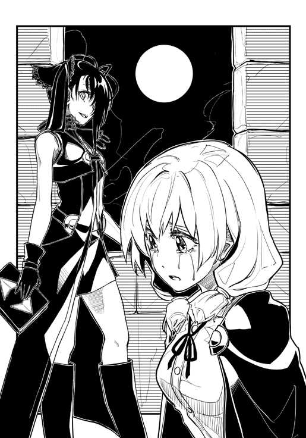
楓は深い絶望感に包まれていた。
居平に銃を向けられた時、彼女の中にはまだ僅かな希望があった。何か事情があって武器を向けているにせよ、クラスメイトなのだから話し合えば必ず分かってくれる。そう信じていた。しかし、誘拐されてから数時間。居平は楓とまともに会話をしようとしない。鉄面皮は崩れることなく、ただただ彼女を監視するばかりだった。
「もう、帰りたい」
居平との会話を諦め、楓は視線を落として冷たい石の床に向かって本音を出す。元の世界の家に帰りたい。それが無理ならば、せめてクレルモンの塩屋に帰してほしかった。
「わたしも帰りたい」
それを聞き、楓は驚いて顔をあげる。これまで一切言葉を発しなかった居平がようやく口を開いたのだ。
「でもね、そのためにはキャストを狩らないといけないの」
居平は相変わらずの口調だ。
そんな彼女を見ていると、楓は空恐ろしくなる。
「ねぇ、どうして居平さんはそんな風に思うの？」
居平は人を撃っても、クラスメイトを無視していても、ずっと同じ表情だった。まるで、心が抜かれてしまったみたいに。楓はそんな居平に不気味さを感じ始めていた。
「信明様がそう仰っているからよ」
「信明様？ 信明様って......」
「幸嶋信明様。リヨン帝国執政官にして偉大なる帝国軍総指令官」
「ちょ、ちょっと待って。幸嶋君もこっちに来てるの？ リヨン帝国執政官ってどういうこと？」
楓は幸嶋信明のことを知っていた。綾部恭介と同じで、クラスの中ではトップクラスの成績を誇る生徒だった。しかし、楓と同じようにあまり派手なタイプの生徒ではない。成績以外で話題になるような生徒ではなかった。
「信明様は、わたしたちをこの世界から救い出してくださるの。だから、わたしは信明様の命令通り、キャストを狩らなくちゃいけない。キャストを捕まえて、帝都に送り......」
やはり居平の表情は変わらない。
「処刑する」
覚悟はしていたことだが、やはり直接聞くとショックが大きい。それがクラスメイトの口から出たものならばなおさらだ。
「わたし、殺されるの？」
「すべては信明様が決められるわ」
どうして？ どうして？ どうして？ 同じ疑問が頭の中を埋め尽くす。
「幸嶋君は何を考えているの？」
「みんなの幸せよ」
その〝みんな〟の中に処刑されるわたしは含まれていないのか。楓はそう考えると切なくなった。
「この世界はね、『創造主』によって創られた悪夢なの」
「同じようなことを綾部君も言ってた」
「あら、そうなのね。でも、わたしたちを救ってくれるのは信明様だけよ」
「どうして？ わたしたちと幸嶋君たちが協力したら、絶対にこの世界から脱出できるよ！」
「ダメよ。だって、綾部君も西島君もあなたも、キャストは基本的にみんな殺しちゃうんだから」
「そんな！」
「創造主はキャストだというのが信明様のお考えなの。この世界を創りあげたロールがあって、そのロールを保有するキャストがいる。だから、キャストを皆殺しにしちゃえば、きっとわたしたちは元の世界に戻れるわ」
単純明快な考えだった。すぐに理解できるからこそ、その根底にある狂気的な思想がすぐに見つけられる。
「そんなのおかしいよ。みんなで一緒に助かればいいのに！」
「助かるに値しない人がいるのよ」
「助かるに値しない人？」
「そう。忘れたの？ わたしたちのクラスで起こったあの事件のこと」
それだけ言い残し、居平は再び何も喋らなくなった。
部屋は沈黙が支配し、外は夜の帳が支配する。
砦の周りでは、神聖騎士団が宵闇に紛れてぞろぞろと行進し、敵陣を取り囲み始めていた。砦を攻めるのが彼らの仕事ではない。
砦の中の人間を殺すのは副団長の錦織紫穂の仕事。騎士団は砦から逃げ出してきた残党の処理が役割だ。
腰に下げた剣とともに、騎士団は作戦開始の合図を待つ。
「――俊足の狩人」
勇司は本を召喚し、タクトを握る。朝日が降り注ぐファルネ邸の中庭で、勇司は敵を想定した木と対峙していた。彼の腰には地下の武器庫から引きあげた剣がぶら下がっている。
本を擦る。
周りの時間が減速し、体が重くなる。本とタクトが消え、空になった手で剣を鞘から抜く。
目標の樹木までの距離は五メートルほど。その樹木は勇司の腕が回らないほどの太さで、ファルネに自由にしていいと言われていた。そこに駆け寄り、三回斬りつけたところで、世界の速度が元に戻った。
「痛ッ！」
同時に勇司の体に激痛が走る。木の幹を思いっきり斬りつけたため、その反動が両腕に一気に襲いかかったのだ。
その一方、木の方は斧を使ってもここまで抉れないだろう、というほどに深く傷が刻まれていた。
「とんでもない動きねぇ、坊や」
拍手をしながら、ファルネが現れた。スキップするような足取りだが、その背には自身の身長ほどもあるような巨大なフレイルをおぶっていた。
「でも、凄いのは速さだけね。剣の使い方がてんで素人だわ」
そう言うと、ファルネは背負っていたフレイルを両腕にとり、思いっきり振り上げる。まるで発泡スチロールの偽物を振りまわしているようだが、無論この世界にそんな素材はない。
「いい？ 戦いはパワーとテクニックなの」
ふりふりのネグリジェでデコレーションされた、丸太のように屈強な両腕が巨大なフレイルを風のような速さで動かし、勇司が斬りつけていた木をいとも簡単に薙ぎ払った。ファルネ自身は微動だにすることなく、大股を開いてその場でどっしりと構えている。勇司とは貫禄が全く違った。
「うわぁ......」
こんな人が戦場にいたら、相手はもう恐れて逃げ出すしか選択肢はないだろうな。勇司は自分がそんな状況に陥ったところを想像し、身震いした。
「戦いが始まっちゃえば、相手を倒すのに美しい型や正しい剣の使い方なんか関係ない。今みたいに、敵をぶち殺しちゃえばそれでおしまいだからね。だけど、最低限知っておかなくちゃいけない知識や戦い方っていうのがあるのよ。それを知っているだけで、自分の身を守れるし、確実に相手の息の根を止められる。どう？ 剣の使い方を知りたい？」
逡巡。
そして、少しでも迷ったことを勇司はすぐに後悔した。
「教えてください」
もう覚悟は決めたはずだ。
楓を助けなくちゃいけない。
そのためには、戦い方を知らなければいけない。たとえ〝戦い方〟が〝守り方〟であり〝殺し方〟であったとしても、そこから目を背けることはできなかった。
「いいけど、アタシの特訓はハードよ？」
「大丈夫です！」
そこからは本当に地獄だった。中学の時に、練習が厳しいことで有名なバスケ部に所属しており、そこで厳しい練習の日々を過ごしてきた勇司だったが、ファルネの特訓はそれとは比にならないほどのものだった。
剣の持ち方を間違えては殴られ、人体の弱点はどこかを、自分の体で教えられる。目つぶしや逃げ方など、実戦的な戦いの方法も教えられた。主に体で。
「オラオラオラ！ 早く立てコラァ！ 這いつくばってたら背中から剣つきたてられて終わりだぞ！ 死にてぇのか？」
訓練中、ファルネは完全に男だった。普段から喋り方とファッション以外は完全に男なのだが、訓練が始まって熱が入ってくると、フリフリの衣装は脱ぎ捨て、口調も荒くなる。もはや、ファルネに女性の要素はなくなっていた。
「ハァ、ハァ、はい！」
必死でくらいつく勇司だが、ほんの数時間の特訓で、指の感覚はほとんどなくなり、体の中で痛くない部分はないほどに傷ついていた。
なぜ自分がまだ剣を握れているのかが、勇司自身にも分からなかった。
殴られ、蹴られ、投げ飛ばされた。それでも勇司は何度も立ち上がり、ファルネの教えを吸収しようとした。
二人は食事もとらずに、そのまま一日中中庭で剣の訓練を続けた。そして結局、勇司は特訓の途中で力尽き、そのまま気を失うように倒れ込んで、死んだように眠った。
翌朝、勇司は体の痛みとともに目を覚ました。ベッドから降りることすら一苦労するほど体の痛みは癒えておらず、来るべき戦いの備えとしては最悪のことをしてしまったのではないかと反省した。それでも、体を引きずるように部屋を出て、食堂に向かう途中に出会ったのは、勇司と同じようにおぼつかない足取りで歩く少女だった。
「ミリー！」
勇司は嬉しくなって思わず叫んでしまう。それと同時に腹筋が痛み、勇司を前かがみにさせる。
「勇司！」
その場からなかなか動けない勇司の代わりに、ミリーの方が近づいてくる。
「ごめんね。心配かけて」
「いや、いいんだよ。それより、ミリーの体調の方はどうなの？ もう傷はいいの？」
銃撃されてからまだ二日。そんな簡単に傷が治るわけもないのだが、ミリーは少し無理をしたように笑う。
「もう大丈夫！ まだ、完全復活っていう感じじゃないけど、戦えるよ。勇司が心配していた『弾丸』っていうのは、体の中になかったみたいだし」
そう言うミリーだが、歩き方がどことなくぎこちない。勇司は今まで銃で撃たれたことがないし、倒れるほどの大怪我をした経験もないが、体に二発も銃弾を撃ち込まれた人間が一日や二日で回復するとは到底思えなかった。
「戦うって、ミリーはもう戦わなくていいんだよ」
「楓を取り戻すんでしょ？」
ミリーは見透かすような目で勇司を見る。
「わたしも手伝うよ。楓が攫われたのは、わたしの責任でもあるんだし」
「どうして、ミリーはぼくたちのためにそこまでしてくれるの？」
「人助けをするのに、理由なんか必要？」
ミリーは微笑む。その屈託のない表情を見ていると、勇司は自分が質問したこと自体が、ひどく下劣なことであるように感じた。
恭介は彼女が何か企んでいると言っていた。
確かに、人助けをしたいという理由だけで、命を懸けて戦うような人間はいないのかもしれない。しかし、ミリーならばそういうこともあり得る。勇司はそんな風に思ってしまうのだった。
二人が揃って食堂に入ると、そこにはファルネと一緒に恭介がいた。
「おはよう」
恭介はいつもの穏やかな表情だが、ファルネの顔は固い。
「お手紙が皇帝陛下から送られてきたわよう。ホント、やんごとなきお言葉で感動しちゃうわ」
ファルネが一通の手紙を食堂の巨大な円卓に放った。勇司はそれを拾い上げ、ミリーと一緒に読む。
「......なるほどね」
最後まで読んだミリーがため息をついた。手紙の内容はファルネの予想通りだった。今回のクレルモン侵攻はリヨン帝国軍の正式な作戦行動ではなく、「元」帝国所属の将校たちによる命令にない行動だった。現在、アセスル砦に立て籠っている賊軍はリヨン帝国とは何の関係もない者たちで、要請があればリヨン帝国から討伐隊を派遣してもよいという。
「どうせなら、リヨン帝国の討伐隊にやらせればいいんじゃないですか？ わざわざこちらの手を汚すこともないですし」
恭介がファルネに尋ねる。しかし、ファルネは重々しく首を横に振った。
「そうなれば、アセスル砦の兵士たちは、リヨン帝国の軍隊に保護されて本国に帰るだけよ。それを見ちゃったら、クレルモンの市民たちが納得しない。この都市で革命が起こっちゃうわよ」
「なるほど。まぁ、そうでしょうね。となると、神聖騎士団が砦を侵攻するわけですか？」
「ええ。これで帝国からのお墨付きはもらったわけだから、まずはアセスル砦を攻略。その後で今回の『事故』の損害賠償を帝国に請求する『商談』を始めるって感じだわね」
「商談、ですか。その辺りは得意そうですね」
「攻め込まれたのに、トカゲのしっぽをもらっただけで納得するほどヤワじゃないわよ」
ファルネはニヒルに笑った。
「神聖騎士団の攻撃開始はいつですか？」
勇司が尋ねると、恭介とミリーもその答えを求めてファルネに注目を集める。
「今日の夕刻。教会の鐘がなり終わるのと同時に攻撃を始めるわ。副団長のロール発動が最初の攻撃よ。ま、最初の攻撃っていうか、それで攻撃はほとんど全部終わりなんだけどね」
「昨日も言いましたけど、アセスル砦にはぼくたちの友達が人質として捕らわれているかもしれないんです」
「かもしれない、じゃない」
勇司の横から、恭介が言葉を挟む。
「昨日のうちに目撃情報を集めたんだ。橘さんがアセスル砦に連れて行かれるところを見かけた市民が数名いる。その後、神聖騎士団が包囲網をつくっているから、彼女は間違いなく砦の中にいる。まだ、殺されていなければね」
いつもながらの恭介の行動力に勇司は驚きつつ、これでこの後の行動が完全に決まった。
「アセスル砦の攻撃の前に、ぼくたちに人質救出のチャンスをください」
ファルネは目を細める。
「ダメって言っても、やるんでしょ？」
「やります」
迷いがないわけではない。だが、そう言い切ってしまわなければ、恐怖に太刀打ちできそうになかった。
「はいはい。それじゃ、止めない。好きにするがいいわ。だけど、計画に変更はないからね。坊やたちが救出に成功しても、失敗しても、時刻通りに攻撃を開始するわよ。たとえ、その時にあなたたちがまだ砦の中にいたとしても、それは変わらない」
ファルネの目は本気だ。今までのファルネの行動を見ていれば、本当にその通り実行するであろうことは分かる。
「その覚悟があるなら、どうぞ。好きになさい」
「ありがとうございます」
勇司は深く頭を下げた。少し遅れてミリーと恭介も頭を下げる。
「それともう一つお願いがあるんです」
「なに？」
「紫穂に......神聖騎士団の副団長に会わせてください」
クレルモンの一角にある神聖騎士団の詰め所。城塞都市の中にあって、さらに堅牢な要塞を思わせるその建物の前に、勇司たちは立っていた。
日は高く上り、神聖騎士団による総攻撃まで残り五時間ほどに迫っていた。時間はないが、その前に彼女に会っておく必要があった。
錦織紫穂。明るく聡明で美しかった彼女に、アセスル砦にはクラスメイトが二人もいることを伝えなければならない。
いや、勇司の気持ちはそれだけではない。
勇司は純粋に、紫穂に会いたかった。彼女の元気な姿を見て安心したかった。自分だけが投げ出されたと思った世界で、次々にクラスメイトたちと再会できた。そんな中、勇司の中でやはり紫穂だけは別格だった。
会いたい。少しでも早く。
ついてきてくれたファルネが詰め所の衛兵に事情を話すと、少し待たされた後で詰め所の中に通された。建物自体は大きいが、無駄に贅沢なファルネの屋敷とは対照的に、詰め所は簡素で、質実剛健の騎士の精神をそのまま表しているような内装だった。応接間に通され、やはり質素なソファーに座って待つ。
「落ち着け」
恭介に注意され、勇司は自分が貧乏ゆすりをしていることに気付いた。
「ごめん。だけど、やっぱり落ち着かないよ」
「気持ちは分かるが、あまり期待はするなよ」
「え？ どういうこと？」
勇司はポカンとしてしまう。
「居平さんの例があるっていうことだ」
そんなことは言われるまで、勇司は考えもしなかった。
「紫穂が、居平さんみたいに変わってるかもしれないってことか？」
「そうだ。可能性がないわけじゃない」
「そんなことはない！」
勇司は思わず怒鳴ってしまう。一緒にいたミリーとファルネは、何事が起こったのかと目を丸くしている。
「俺は可能性の話をしているんだ」
「だから、そんな可能性はない！ 紫穂はあんな風にならないよ！」
どうしてそんなことが言いきれるんだ。恭介は明らかにそういう目をしていたが、口には出さなかった。勇司は恭介の心遣いに感謝しつつも、怒りは収まらない。
そんなことはない。彼女に限ってそんなことはあり得ない。紫穂と一緒にいる時間が長ければ、そんなことをするような人間ではないということは分かるはずだ。自分なら分かる。紫穂の幼馴染の自分なら。そんな思いが、腹の中で煮えくりかえっていた。
部屋のドアがノックされた。勇司の心臓が飛び跳ね、開かれるドアに注目する。
最初に入ってきたのは、すらりと背の高いブロンドヘアの男性だった。白を基調とした騎士団の制服を身にまとい、騎士団の戦士というよりは外国人モデルといった方がしっくりくるような甘いマスクだ。
その次に入ってきたのが、先に入ってきた男よりもさらに背の高い大男だった。禿頭の髭男で片目に黒い眼帯をしている。勇司と恭介が横に並ぶよりもさらに肩幅が広く、ファルネより腕も脚も太かった。まさに無骨な武人というような感じで、射るような眼光が向けられると、勇司は思わず震えた。
「失礼します」
最後に部屋に入ってきた少女の姿を見て、勇司は息をのむ。
元の世界にいた時には長かった髪は肩にかかるくらいにまで短く切られ、見たこともない騎士団の女性用の制服を身にまとっている。
だが、見間違えるはずがない。
太陽の光を少しも知らないような白い肌に、水晶のように澄んだ瞳。周りの空間そのものを明るくしそうな美少女。
錦織紫穂が神妙な顔で入ってきた。
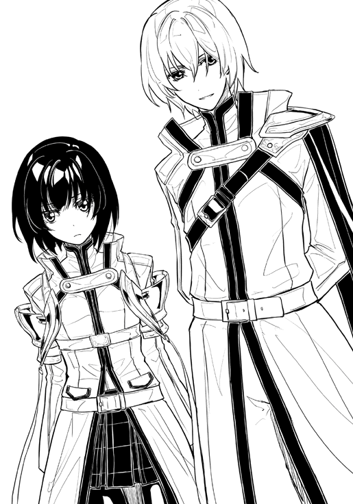
「紫穂！」
勇司は立ち上がる。紫穂も勇司たちに気付き、驚愕で目を見開いた。
「勇司！ どうしてここに？」
彼女は信じられないものを見るように、勇司と恭介の顔を何度も見比べた。
「知り合いかい？」
最初に入ってきた男が心地よいテノールで紫穂に問う。
「はい。わたしの友人です」
「ほう」
紫穂の言葉を受けて、男は満面の笑みを浮かべて勇司に手を差し伸べた。
「わたしの名前はクリスチャンローゼンクロイツ。神聖騎士団の団長をしています。親しい人はわたしのことをクリスやクリス団長と呼びます」
「西島勇司です」
勇司はクリスの手を握る。温かくて柔らかい、女性のようにしなやかな手だった。
「あなたたちの世界の流儀では、親愛の証としてこのようにお互いの手を握ると聞きました。これは、とても良い風習ですね。手は人の心を映す。これは、お互いの心を通わせる儀式ということでしょう？」
「あ、いえ、あまり深く考えたことがないので......」
親しげに話しかけられ、勇司は返答に困ってしまう。
「よろしくお願いします」
クリスは次に恭介と握手をする。
「綾部恭介です。神聖騎士団の若きカリスマにお会いできて光栄です」
「カリスマだなんてとんでもない。わたしには功績など何もない。すべて、団員たちの不屈の精神と努力の成果です」
「なるほど。しかし、その騎士たちをまとめていらっしゃるわけですから、団長の手腕には驚くばかりです」
「ははは。そこまで言われたら、素直にお礼を申しあげましょう」
お互いに腹に何か抱えた人間同士の会話というものは、表面では美辞麗句が飛び交うものの、どこか居心地の悪さを感じるものだ。勇司は二人の滑らかな会話のそこかしこに、ツンツンとしたとげがあるように感じて仕方なかった。
「こちらは神聖騎士団の副団長のエーリッヒルドルフ。作戦行動時には前線指揮をとってもらうことが多い歴戦の騎士です」
クリスに紹介されたが、ルドルフは頭を僅かに下げただけで、言葉を発することはなかった。
「そして、彼女についてはご存じのようですが、一応紹介させてもらいましょう。同じく神聖騎士団の副団長の錦織紫穂。彼女は『王者の法』の保有者である、非常に稀有なキャストです」
「アルス・マグナ？ ロールじゃないんですか？」
勇司は思わず紫穂の顔を見てしまう。
「ロールですよ。ですが、ただのロールではないため、わたしたちは別の呼び名で呼んでいます。彼女のロールは通常のロールとは威力が桁外れです。あまりにも大きな力であるため、わたしたちは紫穂のロールをアルス・マグナと呼んでいます」
ロールを超えたロール。そんな大それたものが紫穂には与えられているらしかった。
「どんなロールなんだ？」
勇司は紫穂に直接尋ねる。彼女は団長をちらりと確認してから、口を開いた。
「――侵略者」
紫穂の手元に一冊の本が現れた。しかし、その本の装丁は勇司や恭介、それに楓や居平のものとも違う。本自体が一回り大きく、真っ白な表紙に金の文字でタイトルが記されていた。
ロールの名前自体も違う。勇司たちのものより短くシンプルだった。
「わたしのロールの名前は『侵略者』。わたし自身の重心から、半径二十キロメートル以内の任意の場所にウィルスか黴を発生させることができる能力なの」
紫穂は勇司から目を逸らして話す。
「ウィルス？ 病気にさせるっていうことか？」
「うん、まぁ、そうだけど......」
紫穂は答えにくそうにしている。
「昨日、街に攻め込んできたリヨン帝国の兵士たちは、そのウィルスにやられたっていうことだね？」
恭介が切れ味のいい言葉を挟み込んだ。
「そう......。あれがわたしのロール」
「あれが......」
全身を覆う黒い斑点と、噴き出た濁った血。
昨日の様子を思い出し、勇司は鳥肌が立った。
あの時、神聖騎士団の騎士が言っていたことは本当だった。
「嘘だろ？ あんなことを紫穂がやったのか？」
「副団長のロールは正しいことに使われました」
クリスが紫穂の肩を叩く。その自然な行動に勇司は驚きと怒りを同時に感じた。
「彼女のロールで発生したウィルスは、特定の場所に留まり、そこからは移動しません。また、彼女がロールを解除すればウィルスは自然に死滅する。特定の敵だけを殲滅し、不必要な被害を出さない。感染した人間もほとんど苦しまない。感染すると三十分から一時間で意識を失い、成人男性なら感染から二時間で死亡する。非常に素晴らしい人道的なロールです」
クリスに慰められ、紫穂は俯きがちだった顔をあげた。
これでは自分が紫穂を責めているようだ。勇司は何とも言えない憤りを感じ始めていた。
「ウィルス以外に、黴も発生させられるの？」
必死に自分をなだめようとする勇司に対して、恭介はいつも通りだ。落ち着いた声で質問を続ける。
「黴は、その黴が付着している無機物を食い尽くす特殊なものなの。これも、わたしが決めた範囲内でしか活動しなくて、わたしがロールを止めれば自然に死滅する」
紫穂は自分の本を見ながら答える。
「なるほど。確かに、俺たちのロールとは桁違いの威力だ。あらゆる城壁を侵食し、あらゆる人間を食らい尽くす。まさに、侵略者の名にふさわしいロール......いや、アルス・マグナだね」
「おい！ そんな言い方やめろよ！ 別に紫穂は好きでそのロールを使っているわけじゃないんだ！」
恭介の感嘆の言葉に、勇司が噛みついた。
紫穂は好きで人を殺しているわけじゃない。
そう信じていた。いや、そう信じたかった。
「そんなのは分かってるさ。それよりも、本題に入ろう」
勇司の気持ちを察したのか、恭介はすぐに話題を切り替え、団長の方に体を向けた。
「実は、アセスル砦に俺たちの友人が人質として捕らわれています」
「なるほど」
クリスは難しい顔をする。
「その友人は、俺たちと錦織さんの共通の友人です。名前は橘楓。錦織さん、橘さんのことは勿論覚えているよね？」
恭介の質問に、紫穂は驚いたように目を見開き、ゆっくりと頷く。
「つまり、砦の攻撃を取りやめて欲しい、ということですか？」
クリスがそう言う横で、ルドルフが顔をしかめる。ファルネ同様に、たった一人の人質のために騎士団の行動が左右されるべきではない、という意見なのは明らかだ。
紫穂は再び俯き、勇司には彼女がどんな顔をしているのか分からなかった。だが、想像はできる。彼女が苦悶の表情を浮かべ、クラスメイトの事を思い出している。幼稚園の頃からずっと一緒にいるからこそ、勇司は自信を持って彼女の心の中が感じ取れた。
「そこまでは言いません。ですが、俺たちにチャンスを与えて欲しいんです」
「チャンス？」
そこでクリスが初めて穏やかな笑みを崩し、訝しがる。
「俺たちは攻撃開始前に砦に侵入します」
「君たちだけで？」
「そうです！」
そう言ったのは勇司だった。
「ぼくたちは、ぼくたちの友達を助けるんです」
「それは危険だと思いますが、大丈夫なんですか？」
クリスの疑問は当然だった。今度は恭介が答える。
「俺たちはキャストです。普通の人よりも特殊な立ち回りができる。だけど、無敵なわけではありません」
「それは分かります」
「そこでお願いがあります。神聖騎士団に正規の攻撃作戦前に、陽動をしていただきたいのです。俺たちが砦に侵入しやすいように、敵の注意をひいていただきたい」
「少し待たれよ」
地鳴りのような低い声でルドルフが横から入ってきた。
「余輩騎士団は、貴公らの私設軍隊ではない。ファルネ殿の頼みとあって話を聞く時間を割いたが、その提案はいささか不躾ではないか？」
「いいじゃないですか、ルドルフ。こちらの少年には何か考えがあるようだ。そうだね？」
クリスに促され、恭介が続きを話し始める。
「今回の攻撃は、錦織さんのロールが要だと聞いています。しかし、砦の中に友人がいるのでは、錦織さんの心に迷いが生じかねない。それは、作戦の失敗につながる可能性があります。俺たちが友人を救出できれば、その芽を摘むことができる。俺たちが行おうとしている救出作戦は、神聖騎士団のためのものでもあるのです」
「そうだよ！ 砦に楓がいるんだったら、紫穂だってロールは使えないだろ？」
恭介に同調して、勇司は紫穂に言った。しかし、紫穂は顔を上げずにじっと下を向いたままだ。
「なるほど。わざわざ紫穂をこの場に同席させたのは、彼女にその話を聞かせるつもりだったからというわけですね」
クリスは腕組みをして、目を閉じる。
「砦に捕らわれているのは、クレルモンの市民ですか？」
「はい。塩屋の娘です」
いつも通り、恭介はさらりと嘘をつく。これに関しては、全くの大嘘という訳でもないのだが、少なくとも誰もが納得する真実ということでもなかろう。
「そうですか......分かりました」
「団長！」
ルドルフは納得できていないようだが、目を開いたクリスの心は決まっているようだった。
「紫穂にあまり負担をかけたくありません。あなたたちの救出作戦のために、協力をしましょう」
「しかし！」
「理解してください、ルドルフ。これも副団長のため、つまりは神聖騎士団全体のためなのです。それに、たった一人とはいえクレルモンの市民が人質になっているのはやはり気がひけます」
苦虫を噛みつぶしたような顔をしているルドルフの横で、クリスは穏やかに微笑む。
「あなた方に救出はお任せします。ただし、作戦の時刻になれば、わたしたちは攻撃を開始します。その時は、きっと紫穂もロールを発動させますよ。いいですね、紫穂」
「......はい」
紫穂が弱々しく答えた。いや、答えさせられた。
「大丈夫だ」
勇司は紫穂を真っ直ぐ見て言う。
「ぼくが楓を助ける。だから、紫穂は友達にロールなんか使わなくていい」
このことは告げていないが、砦には居平もいる。このままでは、紫穂は居平までウィルスで殺害することになる。
本当ならばそれも避けたい。勇司はいつになく弱って見える紫穂を目の前にして、彼女の悲しみを少しでも多く取り除くことだけを考えていた。
「それでは、わたしたちは作戦準備がありますので失礼させていただきます。陽動の攻撃は、教会の三時の鐘に合わせて行います。全面攻撃は六時の鐘です」
クリスが最初に立ち上がり、脇の二人もそれに従った。
「ご武運を」
ルドルフがぶっきらぼうに言う。クリスとルドルフが部屋を出て、紫穂が彼らに続く。
「紫穂！」
勇司が声をかけると紫穂が少しだけ彼の方に顔を向けた。
「一緒に元の世界に帰ろう！ 絶対に！」
「ありがとう。だけど、今は無理」
そう残して、彼女は部屋を出た。
今は無理。
彼女の残した言葉の真意を、この時の勇司に知る術もなかった。
「何とか騎士団の協力は取り付けた。次にこっちの作戦を立てよう」
切り替えの早い恭介が次の話題に入る。
「作戦って言っても、砦に侵入して楓を助けるだけだろ？」
「砦の構造は分かってるのか？ 橘さんがどこに閉じ込められているのかも？ それに居平さんと遭遇した場合、どうやって彼女を倒すのかの算段も立てておきたい」
「う......」
自分の浅はかさを見せつけられ、勇司は閉口した。
「砦の構造は大体分かってるよ」
そう言ったのはミリーだった。
「昔、あそこの砦を使ったこともあるしね」
昔というのは傭兵時代という意味だろう。使ったというのは、砦に立て籠っていたのか、それとも攻め込んだのか。勇司にその判断はつかなかったが、質問することは何となく憚られた。
ミリーは今まで自分が傭兵だったということを一度も口にしたことがない。それは、つまり彼女にとって触れられたくない過去だということなのだろう。
「どこかに閉じ込められているとしたら、地下牢が最適なんだろうけど、砦の地下牢はもう既に壊れて埋められちゃってるからなぁ。人を閉じ込めておくとしたら、二階の倉庫かどこかなんじゃないかな。あんまり確信はもてないけど」
「なるほど。最悪の場合、砦中を探し回ることになりかねないということか」
恭介が自分の眼鏡のつるを撫でる。
「三人がバラバラになって探せばすぐに見つかるんじゃないか？」
「バカを言うな。敵に見つかった場合、一人で戦うのは危険すぎる」
勇司の案はすぐに却下となった。
「騎士団の陽動から、実際の攻撃までにおよそ三時間の余裕がある。三人が固まって行動して、見つからないように探すしかない」
「地味だな」
「俺たちは漫画のヒーローじゃない。普通の高校生なんだよ。これくらいの戦い方がちょうどいい」
「普通の高校生か」
確かに肉体と精神は普通の高校生だ。しかし、与えられた環境と特殊な能力は決して普通ではない。この作戦を成功させるには、その能力が最大のポイントとなる。
「ところで、恭介。甲冑はどうしたんだ？ あれがないと恭介のロールは使えないんだろ？」
「応急処置的だけど、鍛冶屋に修理してもらったよ。今は前と同じようにクレルモンの外の森の中に隠れさせている」
どこまでも準備のいい男だ。
「それでは、一度ファルネさんの邸宅に戻って、具体的な動きについて話し合おう」
クレルモンから北に一キロメートルほど下った場所にあるアセスル砦は不気味なほどに静まり返っていた。砦は荒涼とした平原の先にあり、背後には急峻な山がそびえたっている。砦を取り囲む神聖騎士団たちは笑顔で談笑するなど和やかなムードだった。これから戦いが始まるといっても、紫穂のロールでほとんどかたがつく。そんな余裕が彼らの様子からは窺えた。
勇司たちは騎士団の野営地を抜け、砦に続く小道の手前で止まった。陽動の攻撃が始まったら、その道を駆け砦に侵入する予定だった。
「城内にいるリヨン帝国の残党は恐らく二百名程度」
説明する恭介は既に本を手にしており、彼の後ろには甲冑の巨人が直立不動の体勢を維持している。
「恐らく、神聖騎士団が挑発しても砦から出てくるようなことはないだろう。だけど、神聖騎士団の方に注目が集まる」
「そこで、ぼくたちは側面から砦に侵入するっていうことだね」
口では簡単に言えるものの、ここから先は何が起こるか分からない。本当の殺し合いに身を投じるのだから。
「アセスル砦の城壁は高いよ。十メートルくらいはある。どうやって登るつもり？」
血で汚れてしまったポンチョではなく、ファルネに借りた街娘の平服を身にまとったミリーが尋ねる。その服装と、腰に携えた短刀はいかにもアンバランスだった。帷子くらいつければいいのだが、彼女は重いものは着たくない、とそれを拒否したのだ。
「まずはこいつがよじ登る」
恭介が甲冑を示す。
「え？ この甲冑が？」
自分よりもずっと大きな甲冑がそんなアクロバティックに動くところを、勇司は想像できなかった。
「大丈夫だよ。ほら、塩屋で居平さんに襲われた時、こいつが助けに来てくれただろ？」
「あ。そういえば......」
あの時、甲冑はクレルモンの外に置かれていたはずだった。それなのに、クレルモンの中に入ってきたということは、何とかして城壁をクリアしたということだ。
「こいつは五十メートルを四秒台で走るし、フリーロッククライミングも得意だ。力もあるし、体も堅い」
「優秀なんだね、キミ」
ミリーは甲冑の腹の辺りをバシバシ叩くが、甲冑は謙遜することも恥ずかしがることもしなかった。
「こいつが登ったら、体の中にしまってある縄梯子を上からたらす。まさか、敵さんもそんな風に侵入してくるとは思わないだろ」
「確かに。それで、その後はファルネさんの家で話した通り？」
「そうだ。俺と甲冑が先頭で、ミリーさんがしんがり。勇司は本を出したままで行動して」
「いざという時はロールを使う、だろ？」
その意味は分かる。
これは楓を救うための戦い。そして、紫穂を救うための戦いでもある。
やらなければ自分が殺される。やらなければ仲間を失う。
これは英雄になるチャンスなのだ。勇司はそうやって自分に言い聞かせ、自らを奮い立たせた。
「その通りだ。俺は背中をお前に預ける。信頼しているぞ」
恭介が突き出してきた拳に、自分の拳をぶつける。
「任せろ。ぼくたちは親友だ」
遠くの方から、微かに教会の鐘の音が聞こえた。
三時を知らせる鐘の音だ。それに合わせて、神聖騎士団のラッパと太鼓が響く。陽動作戦が始まった。
神聖騎士団の団員、約三百名が砦のすぐ近くまで近づき敵を挑発する。さらに、それよりも前に出た簡易投石機がアセスル砦の城壁を砕いた。砦のリヨン帝国の兵士たちは弓矢で応戦しようとするが騎士団には届かず、矢除けのついた投石機を破壊することもできない。
「行くぞ！」
恭介と甲冑が走りだした。
「――俊足の狩人」
その後に本を召喚した勇司とミリーが続く。身を低くして、腰ほどの高さの草に隠れるようにして進んだ。
もしも砦の射手に見つかれば、勇司たちは狙い撃ちにされてしまう。矢が自分の肉に突き刺さる痛みを想像するだけで、冷や汗が流れた。
これが戦場に身を置くということか。勇司はその恐怖と緊張感を嫌というほど感じていた。そんな気持ちを一気に消し去ったのは、神聖騎士団の一団から響いた轟音だった。
地響きを伴うその音に、勇司たちは足を止め、目を瞠った。
平原に黒煙が立ちのぼり、隊列を崩して退却を始める神聖騎士団の姿があった。砦の上には一人の少女。その左腕は黒い金属に覆われ、それを囲む微かな煙が、先ほどの攻撃の犯人が彼女であることを示していた。
「ＲＰＧか」
恭介が再び走りだした。
「ＲＰＧ？」
勇司も慌ててそれについていく。
「対戦車用のグレネードランチャーだ。居平さんのロールは、かなり多種の兵器を具象化できるらしい」
アセスル砦からリヨン帝国の旗を持った兵士が出てきたのが見えた。居平の砲撃に驚き、隊列を崩しながら撤退する神聖騎士団の後背をつこうとしているのだ。
砦の射手は勿論、居平や城外に出てきた兵士たちに見つかってもアウト。勇司たちは先ほどよりもさらに追い詰められたことになる。
「急ぐぞ！」
恭介が再び走り出し、勇司とミリーもそれに続く。それは勇司にとって人生で最も命をかけた全力疾走だった。
先頭を走る恭介が砦の側面に到達して、甲冑とともに城壁に背をつける。少し遅れて勇司とミリーが到着し、同じように外壁にもたれかかった。
「はぁはぁはぁ。見つからずにここまで来られたね」
心臓が飛び出すほど激しく鼓動し、肺胞が潰れてしまうほどに呼吸は荒い。ここからが本番だというのに、勇司の体も精神もすでにくたくただった。
「登れ」
短い命令を受けて甲冑が、ほとんどとっかかりのない城壁をよじ登り始める。必死で息を抑えながら、勇司はどんどんと壁を上がっていく頼もしい鉄の塊を見上げた。
「あの女、会ったらどうするの？」
勇司とは違い、ミリーはほとんど呼吸が乱れていない。質問されている恭介は、勇司ほどではないものの、息は荒く、額には汗が浮かんでいた。
「できれば会いたくない。でも、会ったらまともに戦えるのは勇司だけだろうね」
「え？ ぼく？」
いきなりの指名に勇司はドキッとする。
「俺の甲冑では、対物ライフルに勝てないことは分かっている。ミリーさんでは近づく前に撃たれる。勝てる可能性があるとすれば、できる限り近づいてから勇司がロールを発動させるくらいだ。幸い、勇司のロールがどんなものなのか彼女にはばれていない。勝つ方法があるとすれば、それくらいしか思いつかない」
「そうか......そうだね」
「大丈夫か？」
「大丈夫。覚悟は決めてあるから」
縄梯子が下りてくる。甲冑が無事に城壁の上に到着したようだった。恭介が登り、それに勇司が続いた。城壁を登りきると、周りを確認しながら縄梯子を素早く片付け、再び甲冑の中にしまう。幸い、周りに兵士の姿はなかった。
「まずはあそこから入ろう」
ミリーが崩れた壁面を指した。ここから先は最後尾のミリーが道案内をする形になる。不自然な陣形ではあるが、最も危険な先頭に甲冑をおき、戦闘慣れしていない切り札の勇司を守るためには、仕方のない配置だった。
まずは甲冑が先行して割れ目から砦に侵入し、中を確認して合図を送る。続いて、恭介、勇司、ミリーとそれに続く。中身のない甲冑が物を見たり音を聞いたりできるのか分からなかったが、訓練された兵士のような動きを見せる甲冑の様子から、勇司は甲冑の方が自分よりもずっと注意深く辺りを観察しているように思えた。
「静かだな」
侵入成功の高揚感とさらに張りつめた緊張感から、勇司はつい喋ってしまう。すると、すぐに後ろからミリーにペチリと叩かれた。砦の中に入ったらすべて手信号で合図を出しあい、喋らないというルールはすでに話し合っていたのだ。
屋根がほとんどが壊れているため、最上階部分は日光が直接さしてくる。そんな明るい砦の中は意外なほど自由に行動ができた。先ほどの出陣で、ほとんどの兵士が出払ったため、砦の警備をしているような兵はいないのかもしれない。
ゆっくりと進み、何か物音がすれば止まる。そんな風に慎重に動きながら、ようやく勇司たちは自分たちが侵入した最上階のエリアの調査を終えた。結局、その階には楓はおろかリヨン帝国の兵士すら誰もいなかった。
敵との交戦がなかったことに安堵したのもつかの間、一行はすぐに階段で下の階へと降りる。ところどころ壁が崩れているそのフロアでも、甲冑を先頭に一行はゆっくりと注意深く歩を進めた。
このまま誰にも会わなければいいのに。そう願い続ける勇司の鼓膜が震える。
石畳に響く足音。
これまでの物音とは違い、明確に人間の存在を知らせる音だ。
恭介が後ろに続く勇司とミリーに、待ての合図を送る。勇司はタクトを握り直し、後ろのミリーは体勢を低く構えた。
狭い廊下の曲がり角の向こうから、足音は確実にこちらに近づいてくる。恐らく、相手は一人。
来るな。来るな。来るな。
覚悟を決めたはずの勇司だったが、心に浮かぶのはそんな台詞だった。
リヨン帝国の印である双頭の狼が印された鎧を身にまとった男が曲がり角を曲がってきた。男は予想外の光景に目を見開き、後ずさろうとするが、すかさず甲冑がその男を捕まえる。
叫び声を出す暇も与えなかった。
甲冑は男を自分の方へと引き寄せ、そのまま首の骨を折る。鮮やか過ぎる手際に、勇司は目を背ける時間もなかった。
楓を助けるために一人の人間が死んだ。恭介の言葉を借りるならば、死んだのはモノであり、所詮はただの影。ゲームのキャラクターの一つでしかない。
だが、見た目は人間だ。
一度息を大きく吸い、そして、ゆっくりと吐く。
心を鬼にしろ。そうでなければ誰も助けられない。楓も紫穂も、自分自身ですらも。勇司は自分に言い聞かせた。
そんな気持ちじゃ英雄になんかなれない。
死体は上の階に運び、物陰に隠して上から襤褸をかけた。その作業を終えた後で、再び階下に戻り、楓の探索を再開する。
この先が怪しい。
ミリーの手信号がそう告げる。探索フロアの一番奥。これまですべての部屋のドアは腐っていたり、外れていたりしたが、その部屋だけはおんぼろながらもちゃんと入口にドアが嵌っていた。
行くぞ。
恭介が手信号を送る。
甲冑がタックルでドアを破り、そのまま部屋の中に転がり込む。本を持ったままなので剣を抜くことができない恭介と勇司に代わって、ミリーがそれに続く。勇司と恭介はさらにその後で部屋になだれ込んだ。
狭い部屋には誰もいなかった。椅子が二脚あるだけで、他に部屋に目立つものは見当たらない。
「ねぇ、これ」
ミリーが床から何かを拾い上げた。
「楓、髪を留める時にこれを使ってなかった？」
それは、楓が二つ結びをする時に使っていたゴムだった。
「そうだっけ？」
「もう！ これだから男子は！」
ミリーに怒られて頭をかく勇司だったが、覚えていないものは仕方ない。
「やっぱりこの部屋にいたんだよ」
「連れ出されたということか」
勇司は部屋を見回すが、この部屋は他の部屋と比べればまだしっかりとしている。人を閉じ込めるのならここで十分だろう。
「でも、どうしてだろう？」
わざわざこの部屋から連れ出す意味は何だ？ 勇司は頭を働かせるが、答えが出る前に恭介が喋り出した。
「可能性は二つ」
恭介はピースサインをつくる。
「一つは、橘さんで神聖騎士団と人質交渉をするために連れ出した」
「あ！ そうか！」
勇司とミリーの声が揃う。
「だけど、もしも人質交渉をするのなら、人質を捕まえてすぐに始めるだろう。だから、この可能性は薄い」
「あ......。そうか......」
やはり勇司とミリーの声が揃う。
「それともう一つの可能性。それは、彼女をこの砦から連れ出すために、この部屋から出したということ」
「連れ出す？ 楓を連れてみんなで逃げ出すつもりなのか？」
「いや、そんな目立つことをしたら、すぐに神聖騎士団に捕まる。もしも、橘さんをどこかに連れていくつもりなら、少数だけの部隊で何かの混乱に紛れて動くだろうな。例えば、敵の挑発に対する反撃とか」
「ちょっと待てよ！ それって、つまり......」
勇司の頭は一気に冴え、何が起こったのかが見えた。
「こっちの陽動作戦が逆に利用されたっていうことじゃないか！」
「そういうことだ。これはやられたな。居平さんは、俺たちキャストを生け捕りにしようとしていた。その理由は分からないけど、まだ居平さんがその目的を諦めていないとしたら、橘さんがさっきの戦闘の混乱に乗じて城外に連れ出された可能性がある」
「そんな！ それなら早く追わないと！」
「ここで彼女を失う訳にはいかない。急ごう！」
甲冑が廊下に飛び出し、恭介と勇司がそれに続く。
「ちょっと！ 追うって、どこに行ったのかも分からないのに？」
ミリーが慌てて後ろを追ってきた。
「この砦からこっそり逃げ出そうと思ったら、どこから出るの？」
勇司が走りながら大きな声で尋ねる。もはや隠密行動をとるほどの余裕は残っていなかった。
「攻撃に紛れて砦を出るんだったら、西の街道だよ！ そのままリヨン帝国に行ける！」
「西の街道に出られる城門は？」
「そこの突き当たりを右！」
甲冑が先陣をきって突き当たりを曲がる。
「何者だ！」
出会いがしらに会敵。
相手は軽装備の兵士三人。
甲冑が両手で敵を一人ずつ捕まえる。フリー状態の敵の一人が剣を抜き、甲冑の隙間に武器を突き立てるが、手応えのなさに驚いて固まっている。
やるぞ。
やるぞ。
やるぞ。
勇司は本をタクトで擦った。
何度も体験したことのある感覚。
体が重くなり、本が消える。
与えられた時間は僅か五秒だけ。少し迷っているだけで、制限時間は過ぎてしまう。
剣を抜く。
一歩前へ。
決意の一歩。
殺意の一歩。
恭介の横を抜け、甲冑に自分の剣を差し込んでいる男に目標を定める。
男の動きは緩慢で、その体は隙だらけだ。
目を瞑りたかった。
でも、ダメだ。
ここで逃げてはいけない。自分が今からやろうとしていることを、自分自身の目に焼き付けなければいけない。
勇司は一瞬の間にそう悟った。
自分がどういう人間になるのか、目を逸らしてはいけない。
横に薙いだ剣が男の胸のすぐ下辺りに深く食い込む。木の幹よりもずっと簡単に肉は裂け、すぐに硬い骨に当たるが、それも砕く。
超高速で動く勇司の攻撃は、勇司が体感するよりもずっと強い攻撃力を持っている。
血飛沫がゆっくり飛び散る。
そこで時間が急激に加速した。いつも通りの時間感覚が返ってきた。それと同時に体中の筋肉が悲鳴をあげる。それでも、アドレナリンが出ているためなのか、いつもより感じる痛みは少なかった。
「ヒグァァァ！」
肉を裂かれた男が断末魔の叫び声を上げる。
後ろから飛んできたミリーが男の首筋に短刀の一閃を浴びせ、その声と命を終わらせた。さらに甲冑が二人の兵士を人形でも扱うように撲殺する。
三人の兵士の命があっという間に失われた。
「今の叫び声で人が集まってくる」
恭介の声が、遠い世界のものであるように勇司には感じられた。
剣を握る自分の手を、呆然と眺める。それが自分のものだとは信じられなかった。
人の肉を切り裂く感覚が手に残り、自然と震えてきた。
これが人を傷つけるということ。殺すということ。
「急ぐぞ！」
恭介に言われ、勇司は我に返る。
今は楓を助けることだけを考えよう。
勇司は絡まる両足を無理やり動かした。
「あれ！」
廊下の窓の外をミリーが指さす。
砦の正門が開かれ、正門前の広場に馬車が停まっている。その馬車に楓が連れ込まれようとしているところだった。
勇司たちがいる場所は地上七メートルほど。入り組んだ砦の階段を下り、広場に出るためにはどれだけの時間がかかるか分からない。
「くそ！ 間に合わない！」
恭介が再び走りだす。
「待って！」
勇司が恭介を呼び止める。
「ここから降りよう！」
勇司が窓から体を乗り出す。地面は遥か遠く。
「は？ ここから？」
恭介も同じように窓から外を確認した。
「そうしないと間に合わない！」
考えている暇はない。勇司は窓枠に足をかけ、外に飛び出した。
「バカ！」
ミリーが勇司の背中を掴もうとするが、遅かった。勇司は少し傾斜のついていた壁を転がり落ちていく。
世界が回り、体勢を制御できない。
壁面を二回転しながら背中を強くうち、地面では尻もちをついた。
呼吸が止まり、強くうった尻と背の痛みが鋭く広がり、その後でじわじわと熱くなってくる。
痛い。だが、生きている。生きているからこそ、痛みを感じられる。
よろよろと立ち上がる勇司の顔に、上から降ってきた細石がぶつかる。それは、甲冑が壁を猛スピードで降りてきたために削れた外壁の一部だった。その甲冑の背中には恭介とミリーがしがみついている。
「だから、焦るなって。安全に降りられるんだから」
呆れたように恭介が言う。
「そういえば、そういうことができるんだったな......」
早く言ってほしかった勇司だった。
「誰だ！」
派手な三人の登場に、広場にいたリヨン帝国の騎士たちが集まり始める。
「勇司、立てるか？」
恭介が片手で剣を抜く。ミリーも同様に戦闘態勢に入った。
「勿論だ！」
相手はおよそ二十。
いずれも軍人。こちらを殺す覚悟も、自分が死ぬ覚悟もできている。
それならばやってやる！ 迷うものか！
「――俊足の狩人！」
再び本を召喚する。
「行くぞ！」
勇司が先陣をきって敵陣に突っ込む。敵は剣を抜き、戦闘態勢を整える。
相手の剣先が勇司の体に触れる前に、タクトが本の上で踊った。
世界の速度が変わり、勇司だけの世界が始まる。
消えた本の代わりに柄を握り、剣を抜く。一人の男の腕を斬り落とし、隣の男の腹を蹴る。五秒が経過すると同時に血飛沫が舞いあがり、勇司に蹴られた男が宙を舞った。蹴った方の勇司も、反動で後ろに吹き飛ぶ。
「大丈夫？」
バランスを崩し、背中から倒れそうになった勇司をミリーが支える。だが、彼女の言葉は勇司の鼓膜を震わせたものの、彼の脳はその振動を正しく意味変換できるほどの余裕はない。
「ウオォォォ！」
獣のような雄叫びをあげて、勇司は再び敵に突進する。
「――俊足の狩人！」
本を擦り、狂戦士のように剣をふるう。斬るというよりは、殴りつけるという表現の方がしっくりとくる動きだった。もう本を掴むことはなく、右手で剣を握り、左手でタクトを掴んで宙に浮かぶ本を擦った。
始まってしまえば、段々とあらゆる事が気にならなくなってきた。想像していたよりもずっと硬い人間の体に剣を突き立て、緩慢な太刀筋をかわしてお返しに無防備な体に凶刃をお見舞いする。
ロールを発動させ、効果が切れればすぐに本を召喚し直し、再びロールを発動させる。
ほとんど連続でロールを使い続けていたため、勇司の体はどこをどう動かしても激痛が走ったが、それが痛みだと感じることすら忘れていた。
気がつけば、勇司は死屍累々の中に立っていた。恭介やミリーの周りにもリヨン帝国軍の死体が倒れているが、勇司の周りが圧倒的に多い。広場で生きて立っているのは勇司たちだけだった。
全身が血で染まり、剣もタクトも本もすべて緋色だ。
人間を壊すのは、こんなに簡単なものなのか。
最初に人を斬った時の震えは止まっていた。今となっては、あんなに恐れていたことがバカみたいに思えるほどだった。
勇司は笑っていた。自分でも気付いていないが、彼の口角は上がり、目元は下がっていた。
人間には過ぎたる力。それを与えられ、それによって他人を圧倒できたことの恍惚感があった。
英雄とはこういうことなのか。
大きな力を持ち、人々を救う。
仲間を助けるために、敵を完膚なきまでに叩きつぶす。これが英雄の仕事なのだ。
「やってくれたわね」
馬車の窓がつき破られ、そこから銃口が突き出される。
「よけろ！ 機関銃だ！」
恭介の言葉が終わるよりも先に、破裂音が連続した。勇司は反射的にタクトを動かし、ロールを発動させる。
機関銃の弾丸が見えた。そして、悟る。
無理。
たとえ十倍の速さの世界の住人でも、かわすことなんかできっこない。
これまで、ロールの発動中は自分よりも速いものなど皆無だった勇司にとって、弾丸の速度は驚異だった。彼は無様にその場にひれ伏し、一通りの攻撃がやむのを転がりまわりながら待った。
銃撃が終わると同時に、馬車のドアが蹴り破られ、中から居平が現れた。彼女と一緒に宙に浮かぶ本も馬車から下りてくる。彼女の服装は塩屋を襲撃した時と同じ黒い上下だった。彼女のロールを知った今なら、なぜ彼女がノースリーブでミニスカートをはいているのかが分かる。これ以上に彼女の戦闘力を高める服装はない。
「キャストが二人も来てくれるなんて嬉しいわ。とりあえず、一人ずつ連れて行こうと思ったけど、一気に三人とも捕まえられそうね」
人形のように作り物めいた瞳が、勇司と恭介を見つめる。
「楓を返せ！」
鉄くさいにおいにむせびそうになりながら、勇司が叫ぶ。
「嫌よ。彼女は帝都で信明様が生かすか殺すかを判断されるのだから」
「信明様？ 信明って、幸嶋信明か？」
恭介が眉をひそめる。
「その通り。信明様は、わたしたちを導いてくださるの」
「そうか。随分と厄介な奴まで、こっちの世界に来ているらしい」
そう言ってから恭介は小さく、信明は帝都、とだけ呟いた。
「大人しく楓を返せば手荒なまねはしない」
口ではそう言っているが、タクトを持つ勇司の手には力が入っている。剣を握る指を動かし、まだ相手に刃を向けられることを確認する。
「あらあら、気が合わないわね。わたし、手荒なまねが大好きなの」
居平のタクトが、マッチを擦るように本の上を走った。彼女の両腕からそれぞれ八挺ずつ、合計十六挺のマスケット銃が現れる。
「動けなくしてあげる」
警告もなしに、マスケット銃が次々と発射された。右腕の銃口は勇司に向けられ、左腕の銃口は恭介を捉えている。
「――俊足の狩人！」
本を擦り、鈍足になった時間経過の中で居平の方へ突進する。かわしきれなかった弾丸が肩口を抉り、腿をかする。だが、そんなことは気にもせずに剣を抜き、腕と剣を鞭のようにしならせて彼女へと伸ばした。
殺せる。
殺してしまえ！
彼女の目前に迫ったところで、時間切れとなった。
「死ね！」
悲鳴を上げる全身の骨と筋肉の訴えを無視して、勇司は剣の切っ先を居平に向ける。
鋭い剣の先は細かく震えている。
ぼくは今、クラスメイトを殺そうとしているのか？
不意に浮かんだ疑問が、戦場の緊張感と高揚感を殺してくれた。
「面白いロールね」
居平は勇司の剣を銃身で払いのけ、勇司の方に一歩踏み込んできた。
やばい！
剣を構えている相手の懐に飛び込んでくるとは思わず、勇司は体をのけぞらせてしまう。狙いやすくなった勇司の腹に、居平のマスケット銃がフルスウィングされる。
内臓ごと吐き出しそうになる痛みに襲われ、勇司はそのまま倒れかけるが、寸前のところで何とかこらえた。
ロールを発動させないと......。
頭の中では分かっていても、口の中が血で満たされ、まともに言葉が出てこない。
既に弾丸が撃ち尽くされたマスケット銃を、居平は大きく振りかぶる。
「ほら」
二撃目は肩。振り下ろされた銃身が体に食い込み、鎖骨に鋭い痛みが走り、その後でじわじわと鈍痛が広がる。
「ほらほら」
三撃、四撃とわき腹と胸を打ち据えられ、膝が折れて体のバランスが崩れる。
「ほらほらほらほらほらほらほらほらほらほら」
さらに居平は腕のマスケット銃で剣舞のように勇司を痛めつける。勇司を打ちつける度にマスケット銃が腕から離れて消えていった。
女子とは思えないほどの腕力で、勇司はまともに抵抗もできないままに打たれ続けた。五発目を受けたところで剣を落とし、八発目で自分がどんな体勢なのかすら分からなくなった。
顎を殴打され、脳に直接衝撃が伝わる。最後の一撃を受け、勇司は血を吐き出しながらその場に倒れ込んだ。
最後の一挺が消えたところで、居平は再び本を擦った。
「今度はこっち」
居平の腕に現れたのは、塩屋の襲撃の時に見せた巨大な対物ライフルだった。
これで自分は木っ端みじんにされる。
朦朧とする意識の中で勇司はそう直感した。血が流れ出過ぎたためか、あるいは血を浴び過ぎたためなのか、自分の最期が近づいていることにあまり恐怖を感じない。すでに、痛みもほとんどマヒしているような状態だ。これならば、苦しまずに逝けるかもしれない、とすら思った。
しかし、勇司の予想は裏切られる。
居平はいきなり後ろを振り返ると、すぐ背後に迫っていた甲冑に向かって発砲した。それは射撃というよりも、砲撃といった方がイメージ通りの攻撃だった。
哀れな甲冑は再び居平の対物ライフルによって体を砕かれ、体の部品が飛散した。一方で、居平自身も反動で後ろに二メートルは吹き飛ぶが、地面に背中をつけることなく両足で綺麗に着地した。
「大丈夫？」
駆け寄ってきたミリーが、勇司が起きるのを手伝ってくれる。
「ああ、大丈夫」
血を吐き出し、何とかそう言ったものの、すでに体は限界を迎えていた。落とした剣を拾おうとしても指に力が入らず、掴むことすらできない。
「勇司はもう安全な所にいて。あとはわたしたちでやるから」
ミリーが勇司の前に立ち、短剣を構える。対する居平は心なしか青くなった顔で次のロールを発動させていた。
その時、居平の背後にある馬車の中から人間が這うように出てきて、地面にぼとりと落ちた。両腕と両足を縛られたその人物は楓だった。
「やめて！ こんなのダメだよ！」
彼女はその場の様子を見て状況を理解したらしく、涙声で叫ぶ。
「わたしたちは仲間なんだよ？ クラスメイトなんだよ？ だから、もうやめて！」
ナカマ？
自分たちを撃ち殺そうとしている人間がナカマ？
頭に上った血は沸騰するように熱く、楓の言葉が勇司の心に届く前に融解する。
許せない。楓を誘拐したことも、拘束したことも、自分をひどく痛めつけたことも。
奴は敵だ。ナカマなんかじゃない。
「ぼくも戦う......」
勇司は再び剣を拾おうとしたが、やはり指に力が入らず、それを持ち上げることができない。
「――俊足の狩人」
それならば剣はいらない。勇司は震える手でタクトをとった。本は勇司の命令を待つように、ページが開いた状態で浮かんでいる。
「あいつを、倒す......殺す」
英雄になりたかった。
小さな頃から、ずっと。
平均的な能力は持っていても、突出した才能は何もない。英雄なんて凡才には大きすぎる夢だと何度も諦めようとしていた。いかにも幼稚で浅はかな理想だと自分で自分を馬鹿にした。
しかし、今は違う。
非現実のこの世界で、非現実の力を手に入れた。
「ぼくが楓を助ける」
自分にも人助けができる。自分だって英雄になれる。
目の前にいるのは仲間じゃない。クラスメイトでもない。自分の大切な友人を誘拐し、こちらに殺意を向ける敵だ。
ぼくは誰のために戦おうとしているの？
楓のため？ 自分のため？
「まだ立つなら、殺しちゃうわよ」
居平の左腕にはアサルトライフルが現れ、銃口が勇司に向けられる。これで終わらせるつもりだろう。
タクトが本の上を弱々しく這う。そのタクトを伝って、本にべっとりと勇司の血が塗りたくられた。
「ダメだよ、勇司！ これ以上ロールを使ったら、勇司が死んじゃうよ！」
ミリーが勇司からタクトを奪おうとしたが、それよりも先にタクトは本の上を走り切り、ロールが発動した。
美しい光の粒子を散らして、本とタクトが消えた。
ミリーを押しのけ、勇司は居平に直進する。
居平の銃口が勇司を捉える。たとえ、十倍の速さで世界を知覚し、行動できたとしても弾丸はかわせない。
では百倍ならどうだ？
それは、試したことのない危険な賭けだった。
「――俊足の狩人！」
ロールの発動中に、もう一度本を召喚する。ここでもう一度、ロールを発動させることはできるのか？
本にはそれができるともできないとも書いてなかった。しかし、今の状況ではこれ以外に居平の攻撃をかわす方法はなかった。
タクトを掴むと、殴りつけるようにして本に擦りつけた。
世界が歪む。その世界で、勇司は居平が自分に向けて弾丸を発射したのを見た。
「ウグッ」
これまで感じたことのないような重い衝撃が体の全方向から襲いかかった。水銀のプールに投げ込まれたように重苦しい。空気を吸おうとしても、その動きはゆったりと流れる油のようで、まともに肺まで入ってこない。
世界は一変した。
今まで見ていた、十分の一の速さの世界ではない。
周りのものはほとんど動いて見えず、唯一その動きが分かるのはこちらに向かってくる弾丸だけだった。しかし、その弾丸も軌道が分かる。
避けられる。
勇司は重たい体を必死で動かして弾丸を避けながら居平に近づく。
もうこれ以上ロールを発動させることはない。これで終わりにしなければ、勇司に勝ち目はない。
居平の目は勇司を追っていない。予想外の彼の動きに、目が追い付いていないのだろう。敵との距離は残りおよそ五メートル。
そこで、ロールの効果が切れた。しかし、まだあとに発動したロールの効果は続いているのか。ロール発動後にくる体への負担はない。
二回目に発動したロールの負担は無視してもらえるのか。それとも、すべてのロールの効果が終わった時にまとめてくるのか。それは分からないが、この段階で体に負担がかからないのはありがたい。
相手を殺すのに余裕ができる。
ここで銃がゆっくりと動き出す。的外れな場所を攻撃していたことに気付いた居平が超高速で動く勇司に狙いを定めようとしているのだ。
しかし、もはや間に合うものではない。
最後の一歩を踏みこみ、勇司は右腕を振りかざす。この速度なら、思いっきり殴っただけで人間の顔を潰すくらいはできる。
これでおしまいだ！
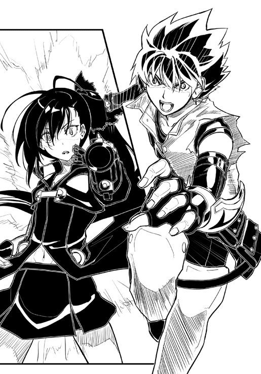
――やめて
視界の端に少女の姿が映る。
彼女は泣いていた。
これで自分は助かるのに。
自分を誘拐した悪人が死ぬのに。
それでも彼女は泣いていた。
もしかして、ぼくは間違っているのだろうか。
人を助けたいだけだ。弱い者を守りたいだけだ。元の世界に帰りたいだけだ。
英雄になりたいだけなんだ。
迷いは肉体を鈍らせ、恐れが思考を鈍化させる。
「ッツ！ しまった！」
世界の速度が戻った。
時間切れだ。
「アァァァァ！ グオォォ！」
これまでで最大の痛みが勇司の体に降りかかってきた。骨が軋み、肉が裂ける。体中に人には耐えられないような負荷を与えられ続け、勇司はその場に倒れ込んだ。
居平の足元以外には何も見えない。
撃ち殺される。もしくは、この痛みで脳が焼き切れる。
「勇司！」
別々のタイミングで、三人の声。恭介の声。ミリーの声。そして、楓の声。
勇司は返事もできずにのたうちまわっていた。
殺される。最悪の結末だ。
絶え間なく降り注ぐ苦痛を考えると、いっそのことここで殺してもらえることは本望だとすら考える勇司だったが、弾丸が彼の体を貫くことはなかった。
永遠と思えるほど長く苦しい時間の後で、ゆっくりと居平はその場に倒れた。
彼女はそのまま動かず、激痛にもだえる勇司には何が起こったのか全く理解できなかった。
「大丈夫？ ねぇ、勇司！」
勇司のところに最初に駆け寄ってきたのはミリーだった。彼女は涙目で勇司を抱きしめる。
「なんでこんな無茶をするの？ お願いだから、もうこんな事はしないで！」
ごめん。そう言いたかったが、勇司の体はそのようには動いてくれない。
楓の元には恭介が駆けつけた。恭介が手早く拘束をほどくと、楓も勇司の元に走った。恭介は倒れた居平の体を調べ、彼女の傍らに置かれた本をめくる。一通り読み終えると、無表情のまま三人に声をかけた。
「ここは危険だ。すぐに出よう」
勇司はミリーと楓に両肩を担がれる形で馬車へと連れ込まれた。馬車の御者は一番馬の扱いに慣れているミリーが担当した。
「居平さんは......」
とぎれとぎれの意識の中で、勇司は一番気になっていた質問を楓の口から聞く。
「死んでいたよ」
馬車が走りだしたところで、恭介があっさりと言いきった。
「え？ どうして？」
楓が肩を震わせる。
「彼女のロール、『魔弾の射手』は弾丸を発射する度に体に負担をかける。使用するのにコストがかかるタイプのロールだったんだ。だから、最初の襲撃の時も俺たちを深追いしなかった。いや、できなかったんだ」
「体に負担......」
「居平さんが発射する弾丸は血液が元になっている。つまり、彼女は自分の血を使って俺たちを攻撃していたんだ。着弾後に弾丸は血液に戻る。だから、撃たれた人の体から弾丸は発見されなかったというわけだ。血になってしまい、本人の血か居平さんの血か分からなくなる」
「そんな！」
楓が口を押さえて息をのむ。話を聞いて、楓と同じ感想を持った勇司だが、彼女のようなリアクションをとることはできなかった。
「血液型の違う血が混ざると、血は凝固する。そういった意味では、弾丸よりもある意味危ない武器だな」
「それじゃ、居平さんは血がなくなって死んじゃったっていうことですか？」
「失血死。あるいは、急激に血圧が減ったことによるショック死かな。俺は医者じゃないから詳しくは分からないけど」
「どうして、居平さんは死ぬまで撃ち続けたの......」
楓は震える手で口元を押さえた。そんな彼女に、恭介が明確な答えを与える。
「それが、信明の命令だったから、だろうな」
信明の命令。
そこで勇司の意識は途絶えた。
勇司が目覚めたのはファルネ邸のベッドの上だった。
体中が包帯でぐるぐる巻きにされ、あちこちに添え木がされていた。その状況を見て、勇司は自分が全身骨折状態であることにようやく気付いた。
窓の外から入る穏やかな風と陽光。そして、その陽光に照らされる一人の少女がいた。
椅子に座った橘楓が、勇司のベッドに突っ伏して眠っている。
「楓......」
掠れた声が出て、すぐに咳き込んでしまう。勇司の体は内側まで疲弊しきっているらしかった。
ドアがノックされる。
「はい、どうぞ」
咳き込みながら勇司は答えると、ドアが勢いよく開けられ、ミリーが飛び込んできた。
「勇司！」
それに続いてファルネも入ってきた。
「気がついたんだね！ よかった！」
満面の笑みでミリーはベッドに飛び乗ると、勇司に馬乗りになる。
「痛ッ！」
ミリーに触れている部分だけではなく、そこから全身に痛みが広がる。どうやら、勇司の体は本格的にぼろぼろになっているらしかった。
「みんなに心配かけたんだから、これくらいは当然だよ」
頬を膨らませ、ミリーは勇司の頬を抓る。彼女は眼を真っ赤にしていた。
「本当にごめん」
「バカ」
ミリーは額を勇司にくっつけた。久しぶりに触れる人の肌は温かく、優しく感じられた。
「ん......」
楓が体をくねらせる。
「あれ？」
顔を挙げた楓が、勇司とミリーを見て目を見開いた。
「ちょ、ちょっと何をやってるんですか！」
「いや、これは......」
慌てて弁解しようとする勇司だが、上手く状況説明もできない。
「何って、そんなの言えるわけないじゃないのよう」
ファルネが笑いながら言うと、楓の顔がみるみる赤くなっていく。
「わたしが寝ている間に、そんな......。最低！」
楓が勇司の腕を思いっきり叩く。
「イギャァァ！」
骨も筋肉も神経もすべてに大ダメージが与えられた。
「騒がしいな」
外からさらに人が入ってくる。
「恭介！」
痛みのために流れた涙を拭き、勇司は入ってきた少年の顔を見る。すると、自然に笑顔がこぼれた。これで全員の無事が確認されたことになる。
「二日も寝続けていたんだ。少しは元気になったか？」
「二日も？ そんなにか......」
勇司は改めて自分の体を動かしてみる。連続したロールの使用や、ロールの多重発動は勇司の体を確実に蝕んでいたのだ。
「その間、ミリーと楓ちゃんが交代で坊やの面倒をみてたんだから」
「ファルネさん！ そんなことは言わなくてもいいです！」
楓が顔を真っ赤にしてファルネに言う。
「居平さんはどうなった？ それに、アセスル砦の他のリヨン帝国の兵士は？」
勇司が尋ねると、恭介以外の全員が表情を暗くした。
「作戦は時間通りに決行された」
恭介が淡々と答える。
「リヨン帝国の帝国軍は全滅。居平さんは、錦織さんのロール発動前に死亡しているけど、死亡直後の生命体にもウィルスは感染するらしい。彼女の遺体はほとんど原形をとどめていないよ」
「そうだったのか」
居平莉那。
かつてのクラスメイト。勇司たちを殺そうとし、勇司が殺そうとした少女。
「勇司は悪くないよ。だって、最後の時も勇司は居平さんを殴らなかったでしょ？」
楓が心配そうに言う。
「だけど、あの時ぼくは」
頭の奥底が痛む。だけど、それは封印してはならない記憶だ。
「確かに居平さんを殺してしまってもいいと思っていたんだ」
言い逃れはできない。多くの帝国軍も手にかけた。勇司の手は間違いなく血に染まっていた。
「紫穂は？ 死体とはいえ、自分のクラスメイトにロールを使ったことを、紫穂は知っているのか？」
勇司は胸が締め付けられる思いで尋ねる。もしも紫穂がそのことを知れば、彼女がどんな気持ちになるかは容易に想像がつく。
「いや、伝えていない。伝える必要もないだろう」
「そうか。そうだよな。ありがとう」
それがせめてもの救いだ。勇司は頭を垂れた。
「これからどうするつもりだ？」
恭介の眼鏡が光る。
「また村に戻って狩人を続ける......っていうわけにもいかないよな。ぼくだって元の世界に戻るために何かしたい」
「いや、それは勇司の自由だ。この世界が気に入っているなら、狩人として一生を終えるのもいいと思う」
「恭介はどうするつもりだ？」
「俺は今回の件で事態の緊急性が分かった。だから、この事態に見合った行動を起こすつもりだ」
恭介は顔をしかめる。
「リヨン帝国に信明がいる。あいつは危険だ」
そう言うと、楓が頷いた。
「幸嶋君は、この世界はキャストが創ったものだと思っているらしいの。だから、キャストをみんな殺しちゃえば、元の世界に戻れるって思ってるみたいで......」
「そんな滅茶苦茶な！ いてて」
大きな声を出し、勇司は体の内側が痛くなる。
「橘さんの話を聞く限り、信明はすでにそれが可能な地位にいるらしい。この世界のキャストが皆殺しにされる前に、奴を止める。そして、俺は俺のやり方でこの世界から脱出してみせる」
幸嶋信明。その名前を聞いて、勇司は彼の顔を思い出そうとするが、ぼんやりとしかその顔が出てこない。一年前は同じ教室で授業を受けていたはずなのに、どんな少年だったのか、記憶が曖昧だった。勇司にとって、信明はそれほどまでに印象の薄い生徒だった。
「それじゃあ、恭介はまたキャストに会う旅を続けるのか？」
「いや、事態はもっと切迫している。計画を早めて、俺は仲間たちと合流する」
「計画？」
「今はまだ言えない。勿論、勇司が仲間になってくれるのなら話すけど」
そう言えば、その話の結論をまだ出していなかった。勇司はそれを思い出す。
「それなら、勿論仲間に......」
「あ、あの！」
友人の言葉を楓が遮る。
「なに？ どうしたの？」
「わたし、リヨン帝国の帝都に行きたいんです！」
楓のいきなりの発言に、勇司と恭介は目を見合わせた。
「幸嶋君に会って、ちゃんとお話がしたい」
「それはリスクが高すぎる」
すぐに恭介が反論する。
「橘さんは優れたロールを持っている。そんな危険な目に遭わせるわけにはいかない」
「でも、わたしは決めたんです。居平さんは幸嶋君がみんなを救うためにキャスト狩りをしていると言ってました。幸嶋君だって、やり方は違うけどみんなのことを救いたいんだと思うんです。だから、わたしは幸嶋君が何を考えているのか、直接訊こうと思います」
大人しく、弱々しかった今までの彼女からは想像できないほど、楓は強い目をしていた。
「あの、だから、その......」
そこで口ごもり、楓は勇司のベッドの布団を両手でぎゅっと掴んだ。
「勇司君には一緒についてきてほしいんだけど......。ダメかな？」
上目遣いの楓に、勇司の心臓が大きく跳ねる。
「べ、別にダメじゃないけど、やっぱそれは危険だよ」
思いがけない言動に、勇司の頭はパニック状態だ。
「そういえば、レーゲンスブルグ自由都市同盟の代表団が神聖騎士団を引き連れて、帝都に行くって言っていたわよ。今回の件について、皇帝から直接話を聞くためにね。団長も副団長の二人ももう帝都に向けて出発したわ」
ファルネから新たな情報が提供された。つまり、紫穂も帝都に向かっているということだ。
それぞれの人物の思いと現況が、勇司の頭の中でまとめられていく。
全員の視線が勇司に集まる。彼の意思を皆が待っていた。
楓の言う通り、まずは信明の話を聞くことが大切だ。それに、紫穂ともう一度会ってちゃんと話もしたい。
勇司の心は決まった。
「ぼくも帝都に行くよ」
「ありがと！」
楓の表情がぱっと明るくなる。
「恭介が自分たちの計画を進めている間に、ぼくと楓が帝都で信明を説得する。そっちの方が効率的じゃないか？」
「無理だ。あいつは勇司が考えているほど分かりやすい男じゃない」
恭介が即座に言い返す。
「それでもやらなくちゃ」
勇司と恭介の視線がぶつかり、お互いに一歩も引かない。
「それなら、わたしが勇司を守るよ」
そう言ったのはミリーだった。
「え？ どうして、ミリーまでついてくるの？」
勇司が当然の疑問を口にすると、ミリーはむっとした表情で勇司の頬を抓った。
「けーやく！ だから、勇司はまだ半分も支払いが終わってないの！ だから、ちゃんとわたしが見張らなくちゃ。それに、勇司だけだと心配で仕方ないからね」
そう言って、ミリーはウィンクをした。そんな彼女の言葉に、今度は楓が反応する。
「わ、わたしだって頑張ります！ ちゃんと、勇司君を守ります！」
「二人とも......」
予想外の状況に、勇司は顔を赤くしてしまう。この慕われ方は、本当に英雄にでもなったみたいだった。
たくさんの人の命を奪い、クラスメイトまで手にかけようとした英雄。
それは、本当に人から憧れられるような存在なのだろうか。
「そうか。分かった」
恭介が肩をすくめる。
「正直に言えば、俺は橘さんには絶対に仲間になって欲しいと思っていたんだ」
「え？」
楓は目をぱちくりとさせる。
「君のロールは優秀だ。俺たちの計画の中に組み込めば、多くのキャストたちを救うことができる」
「でも、その中で必要なら他のキャストと戦うこともあるんですよね？」
おどおどとした尋ね方だったが、その質問は恭介の甘い言葉を鋭く切り裂く。
「そうだね。そういうこともあるかもしれない」
「それなら、わたしは幸嶋君と話すことから始めたいと思います。それがどれだけ危険で難しかったとしても、みんなが助かる方法を探したいんです。......居平さんみたいな人が出ちゃうのは、もうヤダ」
「分かった。それなら、無理強いはしない」
眼鏡をかけ直すと、恭介は厳しい表情になった。
「勇司！」
恭介は勇司に歩み寄り、その手を強く握る。
「必ず橘さんを守れ。いいな？」
「当たり前だ！」
勇司はその手を強く握り返した。
「俺たちはグラナダという街にいる。そこが『革命軍』の本拠地となる街だ」
「革命軍？ おい、恭介！ 一体、何をするつもりなんだ？」
「革命だよ」
それだけ言い残すと、恭介は足早に部屋を出ていった。
「あの」
楓が勇司に向き直る。
「まだちゃんとお礼を言えてなかったよね」
楓は深々と頭を下げた。
「助けに来てくれてありがとう」
「いや、いいよ。ぼくたちは仲間なんだから」
「仲間......か」
頭を上げた楓は複雑そうな表情をしていた。
「それで、出発はいつにするの？」
ミリーが勇司の腹の上で跳ねる。
「痛い！ 痛いからやめろよ！」
「明日？ 明後日？」
「傷はそんなに早く治らないだろ！」
勇司は涙目になりながらミリーを止めようとする。
「でも、あまり悠長なことしてたら、幸嶋君が他のクラスメイトを傷つけるかも......」
「そりゃそうだけど、ぼくの体のことも気遣って......って、痛い！」
「それなら明後日だ！」
ミリーが勝手に決めてしまう。
「うん。そうだね！ ミリーちゃんの言う通り、明後日にしよう！」
「えぇ！ それは無理だよ！」
「うるさい！ 女の子を待たせるなんて、この世界じゃ許されないんだからね！」
ミリーが勇司の鼻を抓る。
「あ。それは、わたしたちの世界でも許されないことなんですよ」
楓は笑いながら、勇司の頬を抓った。
「痛いって！ もう、やめてよ！」
こうして勇司たちはリヨン帝国の帝都に向かうこととなった。
英雄とヒロインの、希望を求める絶望の旅の始まりである――。
こんにちは。熊谷です。
まずは立ち読みでこの文章を読んでいる方向けのアピールから。
「不思議な力が使えたらどんなに素敵だろう」「もしも、この瞬間にこの教室が異世界に飛ばされたら面白いだろうな」。そんな妄想をしたことありませんか？ あるというアナタ！ そんなアナタは著者の仲間です。そしてこの小説は、そんなアナタのための小説なのです。また、ミステリー小説的な犯人探しの要素や、青春小説的な甘酸っぱいやり取りも盛り込んであるので、一冊で色々と楽しみたいな、という方はぜひ本編も読んでみてください。
続きまして中身を読み終わってからあとがきを読んでいる方へ。
この度は拙著を読んでいただきありがとうございました。お楽しみいただけましたでしょうか。読者の皆様に少しでも「読んでよかった」と思っていただければ、著者としてはそれに勝る喜びはありません。
さて、実は著者としては初挑戦の異世界モノなのですが、本作の基本的な文明レベルは一〇～一一世紀を想定しています。しかし、一部の社会構造や思想はずっと近代的だったりします。この作品を書く下調べとして、久しぶりに歴史の教科書を開いてみましたが、やっぱり歴史は面白いですね。投石機の歴史とかも、調べ出すと止まらなくなります。執筆に支障が出るほど、色々な資料をあさってしまいます。小説を書くための行為が、小説の執筆を圧迫するというジレンマ。
最後になりましたが、この場を借りてお礼を。
本作にイラストをつけていただいた黒銀さん。厳しいスケジュールの中で仕事をこなしていただき、ありがとうございました。とても素敵なイラストに感動いたしました。
本作の編集をしていただいた編集部の皆様、まだまだ未熟な著者をサポートしていただき、ありがとうございました。おかげ様で新しい物語を世に出すことができました。
そして、印刷・流通・販売を担う方々のおかげで読者の方々に本を届けることができました。心から感謝いたします。
二〇一一年四月
熊谷雅人
著●
熊谷雅人（くまがい まさと）
愛知県出身。誕生日は10月10日なのでとても覚えやすいです。東京に出てきてから、それなりに時間が経つのに、未だに新宿駅の東口から西口への移動に時間がかかります。
イラスト●
黒銀（くろぎん）
京都市在住のイラストレーター・メカニックデザイナー。今年のＦ１に導入されてるＤＲＳとかＫＥＲＳとかには、メカ好きＳＦ心を、とてもくすぐられます。
〈装丁〉永井 貴（株式会社トレンド・プロ）
〈編集協力〉ブックスプラス
ロールプレイングワールド
著 者：熊谷雅人
イラスト：黒 銀
 Masato Kumagai & Kurogin
Masato Kumagai & Kurogin
この電子書籍は『ロールプレイングワールド』二〇一一年六月八日第一版第一刷発行を底本としています。
電子書籍版
発行者：安藤卓
発行所：株式会社ＰＨＰ研究所
製作日：二〇一一年九月六日
本書の無断複写（コピー）は著作権法上での例外を除き、禁じられています。